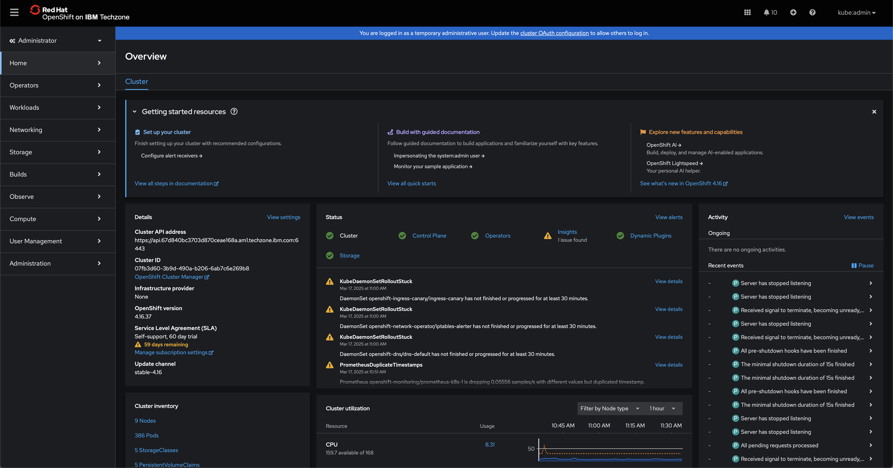

Table of Contents
On-Premises Installation and Deployment
- 1. Objectives and requirements
- 2. Reserve an environment
- 3. Bastion host setup
- 4. Cluster preparation
- 5. Install prerequisite software
- 6. Install IBM Software Hub
- 7. Install watsonx Code Assistant
IBM Cloud (SaaS) Configuration
- 1. Objectives and requirements
- 2. Reserve an environment
- 3. Configure for enterprise Java
- 4. Install WCA extension for Visual Studio Code
- 5. Install WCA plug-in for Eclipse IDE
Application Modernization - WebSphere to Liberty
Welcome to MkDocs
For full documentation visit mkdocs.org.
Commands
mkdocs new [dir-name]- Create a new project.mkdocs serve- Start the live-reloading docs server.mkdocs build- Build the documentation site.mkdocs -h- Print help message and exit.
Project layout
mkdocs.yml # The configuration file.
docs/
index.md # The documentation homepage.
... # Other markdown pages, images and other files.
On-Premises Installation and Deployment ↵
Objectives and requirementsOn-Premises Installation and Deployment
i. About this lab
The On-Premises Installation and Deployment module provides comprehensive instructions for how to prepare, configure, and deploy a simulated on-premises cluster for IBM watsonx Code Assistant (WCA) on environments hosted by IBM Technology Zone (ITZ).
By completing this module, participants will have learned and applied the skills necessary for deploying WCA on a client's on-premises infrastructure. The complete stack of technologies and services that you will deploy include:
-
Red Hat OpenShift Container Platform v4.18: a unified application development platform that lets clients build, modernize, and deploy applications at scale on their choice of hybrid cloud infrastructure.
-
IBM Cloud Pak for Data v5.1.x: a set of services comprising a data fabric solution for data governance, data engineering, data analysis, and AI lifecycle tasks.
-
IBM Software Hub v5.1: a cloud-native solution that clients use to install, manage, and monitor IBM solutions on Red Hat OpenShift Container Platform (OCP).
-
IBM watsonx Code Assistant v5.1: a generative AI coding companion that provides contextually aware assistance for programming languages.
Special acknowledgement and thanks to IBM colleagues Coralie Jonvel, Nelson Nunes, and Noe Samaille for adaptation of their deployment instructions for watsonx.ai on Red Hat OpenShift.
GPUs NOT SUPPORTED FOR L4 ON-PREMISES DEPLOYMENTS
Resource and budget constraints for IBM Technology Zone and the IBM Enablement teams means that GPUs are unavailable for the on-premises portion of the Level 4 curriculum.
The NVIDIA A100 or H100 GPUs required are simply too cost-prohibitive to be made available for individual IBMers and business partners. GPUs cannot be shared in a multi-tenant access pattern for IBM watsonx Code Assistant — and, as such, at minimum two cards would need to be made available for every L4 reservation. These costs are beyond the scope of what can be supported by this training.
Participants will have access to GPUs for the IBM Cloud (SaaS) portion of the Level 4 curriculum.
ii. Infrastructure and resource requirements
Requirements specific to the hands-on environment are outlined in the section below. Comprehensive details about the hardware requirements for x86_64 cluster services are available from IBM Software Hub documentation.
Although the hands-on environment that will be provisioned in this module utilizes a templated, pre-defined ITZ infrastructure configuration, it will be useful for those enrolled to understand the resources required to reproduce a similar cluster in real-world client scenarios. This includes details about the CPU, memory, GPU, and other hardware components required to support the necessary cluster services.
IBM Software Hub platform Additional details available from IBM Documentation
| Node Role | Number of Services | Minimum Available vCPU | Minimum Memory | Minimum Storage |
|---|---|---|---|---|
| Control plane | 3 (for high availability) | 4 vCPU per node(This configuration supports up to 24 worker nodes.) | 16 GB RAM per node. This configuration supports up to 24 worker nodes. | No additional storage is needed for IBM Software Hub. |
| Infra | 3 (recommended) | 4 vCPU per node. This configuration supports up to 27 worker nodes. | 24 GB RAM per node(This configuration supports up to 27 worker nodes.) | See the Red Hat OpenShift Container Platform documentation for sizing guidance. |
| Worker (compute) | 3 or more worker (compute) nodes | 16 vCPU per node | Minimum: 64 GB RAM per nodeRecommended: 128 GB RAM per node | 300 GB of storage space per node for storing container images locally. If you plan to install watsonx.ai, increase the storage to 500 GB per node. |
| Load balancer | 2 load balancer nodes | 2 vCPU per node | 4 GB RAM per node. Add another 4 GB of RAM for access restrictions and security control. | Add 100 GB of root storage for access restrictions and security control. |
IBM Cloud Pak Foundational Services Additional details available from IBM Documentation
| vCPU | Memory | Storage | Notes |
|---|---|---|---|
| 4 vCPU | 5 GB RAM | Reference the v4.10 hardware requirements and recommendations. | Required. IBM Cloud Pak Foundational Services are installed once for each instance of IBM Software Hub on the cluster. |
Red Hat OpenShift Container Platform (single node) Additional details available from IBM Documentation
| VM Role | Minimum Available vCPU | Minimum Memory | Minimum Storage |
|---|---|---|---|
| Bastion node | 4 vCPU | 8 GB RAM | Allocate a minimum of 500 GB of disk space. The disk can be: in the same disk as the general bastion node storage; in a separate disk on the bastion node; or on external storage. |
| Worker (compute) | 16 vCPU | 64 GB RAM | Allocate a minimum of 300 GB of disk space on the node for image storage. |
IBM watsonx Code Assistant Additional details available from IBM Documentation
| vCPU | Memory | Storage | Notes |
|---|---|---|---|
| Operator pods: 0.1 vCPU | Operator pods: 0.256 GB RAM | Persistent storage: 120 GB | Minimum resources for an installation with a single replica per service |
| Catalog pods: 0.01 vCPU | Catalog pods: 0.05 GB RAM | Ephemeral storage: 0.4 GB | The service requires at least two GPUs |
| Operand: 7 vCPU | Operand: 25 GB RAM | Image storage: Up to 107 GB with all models | GPU support is limited to: NVIDIA H100 GPUs with 80 GB RAM |
iii. Prerequisites checklist
Register for an IBM Technology Zone account
Participants require access to ITZ in order to reserve an environment and complete the hands-on work. If you do not yet have an account with the ITZ, you will need to register for one.
Obtain an IBM Entitlement API key
Participants require an entitlement API key to proceed with the on-premises installation. In order to retrieve the key:
-
Use your IBMid and password to log in to the Container Software Library.
-
Click the Entitlement keys[A] tab from the navigation menu.
-
Click Add new key[B] to generate a new entitlement key.
-
Select Copy[C] to capture the entitlement key to the clipboard.
-
Paste and save the entitlement key to a text file on your local machine.
{kind=link}
iv. Troubleshooting and support
If you require assistance or run into issues with the hands-on lab, help is available.
-
Environment issues: The lab environment is managed by IBM Technology Zone. Opening a support case ticket is recommended for issues related to the hands-on environment (provisioning, running, and so on.)
-
Product questions: For questions related to IBM watsonx Code Assistant capabilities, sales opportunities, roadmap, and other such matters, open a thread on the #watsonx-code-assistant Slack channel.
v. Next steps
In the following module, you will provision an OpenShift Container Platform cluster via IBM Technology Zone, which will serve as the basis for the on-premises environment.
Reserve an environmentOn-Premises Installation and Deployment
i. Configuring the IBM Technology Zone reservation
The foundation for the on-premises environment utilizes the OpenShift Cluster (OCP-V) - IBM Cloud template from the collection of IBM Technology Zone (ITZ) Certified Base Images.
-
Click the link below to request a reservation directly from ITZ:
-
From the Single environment reservation options, select Reserve an environment[A].
{kind=link}
-
Supply additional details about the ITZ reservation request:
RESERVATON POLICY NOTICE
After selecting
Educationfor the Purpose field, you may receive a pop-up notification stating thatthis environment is now being redirected to the OCP base image hosted On-Prem for Education and Test. You can safely ignore this notice and close it by clicking the X in the top-right corner.Do not configure using the Poughkeepsie-based resource that the notice attempts to redirect you to — it will not allow you to configure the necessary hardware specifications. Continue with the ITZ reservation request form as detailed below. If the pop-up appears again later in the configuration steps, continue to disregard the notice.
Field Value Name Give the reservation a unique name. Purpose EducationPurpose Description Give the reservation a unique description. Preferred Geography Select the region and data center geographically closest to your location. End Date and Time Select a time and date for when the reservation will expire. OpenShift Version 4.16Worker Node Count 3Worker Node Flavor 32 vCPU x 128 GB - 300 GB ephemeral storageStorage ODF - 2 TBOCP/Kubernetes Cluster Network 10.128.0.0/14OCP/Kubernetes Service Network 172.30.0.0/16Enable nested hardware virtualization on workers No -
When satisfied, verify that you agree to the Terms and Conditions for the environment and finalize your reservation request by clicking Submit.
Navigate to the My Reservations tab of the ITZ to monitor the progress of your reservation. While "Provisioning"[A], the reservation will be marked with a yellow tile. Wait for the ITZ reservation to be marked as "Ready"[B]before continuing.
PROVISIONING TIMES
This operation will take approximately 90 - 120 minutes to complete.
{kind=link}
{kind=link}
ii. Accessing the cluster
Once the cluster has been successfully deployed, you will receive an email with the header: Reservation Ready on IBM Technology Zone.
-
Confirm that the ITZ email states that Status Update: Ready[A]. Follow the link provided in the email, or access the My Reservations tab on ITZ to access your reservation.
{kind=link}
-
Scroll down the page until you reach the Reservation Details section. Record the following connection details for the OpenShift Container Platform (OCP) cluster to a notepad:
- Desktop URL (interchangeable with OCP Dashboard URL)[A]
- Cluster Admin Username[B]
- Cluster Admin Password[C]
- API URL[D]
- Bastion Username[E]
- Bastion Password[F]
- Bastion SSH Connection[G]
{kind=link}
{kind=link}
-
Click the blue Open your IBM Cloud environment button at the top of the page to launch a new browser window for accessing the OCP cluster.
Choose the kube:admin log in option and then provide the following credentials:
- Username:
kubeadmin - Password: Cluster Admin Password recorded in Step 6
At this stage, you should have successfully logged in to the OCP Dashboard.

- Username:
{kind=link}
iii. Next steps
In the following module, you will access and configure the cluster's bastion node.
Bastion host setupOn-Premises Installation and Deployment
The following section is based off of IBM Documentation detailing how to install IBM Software Hub on a Red Hat OpenShift Container Platform cluster. Reference the instructions in full at the following resource: Installing the IBM Software Hub command-line interface.
i. Connect to the bastion host
To access and configure the bastion host node, open a Terminal (Windows Terminal or the Terminal built into VS Code are good alternatives if you're on a PC).
-
Copy the Bastion SSH Connection recorded in Step 6 of the previous module and paste it into the terminal console. Hit Enter to create an SSH connection to the bastion host.
-
When prompted Are you sure you want to continue connecting (yes/no/fingerprint)?, enter
yesand hit Enter to proceed. -
The console will return a Welcome to IBM Technology Zone once connected to the bastion host, at which point you must authenticate.
-
Authenticate when prompted to do so by providing the Bastion Password.
-
If the console now reads
[itzuser@localhost ~]$then you have successfully accessed the bastion host.
-
{kind=link}
ii. OpenShift command line interface (oc)
Next, install the OpenShift Command Line Interface (CLI), designated oc, to programmatically perform work with the bastion node.
ELEVATED PERMISSIONS
Execute the following command in the Terminal console to ensure that subsequent actions taken via the Terminal console are done with elevated permissions. This will save you needing to re-authenticate again for future commands.
-
Retrieve the OCP Dashboard URL (recorded in Step 6 of the previous module). Obtain the OpenShift Base Domain by extracting the portion of the URL that matches the position highlighted in the sample URL below. Extract the characters following
.apps.up to and including.com. Do not include the/dashboardsaddendum.https://console-openshift-console.apps.678a250b79141644e78804e0.ocp.techzone.ibm.com
-
In this example, the value of the OpenShift base domain is
678a250b79141644e78804e0.ocp.techzone.ibm.com -
Record your OCP cluster's value to a notepad for future reference.
-
-
The following instruction set, when executed within a Terminal window, will install the OpenShift CLI on the bastion host node. However, the instructions require some modification before they will successfully execute.
Install OpenShift CLI
export OPENSHIFT_BASE_DOMAIN=<CHANGE_ME> wget --no-check-certificate https://downloads-openshift-console.apps.${OPENSHIFT_BASE_DOMAIN}/amd64/linux/oc.tar tar -xvf oc.tar chmod +x oc sudo mv oc /usr/local/bin/oc- Copy the instructions above and paste into a notepad.
- Replace the highlighted
<CHANGE_ME>text with the OpenShift base domain value recorded in Step 2. - Copy the modified notepad instructions to your clipboard and paste into your Terminal console.
- Press Enter to execute the instructions.
{kind=link}
-
The setup should only take a moment to complete. Once finished, try typing
ocinto the console window and hit Enter. The console output should verify thatoc(the OpenShift CLI) has been successfully installed on the bastion host.
{kind=link}
iii. Podman install
IBM Cloud Pak for Data (CP4D)'s installer requires containers, for which you will need to install Podman on the cluster nodes via the bastion host.
-
Using the connected Terminal console, execute the following instruction to install Podman:
The operation will take approximately 2 minutes to complete. After a successful operation, the console will return the message
Complete!alongside a summary of the installed components.
{kind=link}
iv. Environment variables
Set the environment variables needed for installation of CP4D on the cluster. The list is quite extensive and long, so rather than set these one at a time it's recommended that you first compile them into a single file on the bastion host. Afterwards, you can set all the variables automatically using the single file.
-
Below is a code block containing all of the necessary CP4D environment variables. Copy the contents of the entire block to your clipboard and paste into a notepad.
CP4D Environment Variables
-
You must make modifications to Line 19, Line 23, and Line 49 of the CP4D Environment Variables to tailor the variables to your specific cluster.
-
Line 19: substitute the
<REPLACE THIS VALUE>placeholder forexport OCP_URL=with to the value of OpenShift Base Domain that was recorded in Step 2. Do not replace the.api.or:6443:components, as these are required. Your modified Line 19 should resemble the following: -
Line 23: set the value of
export OCP_PASSWORD=equal to the value of Cluster Admin Password recorded in Step 6 of the previous module. For example: -
Line 49: set the value of
export IBM_ENTITLEMENT_KEY=equal to the value of the key specific to your IBM account. Reference the IBM Entitlement API Key that was generated in the iii. Prerequisites checklist section of Module 1 (Objectives and Requirements). Instructions for how to generate an IBM Entitlement API Key are provided in that section. For example:
-
-
With a Terminal console, execute the following instruction to open the vi editor (or a different editor of your choosing) and create a shell script named
cpd_vars.shon the bastion host:-
Copy the modified CP4D Environment Variables contents from the notepad (Step 7) to your machine's clipboard.
-
Switch back to the Terminal where the VI editor is now open and press the I key to enable inserting text.
-
Press Cmd + V (or Ctrl + V) to paste the contents from your clipboard.
-
To save, press Esc and then type
:wqfollowed by Enter to write the file and exit the editor.
-
v. Cloud Pak for Data command line interface (cpd-cli)
Now that the environment variables have been set, the next step towards installing CP4D is preparing the command line interface (cpd-cli).
-
Copy the following code block and execute it within the console to install
cpd-cli:wget https://github.com/IBM/cpd-cli/releases/download/v14.1.0/cpd-cli-linux-EE-14.1.0.tgz tar -xzf cpd-cli-linux-EE-14.1.0.tgz export PATH="$(pwd)/cpd-cli-linux-EE-14.1.0-1189":$PATHThe operation will take approximately 1 minute to complete.
-
Verify that the CLI has been successfully integrated with the following command:
The output from the console should resemble the screenshot below.
{kind=link}
-
Verify the status of the restarted container by typing
podman psand Enter, which should return the result of a single container running on the bastion host.The operation will take approximately 1 minute to complete. After a successful operation, the console will return a pair of messages that resemble the following:
Record the name of the restarted container to a notepad for reference later.
-
Source the newly-configured environment variables with the following command:
-
Test that the login for
occommand line is now functioning properly:The command line should return back with a prompt describing
You have access to ... projectswhich indicates thatocand the environment variables have been configured.
{kind=link}
vi. Next steps
At this stage the bastion host node has been fully configured ahead of installing the necessary software, which will be covered in the subsequent modules.
TROUBLESHOOTING: LOGGING IN AND SESSION TIMEOUTS
Be aware that SSH connections made over Terminal will time out after a long period of inactivity or due to a connection error. If you need to log back into the bastion terminal, follow the procedure below. Replace the <BASTION_PWD> placeholder with the password specific to your environment.
-
Log back into the bastion node:
-
Engage the
sudo(privileged access) session: -
Source the environment variables stored in
cpd_vars.sh: -
Log back into OpenShift:
-
Log back into
cpd-cli:
Cluster preparationOn-Premises Installation and Deployment
The following section is based off of IBM Documentation for preparing an OpenShift cluster for IBM Cloud Pak for Data. Reference the instructions in full at the following resource: Preparing Your Cluster for IBM Software Hub.
i. Change process IDs limit
With a newly installed cluster, a KubeletConfig will need to be manually created before the cluster's process IDs can be modified. This file will define the podPidsLimit and maxPods variables for the environment.
-
Copy the contents of the following code block and then execute within your Terminal console to generate a new KubeletConfig file:
oc apply -f - << EOF apiVersion: machineconfiguration.openshift.io/v1 kind: KubeletConfig metadata: name: cpd-watsonx-kubeletconfig spec: kubeletConfig: podPidsLimit: 16384 podsPerCore: 0 maxPods: 500 machineConfigPoolSelector: matchExpressions: - key: pools.operator.machineconfiguration.openshift.io/worker operator: Exists EOFKUBELETCONFIG TEST
You can test whether a KubeletConfig file exists on the system by executing the following command:
Record the output returned by the console and save this information to a notepad for reference later.
-
Use the CP4D command line (
cpd-cli) to log into OCP by executing the following code:cpd-cli manage login-to-ocp \ --username=${OCP_USERNAME} \ --password=${OCP_PASSWORD} \ --server=${OCP_URL}The operation will take approximately 1 minute to complete. After a successful run, the console should return a pair of messages that resemble the following:
{kind=link}
ii. Update the cluster's global pull secret
Use cpd-cli to manage the creation or updating of the global image pull secret via the add-icr-cred-to-global-pull-secret command.
-
Execute the following command within the Terminal console:
The console will return two
[SUCCESS]statements indicating a successful run.
{kind=link}
-
Now you must update all nodes across the cluster using OpenShift command line (
oc). Execute the following instructions via the Terminal console:Once completed, execute the following statement to check the status of the cluster nodes (this can be performed periodically to track the progress of the node updates):
Wait until the
STATUSreturns for all nodes (3 master nodes, 3 storage nodes, and 3 worker nodes) all report asReady.
{kind=link}
{kind=link}
iii. Next steps
In the following module, you will install the necessary prerequisite software required to deploy IBM Cloud Pak for Data and IBM watsonx Code Assistant.
TROUBLESHOOTING: LOGGING IN AND SESSION TIMEOUTS
Be aware that SSH connections made over Terminal will time out after a long period of inactivity or due to a connection error. If you need to log back into the bastion terminal, follow the procedure below. Replace the <BASTION_PWD> placeholder with the password specific to your environment.
-
Log back into the bastion node:
-
Engage the
sudo(privileged access) session: -
Source the environment variables stored in
cpd_vars.sh: -
Log back into OpenShift:
-
Log back into
cpd-cli:
Install prerequisite softwareOn-Premises Installation and Deployment
- Review the latest documentation on IBM Software Hub to determine the appropriate version needed for your client opportunity and OpenShift cluster version.
- The following module follows the documentation for installing IBM Software Hub's
cert-manager-operator.v.13.0for OpenShift Container Platform (OCP) v4.16.
i. Install the Red Hat OpenShift cert-manager
After the release of IBM Software Hub, previous methods for installing IBM Cloud Pak for Data (CP4D) that relied on IBM Cert Manager are no longer required. IBM Software Hub is now the recommended path and will be the method adhered to in the following section.
-
First create the prerequisite project namespace by executing the following instruction:
{kind=link}
-
Afterwards, return to your web browser and open the OCP Dashboard (Step 8 of Module 2).
From the left-hand navigation menu, navigate to Operators > OperatorHub[A].
{kind=link}
- Into the filter box[B], type
cert-manager Operator for Red Hat OpenShiftand click[C] the filtered result with the same name.
-
From the configuration screen, select the following options:
- Channel[A] :
stable-v1.13 - Version[B] :
1.13.0 - When ready, click the blue Install[C] button
- Channel[A] :
{kind=link}
-
A new page will load, summarizing the settings of the proposed Operator. Verify that the details are correct:
- Update channel[A] :
stable-v1.13 - Version[B] :
1.13.0 - Installation mode[C] :
A specific namespace on the cluster - Installed namespace[D] :
Operator recommended Namespace: cert-manager-operator - Update approval[E] :
Manual
When ready, scroll down to the bottom of the page and click the blue Install[F] button. The page will refresh periodically as the Operator is installed on the cluster. This may take several minutes to complete.
- When prompted with a Manual approval required splashscreen, click Approve[G]
- Wait until the page refreshes with the message Installed operator: ready for use and then click View Operator[H] to view the finalized Operator
- Update channel[A] :
{kind=link}
{kind=link}
{kind=link}
-
You can also track the progress of the Operator installation by drilling down into Operators > Installed Operators from the left-hand side of the OCP Dashboard. Scroll down until you locate the
cert-manager Operator for Red Hat OpenShiftentry in the table.Monitor the progress by observing changes to the fourth column of the table. Wait until Operator shows a status of
Succeeded.
-
On the OCP Dashboard, make sure you are under the Operators > Installed Operators view.
- Click the title of the
cert-manager-Operator for Red Hat OpenShiftto open the details panel - From the tabs along the top of the page, click Subscription[A]
- Under the Subscription details header, there are three panels: Update channel, Update approval, and Update status
- Click the hyperlinked 1 requires approval[B] text next to the Update Status panel
- Click the title of the
{kind=link}
{kind=link}
-
A new page, InstallPlan details for
install-12xyz, will load.The string
12xyzappended toinstall-is randomized. Your OCP cert-manager will have a unique name to the one in this example.- Click the blue Preview InstallPlan[A] button
- When the panel refreshes, click the blue Approve button to begin updating to
v1.13.1 - Wait for the status to the right of
install-12xyzto readComplete[B]
After the status of the
install-12xyzInstallPlan reads asComplete, the OCP dashboard will automatically refresh to displaycert-manager-operator.v1.13.1's multiple components and services. These can also be viewed again later by drilling down into Operators > Installed Operators > cert-manager-operator.v1.13.1 from the left-hand interface.Record the Name of the component where the Kind value set to
ServiceAccount. Save this information to a notepad for future reference.
{kind=link}
{kind=link}
-
From the left-hand navigation bar of the OCP Dashboard, once again navigate into Operators > Installed Operators to watch the progress of the update. The
cert-manager Operator for Red Hat OpenShiftwill show a Status ofInstallingwhile the update is underway. Wait until the status changes toSucceeded[A].
{kind=link}
-
Verify that
cert-managerpods are up and running by executing the following command with your Terminal console:The console should return output closely resembling the following:
NAME READY STATUS RESTARTS AGE cert-manager-bd7fbb9fc-wvbbt 1/1 Running 0 3m39s cert-manager-cainjector-56cc5f9868-7g9z7 1/1 Running 0 4m5s cert-manager-webhook-d4f79d7f7-9dg9w 1/1 Running 0 4m9sAt this point, the OpenShift
cert-managerhas been successfully deployed on the cluster.
{kind=link}
ii. Operators for GPUs
GPUs NOT SUPPORTED FOR L4 ON-PREMISES DEPLOYMENTS
Resource and budget constraints for IBM Technology Zone and the IBM Enablement teams means that GPUs are unavailable for the on-premises portion of the Level 4 curriculum.
The NVIDIA A100 or H100 GPUs required are simply too cost-prohibitive to be made available for individual IBMers and business partners. GPUs cannot be shared in a multi-tenant access pattern for IBM watsonx Code Assistant — and, as such, at minimum two cards would need to be made available for every L4 reservation. These costs are beyond the scope of what can be supported by this training.
Participants will have access to GPUs for the IBM Cloud (SaaS) portion of the Level 4 curriculum.
Although GPUs will not be available to deploy or interact with for the On-Premises Installation and Deployment L4 training modules, participants will still be able to practice and learn the skills needed to prepare a cluster for GPUs.
This section will cover all of the necessary configuration and setup required to make GPUs available to an IBM watsonx Code Assitant service — shy of actually getting to use the GPUs with the on-premises deployment. Participants will still be able to interact with GPU-powered instances in the latter IBM Cloud (SaaS) modules of the L4 curriculum.
Services such as IBM watsonx Code Assistant (on-premises), which requires access to GPUs, need to install several Operators on the OpenShift cluster to support the management of NVIDIA software components. Those components, in turn, are needed to integrate the GPUs for access by the cluster.
IBM watsonx Code Assistant requires that the following Operators be installed:
- Node Feature Discovery Operator: within the openshift-nfd namespace
- NVIDIA GPU Operator: within the nvidia-gpu-operator namespace
- Red Hat OpenShift AI
iii. Install the Node Feature Discovery Operator
The following section is based off a selection of the complete IBM Documentation available for Installing operators for services that require GPUs.
The following section will provide the instructions necessary to replicate the procedure of integrating NVIDIA GPUs with the OCP cluster. Participants are welcome to practice this with the L4 environment provided — just be aware that no physical GPU hardware will be available or connected at the conclusion of these steps.
-
Use a Terminal console to programmatically create a namespace
openshift-nfdfor the Node Feature Discovery (NDF) Operator. The following instruction set will create a namespace Custom Resource (CR) that defines theopenshift-ndfnamespace and then saves the YAML file tonfd-namespace.yaml.Copy and paste the following code block into the Terminal console, then hit Enter :
-
Install the NDF Operator within the
openshift-nfdnamespace that was created in Step 11 by defining the following objects. This will create an OperatorGroup CR and subsequently save the YAML file tooperatorgroup.yaml.Copy and paste the following code block into the Terminal console, then hit Enter :
-
Create a Subscription CR and save the YAML file to
nfd-sub.yaml.Copy and paste the following code block into the Terminal console, then hit Enter :
-
Check on the status of the OpenShift pods with the following command:
TROUBLESHOOTING: No resources found in openshift-ndf namespace.
Initially, the console may return a response such as
No resources found in openshift-ndf namespace.This likely is because the pod is still provisioning.
Use the OCP Dashboard to monitor the progress of the pod deployments:- Return to the OCP Dashboard and navigate to Operators > Installed Operators[A]
- Within the table, look for a resource named
nfd[B] - If the code from Step 13 was only recently executed, the Managed Namespaces of this resource may be showing as
Noneand the Status asUnknown[C] - Wait a few moments (and refresh the page if you wish) until the
nfdresource is replaced byNode Feature Discovery Operator[D], which should then belong to theopenshift-nfdManaged Namespace and have aSucceededStatus[E]
This operation will take approximately 2 minutes to complete. Wait and then execute the previous command from Step 14 a second time within the Terminal console. Observe the updated pod status. The console should report back the following to indicate that the Operator was successfully deployed:
{kind=link}
{kind=link}
-
Create a NodeFeatureDiscovery CR and save the YAML file to
NodeFeatureDiscovery.yaml.Copy and paste the following code block into the Terminal console, then hit Enter :
oc apply -f - <<EOF apiVersion: nfd.openshift.io/v1 kind: NodeFeatureDiscovery metadata: name: nfd-instance namespace: openshift-nfd spec: instance: "" # instance is empty by default operand: image: registry.redhat.io/openshift4/ose-node-feature-discovery-rhel9:v4.16 imagePullPolicy: Always workerConfig: configData: | core: # labelWhiteList: # noPublish: false sleepInterval: 60s # sources: [all] # klog: # addDirHeader: false # alsologtostderr: false # logBacktraceAt: # logtostderr: true # skipHeaders: false # stderrthreshold: 2 # v: 0 # vmodule: ## NOTE: the following options are not dynamically run-time configurable ## and require a nfd-worker restart to take effect after being changed # logDir: # logFile: # logFileMaxSize: 1800 # skipLogHeaders: false sources: cpu: cpuid: # NOTE: whitelist has priority over blacklist attributeBlacklist: - "BMI1" - "BMI2" - "CLMUL" - "CMOV" - "CX16" - "ERMS" - "F16C" - "HTT" - "LZCNT" - "MMX" - "MMXEXT" - "NX" - "POPCNT" - "RDRAND" - "RDSEED" - "RDTSCP" - "SGX" - "SSE" - "SSE2" - "SSE3" - "SSE4.1" - "SSE4.2" - "SSSE3" attributeWhitelist: kernel: kconfigFile: "/path/to/kconfig" configOpts: - "NO_HZ" - "X86" - "DMI" pci: deviceClassWhitelist: - "0200" - "03" - "12" deviceLabelFields: - "class" - "vendor" EOF
-
As before, check on the status of the OpenShift pods with the following command:
This operation will take approximately 1 minutes to complete. Wait until all pods return a status of
Runningbefore continuing to Step 17.
{kind=link}
iv. Install the NVIDIA GPU Operator
The following section is based off a selection of the complete NVIDIA Corporation documentation for Installing the NVIDIA GPU Operator on OpenShift.
-
Create the
nvidia-gpu-operatornamespace by executing the following code block with a Terminal console:
-
Define the OperatorGroup within the same namespace:
-
Execute the following code block within a Terminal console to get the channel version (required for Step 20), as well as create the
gpu-operator-certifiedOperator within thenvidia-gpu-operatornamespace:export CHANNEL=$( oc get packagemanifest gpu-operator-certified -n openshift-marketplace -o jsonpath='{.status.defaultChannel}' ; echo) export CURRENT_CSV=$( oc get packagemanifests/gpu-operator-certified -n openshift-marketplace -ojson | jq -r '.status.channels[] | select(.name == "'$CHANNEL'") | .currentCSV' ; echo) oc apply -f - <<EOF apiVersion: operators.coreos.com/v1alpha1 kind: Subscription metadata: name: gpu-operator-certified namespace: nvidia-gpu-operator spec: channel: "${CHANNEL}" installPlanApproval: Manual name: gpu-operator-certified source: certified-operators sourceNamespace: openshift-marketplace startingCSV: "${CURRENT_CSV}" EOF
-
Execute the following command to verify the status of the install plan:
TROUBLESHOOTING: No resources found in nvidia-gpu-operator namespace.
The
nvidia-gpu-operatornamespace is still being deployed.Wait for 1 minute and then try executing Step 20 again.The console will return a statement that Operator's APPROVAL status is currently set to
Manualand incomplete (APPROVED state is set tofalse).Therefore, you will need to approve the install plan by executing the following command:
export INSTALL_PLAN=$(oc get installplan -n nvidia-gpu-operator -oname) oc patch $INSTALL_PLAN -n nvidia-gpu-operator --type merge --patch '{"spec":{"approved":true }}'Return to the OCP Dashboard and drill down into Operators > Installed Operators to monitor the progress of the update. Wait until the
NVIDIA GPU Operator[A] appears in the table with Status set toSucceededbefore continuing.
{kind=link}
{kind=link}
-
Create a ClusterPolicy by executing the following instructions:
oc get csv -n nvidia-gpu-operator ${CURRENT_CSV} -ojsonpath={.metadata.annotations.alm-examples} | jq .[0] > clusterpolicy.json oc apply -f clusterpolicy.jsonRecord the status message returned by the console to a notepad for reference later.
-
Check the status of the pods. If GPUs are detected within the cluster, they will be included in the read-out. As the Level 4 demonstration environment is not equipped with GPU hardware, no GPU resources will be discovered by the
oc getcommand.Execute the following command with the Terminal console:
v. Install Red Hat OpenShift AI
The following steps are extracted from the complete documentation available from IBM Documentation for Installing Red Hat OpenShift AI.
IBM watsonx Code Assistant (on-premises) requires installation and configuration of Red Hat OpenShift AI on the OCP cluster. In the following section, you will:
- Install the Operator for Red Hat OpenShift AI (v2.13)
- Create a DSCInitialization instance
- Create a DataScienceCluster instance
- Edit the model inferencing configuration
-
Create the
redhat-ods-operatorProject on the OCP cluster with the following command:
-
Define the
rhods-operatorOperator Group within the project defined in Step 23:
-
Create the Operator Subscription for
rhods-operatorwithin the same project:cat <<EOF |oc apply -f - apiVersion: operators.coreos.com/v1alpha1 kind: Subscription metadata: name: rhods-operator namespace: redhat-ods-operator spec: name: rhods-operator channel: stable-2.13 source: redhat-operators sourceNamespace: openshift-marketplace config: env: - name: "DISABLE_DSC_CONFIG" EOFThis operation will take approximately 5 minutes to complete. Return to the OCP Dashboard and drill down into Operators > Installed Operators to monitor the progress of the Red Hat OpenShift AI[A] Operator deployment.
{kind=link}
-
Create a DSCInitialization object
default-dsciinredhat-ods-monitoringproject:cat <<EOF |oc apply -f - apiVersion: dscinitialization.opendatahub.io/v1 kind: DSCInitialization metadata: name: default-dsci spec: applicationsNamespace: redhat-ods-applications monitoring: managementState: Managed namespace: redhat-ods-monitoring serviceMesh: managementState: Removed trustedCABundle: managementState: Managed customCABundle: "" EOFMonitor the progress of the DSCInitialization object by executing the following command:
This operation will take approximately 2 minutes to complete. Wait for the DSCInitialization object (
dscinitialization) to return aReadystatus before continuing on to Step 27.
-
Create a DataScienceCluster object named
default-dscwithin the same project:cat <<EOF |oc apply -f - apiVersion: datasciencecluster.opendatahub.io/v1 kind: DataScienceCluster metadata: name: default-dsc spec: components: codeflare: managementState: Removed dashboard: managementState: Removed datasciencepipelines: managementState: Removed kserve: managementState: Managed defaultDeploymentMode: RawDeployment serving: managementState: Removed name: knative-serving kueue: managementState: Removed modelmeshserving: managementState: Removed ray: managementState: Removed trainingoperator: managementState: Managed trustyai: managementState: Removed workbenches: managementState: Removed EOFThe Red Hat OpenShift AI Operator automatically installs and manages services that are listed as
Managed. Services with a status ofRemovedare ignored and will not be installed.This operation will take approximately 2-3 minutes to complete.
-
Execute the following instruction to check the status of pods within the
redhat-ods-applicationsproject:If no pods are detected, wait an additional 3 minutes and try again. Confirm that ALL FIVE of the following pods are deployed with a
Runningstatus before continuing to Step 29.NAME READY STATUS RESTARTS AGE kserve-controller-manager-7b745757cb-wx7qc 1/1 Running 0 42s kubeflow-<REDACTED>-659b5dcb99-5t8vt 1/1 Running 0 56s odh-model-controller-b774fb859-2b4b4 1/1 Running 0 117s odh-model-controller-b774fb859-4gxhv 1/1 Running 0 117s odh-model-controller-b774fb859-fpnrl 1/1 Running 0 117sRecord the full name of the
kubeflow-...pod to a notepad for reference later.
-
Edit the
inferenceservice-configconfiguration map within theredhat-ods-applicationsproject. This is best achieved by using the OCP Dashboard via a web browser.- From the OCP Dashboard, navigate into Workloads > Configmaps[A]
- From the Project[B] drop-down list, select
redhat-ods-applications[C] - Click the
inferenceservice-configresource[D] and open the YAML tab[E] - In the
metadata.annotationssection[F] (Lines 4-5) of the file, add a new Line 8[G] which readsopendatahub.io/managed: 'false' - Do not save the changes yet (there are more changes in Step 30 to perform before saving the YAML file)
- The resulting YAML file should resemble the following:
{kind=link}
{kind=link}
{kind=link}
{kind=link}
-
Within the same YAML file, look for Line 379 under the ingress section[A]:
Replace Line 379 with the following (be sure to include the last
,character)[B]:Click Save[C] (bottom-left) to finalize the changes to the YAML file. If prompted with a Managed resource warning, click Save[D] again to confirm.
Copy and paste the full contents of the
inferenceservice-configYAML file to a text editor.- Search for the the following:
datasciencecluster - Record the full value of the
apiVersion:attribute containing this value and save the information to a notepad for reference later.
- Search for the the following:
{kind=link}
{kind=link}
{kind=link}
vi. Next steps
At this stage, all of the necessary prerequisites have been installed and you are ready to begin installation of an IBM Software Hub instance on the OCP cluster.
TROUBLESHOOTING: LOGGING IN AND SESSION TIMEOUTS
Be aware that SSH connections made over Terminal will time out after a long period of inactivity or due to a connection error. If you need to log back into the bastion terminal, follow the procedure below. Replace the <BASTION_PWD> placeholder with the password specific to your environment.
-
Log back into the bastion node:
-
Engage the
sudo(privileged access) session: -
Source the environment variables stored in
cpd_vars.sh: -
Log back into OpenShift:
-
Log back into
cpd-cli:
Install IBM Software HubOn-Premises Installation and Deployment
The following section is based off of IBM Documentation for Preparing to install an instance of IBM Software Hub.
i. Install shared components
Before an instance of IBM Software Hub can be installed, you need to install a set of shared services on the OpenShift Container Platform (OCP) cluster: a license service and a scheduler.
-
Three environment variables were set earlier in this lab, which are pertinent now to the license service (as well as the scheduler) that IBM Software Hub requires. These include:
$PROJECT_LICENSE_SERVICE$PROJECT_SCHEDULING_SERVICE$VERSION
Refresh yourself on these variable's values by executing the following:
These variables were defined within the Cloud Pak for Data (CP4D) Environment Variable (Step 8 of Module 3) on Lines 35, 36, and 53, respectively.
-
Install the license service components by executing the following command:
cpd-cli manage apply-cluster-components \ --release=${VERSION} \ --license_acceptance=true --licensing_ns=${PROJECT_LICENSE_SERVICE}This operation will take approximately 10 minutes to complete. After a successful operation, the console will return the following statements:
Record the full directory address reported by the
[SUCCESS]statement that readsYou may find output and logs in the...directory. Save this information to a notepad for future reference.
-
Install the scheduling service by executing the following command:
cpd-cli manage apply-scheduler \ --release=${VERSION} \ --license_acceptance=true \ --scheduler_ns=${PROJECT_SCHEDULING_SERVICE}This operation will take approximately 10 minutes to complete. After a successful operation, the console will return the following statements:
ii. Install an instance of IBM Software Hub
Finally, the cluster has been prepared to a state where it is ready to install an instance of IBM Software Hub. Although the following section requires relatively few inputs from the participant, it will take approximately 45 minutes for the installation process to complete.
-
Create the two new projects that will host your instance by executing the following instructions within a Terminal console:
-
Apply the required permissions for an instance of IBM Software Hub:
cpd-cli manage authorize-instance-topology \ --cpd_operator_ns=${PROJECT_CPD_INST_OPERATORS} \ --cpd_instance_ns=${PROJECT_CPD_INST_OPERANDS}This operation will take approximately 2 minutes to complete. After a successful operation, the console will return the following statements:
-
Create the instance by executing the following code block:
cpd-cli manage setup-instance \ --release=${VERSION} \ --license_acceptance=true \ --cpd_operator_ns=${PROJECT_CPD_INST_OPERATORS} \ --cpd_instance_ns=${PROJECT_CPD_INST_OPERANDS} \ --block_storage_class=${STG_CLASS_BLOCK} \ --file_storage_class=${STG_CLASS_FILE} \ --run_storage_tests=trueThis operation will take approximately 45 minutes to complete, after which the console will return:
Examine the last series of console messages just prior to the three
[SUCCESS]statements made after the execution of Step 6. Record the name of the last deployment made to the cluster just prior to those[SUCCESS]statements. Save this information to a notepad for future reference.
iii. Next steps
With IBM Software Hub now successfully deployed on the OCP cluster, the environment is primed for the installation of IBM watsonx Code Assistant.
TROUBLESHOOTING: LOGGING IN AND SESSION TIMEOUTS
Be aware that SSH connections made over Terminal will time out after a long period of inactivity or due to a connection error. If you need to log back into the bastion terminal, follow the procedure below. Replace the <BASTION_PWD> placeholder with the password specific to your environment.
-
Log back into the bastion node:
-
Engage the
sudo(privileged access) session: -
Source the environment variables stored in
cpd_vars.sh: -
Log back into OpenShift:
-
Log back into
cpd-cli:
Install IBM watsonx Code AssistantOn-Premises Installation and Deployment
The following section is based off of IBM Documentation for Installing watsonx Code Assistant v5.1.x.
i. User responsibilities
Following the release of IBM Software Hub v5.x, watsonx Code Assistant (WCA) administrators need to only specify the watsonx-code-assistant component in order for the Software Hub to automatically fetch the required dependencies.
To install WCA on-premises, you must be an instance administrator with permissions to install software in the following Red Hat OpenShift projects:
-
The operators project for the instance: Operators for this instance of WCA are installed in the
operatorsproject. In the installation commands, the${PROJECT_CPD_INST_OPERATORS}environment variable refers to the operators project. -
The operands project for the instance: The custom resources for the control plane and WCA are installed in the operands project. In the installation commands, the
${PROJECT_CPD_INST_OPERANDS}environment variable refers to the operands project.
ii. System requirements
Participants are encouraged to review the following requirements again before continuing with the install to verify that all the components are in place and to reinforce their understanding as to why such components are needed.
IBM SOFTWARE HUB VERSIONING
All of the components that are associated with an instance of IBM Software Hub must be installed at the same release version. For example, if the IBM Software Hub control plane is installed at Version 5.1.0, you must install WCA at Version 5.1.0 as well.
ENVIRONMENT VARIABLES
The commands in this task use environment variables so that you can run the commands exactly as written. In the case of this lab, those variables are defined within the cpd_vars.sh manifest that was created in Module 3.
-
If you want to read more about how to structure scripts like
cpd_vars.sh, which define environment variables within a single source of truth, review the IBM Documentation. -
To use the environment variables from the script, you must source the environment variables before you run the commands in this task. For example, run:
SECURITY CONTEXT CONSTRAINT
WCA works with the default Red Hat OpenShift® Container Platform security context constraint, restricted-v2.
COMMON CORE SERVICES WCA requires the availability of IBM Software Hub common core services. If the common core services are not installed in the operands project for the instance, the common core services are automatically installed when you install WCA. The common core services installation increases the amount of time the installation takes to complete.
STORAGE Storage classes must be specified ahead of time when installing WCA. The following storage classes are recommended. However, if you don't use these particular storage classes on future cluster deployments, ensure that you specify a storage class with an equivalent definition.
| Storage | Notes | Storage Classes |
|---|---|---|
| OpenShift Data Foundation | When you install the service, specify file storage and block storage. | File storage: ocs-storagecluster-cephfsBlock storage: ocs-storagecluster-ceph-rbd |
| IBM Fusion Data Foundation | When you install the service, specify file storage and block storage. | File storage: ocs-storagecluster-cephfsBlock storage: ocs-storagecluster-ceph-rbd |
| IBM Fusion Global Data Platform | When you install the service, specify the same storage class for both file storage and block storage. | File storage: ibm-spectrum-scale-sc or ibm-storage-fusion-cp-scBlock storage: ibm-spectrum-scale-sc or ibm-storage-fusion-cp-sc |
| IBM Storage Scale Container Native | When you install the service, specify the same storage class for both file storage and block storage. | File storage: ibm-spectrum-scale-scBlock storage: ibm-spectrum-scale-sc |
| Portworx | When you install the service, the --storage_vendor=portworx option ensures that the service uses the correct storage classes. |
File storage: portworx-shared-gp3Block storage: portworx-elastic-sc |
| NFS | When you install the service, specify the same storage class for both file storage and block storage. | File storage: managed-nfs-storageBlock storage: managed-nfs-storage |
| Amazon Elastic storage | When you install the service, specify file storage and block storage. File storage is provided by Amazon Elastic File System. Block storage is provided by Amazon Elastic Block Store. | File storage: efs-nfs-clientBlock storage: gp2-csi or gp3-csi |
| NetApp Trident | When you install the service, specify the same storage class for both file storage and block storage. | File storage: ontap-nasBlock storage: ontap-nas |
| Nutanix | Not supported. | Not applicable. |
iii. Deployment checklist
To review, the following tasks need to be completed before installing WCA on-premises. The various modules of this hands-on lab have already covered those applicable to the environment you are about to deploy. However, keep this checklist handy for future deployments you will be making with clients and in the field.
| Prerequisite | Documentation |
|---|---|
| The cluster meets the minimum requirements for installing WCA. | System requirements |
The workstation from which you will run the installation is set up as a client workstation and includes the following command-line interfaces: IBM Software Hub CLI (cpd-cli) and OpenShift CLI (oc) |
Setting up a client workstation |
| The IBM Software Hub control plane is installed. | Installing an instance of IBM Software Hub |
| For environments that use a private container registry, such as air-gapped environments, the WCA software images are mirrored to the private container registry. | Mirroring images to a private container registry |
For environments that use a private container registry, such as air-gapped environments, the cpd-cli is configured to pull the olm-utils-v3 image from the private container registry. |
Pulling the olm-utils-v3 image from the private container registry |
| The operators that are required to use GPUs are installed. | Installing operators for services that require GPUs |
| Red Hat OpenShift AI is installed. | Installing Red Hat OpenShift AI |
iv. Fetching dependencies
In the following section, participants will assume the role of an instance administrator and install WCA using the IBM Software Hub components set up in the previous module.
-
Apply the entitlement for WCA by executing the following code block:
-
Now that the components have been defined, install the services Operators by executing the following code block:
cpd-cli manage apply-olm \ --release=${VERSION} \ --cpd_operator_ns=${PROJECT_CPD_INST_OPERATORS} \ --components=${COMPONENTS}Completion of this operation will take approximately 15 minutes, after which the console will return:
Record the final automation task performed just prior to (the line before) the two
[SUCCESS]messages returned by the console. Save this information to a notepad for future reference.
v. Installing software
Creating the custom resources for watsonx Code Assistant and kicking off the installation process is achieved with relatively few inputs from the administrator, but will still require several hours to resolve.
-
Start the installation process for WCA by executing the following code block:
cpd-cli manage apply-cr \ --release=${VERSION} \ --cpd_instance_ns=${PROJECT_CPD_INST_OPERANDS} \ --components=${COMPONENTS} \ --block_storage_class=${STG_CLASS_BLOCK} \ --file_storage_class=${STG_CLASS_FILE} \ --license_acceptance=trueCompletion of this operation may take up to 2 hours, after which the console will return:
TROUBLESHOOTING: CONNECTION TIMED OUT
The time needed for the operation to complete means that participant's Terminal connections to the OCP cluster will likely time out (due to inactivity) before the installation and deployment have concluded. Do not worry - the installation will continue even if the SSH connection with Terminal is interrupted. To re-authenticate with the cluster, follow the Troubleshooting: Logging in and session timeouts instructions below.
-
Once the installation procedure of Step 3 has wrapped up, retrieve the details about the WCA instance by executing the following:
cpd-cli manage get-cpd-instance-details \ --cpd_instance_ns=${PROJECT_CPD_INST_OPERANDS} \ --get_admin_initial_credentials=true- The console will return multiple lines. Take note of the lines with headers CPD Url, CPD Username, and CPD Password. These have been highlighted in the code sample below.
- Copy the three variables from your Terminal's output to a notepad for reference later.
[INFO] 2025-03-20T03:20:17.481851Z Run command: podman exec -it olm-utils-play-v3 get-cpd-instance-details --cpd_instance_ns=cpd-watsonx --get_admin_initial_credentials=true CPD Url: cpd-cpd-watsonx.apps.67da04cc1b2e441b1d48a668.ocp.techzone.ibm.com CPD Username: cpadmin CPD Password: xEhwFROJ5rAL4DZ3ggTNKzlREXDYDYHU [SUCCESS] 2025-03-20T03:20:18.949702Z You may find output and logs in the <REDACTED> directory. [SUCCESS] 2025-03-20T03:20:18.949759Z The get-cpd-instance-details command ran successfully.
-
Using a web browser, navigate to the address specified by CPU Url. A page will load for the Administration Console which allows administrators to manage both their IBM Software Hub (CP4D) and IBM watsonx Code Assistant environments.
- Supply the CPD Username[A] and CPD Password[B] values recorded in Step 4
- Click Login in[C] to proceed
- The web browser will load the IBM Software Hub dashboard, from which a number of administrative and monitoring options are available for you to inspect
{kind=link}
-
Verify that the IBM watsonx Code Assistant service was successfully installed:
- From the dashboard's navigation menu, drill down into Services > Services catalog[A]
- Search for the IBM watsonx Code Assistant service tile and confirm it is marked with a status of
Enabled - Click[B] on the tile to preview the service
- The web browser will load what essentially resembles the "catalog" view you might encounter on a online store portal such as IBM Cloud — this is not the administrative portal used for managing the WCA service
{kind=link}
{kind=link}
-
To access the WCA management console, look to the top-right corner of the IBM Software Hub dashboard and click[A] the rectangular-dot icon. This will allow you to toggle between the Software Hub and WCA administrative portals.
- Click[B] the IBM watsonx Code Assistant button to switch portals
- The administrative portal for WCA will load within the web browser
{kind=link}
{kind=link}
vi. Conclusion
Congratulations — you have successfully completed the installation of IBM watsonx Code Assistant within an on-premises environment!Explore and inspect various aspects of the on-premises environment as you wish, but keep in mind that without GPUs attached to the environment you will be significantly restricted in terms of usability. Some features may be unavailable or broken without such hardware. That is why for the Application Modernization hands-on modules, you will have full GPU access via the provided IBM Cloud environments. Those modules will delve deeply into the administrative and developer-oriented tasks that are limited for the on-premises environment.
GPUs NOT SUPPORTED FOR L4 ON-PREMISES DEPLOYMENTS
Resource and budget constraints for IBM Technology Zone and the IBM Enablement teams means that GPUs are unavailable for the on-premises portion of the Level 4 curriculum.
The NVIDIA A100 or H100 GPUs required are simply too cost-prohibitive to be made available for individual IBMers and business partners. GPUs cannot be shared in a multi-tenant access pattern for IBM watsonx Code Assistant — and, as such, at minimum two cards would need to be made available for every L4 reservation. These costs are beyond the scope of what can be supported by this training.
Participants will have access to GPUs for the IBM Cloud (SaaS) portion of the Level 4 curriculum.
TROUBLESHOOTING: LOGGING IN AND SESSION TIMEOUTS
Be aware that SSH connections made over Terminal will time out after a long period of inactivity or due to a connection error. If you need to log back into the bastion terminal, follow the procedure below. Replace the <BASTION_PWD> placeholder with the password specific to your environment.
-
Log back into the bastion node:
-
Engage the
sudo(privileged access) session: -
Source the environment variables stored in
cpd_vars.sh: -
Log back into OpenShift:
-
Log back into
cpd-cli:
Ended: On-Premises Installation and Deployment
IBM Cloud (SaaS) Configuration ↵
Objectives and requirementsIBM Cloud (SaaS) Configuration
i. About this lab
For the purposes of the Level 4 training curriculum, the hands-on components have been split across both on-premises and Software-as-a-Service (SaaS) environments on IBM Cloud. Both are supported by IBM Technology Zone (ITZ) infrastructure.
The On-Premises Installation and Deployment modules extensively covers the process of preparing, installing, and deploying a full-stack IBM watsonx Code Assistant (WCA) service "on-premises" (OpenShift on VMware). However, resource and budget constraints for ITZ team means that GPUs are unavailable for on-premises training environments like the one deployed in those modules. The NVIDIA A100 or H100 GPUs required are simply too cost-prohibitive to be made available for individual IBMers and business partners. These costs are beyond the scope of what can be supported for training with on-premises environments.
Fortunately, participants do have access to GPUs for SaaS training environments on IBM Cloud. The IBM Cloud (SaaS) Configuration module will guide participants through the process of reserving the necessary Standard plan of WCA via ITZ and configuring the environment for use. Other modules in the L4 curriculum (Application Modernization) will each leverage the SaaS environment configured in the following steps.
There are two tiers of plans (editions) available for SaaS deployments of WCA:
| Plan | Details | Use Cases |
|---|---|---|
| ESSENTIALS PLAN | Accelerates software development, allowing developers to use WCA with integrated generative AI (gen AI) for coding. | Generating, explaining, and documenting code. Creation of unit tests. |
| STANDARD PLAN | In addition to all the capabilities found in the Essentials plan, the Standard plan includes enterprise Java modernization capabilities, which will be of particular advantage for the Application Modernization modules of the Level 4 curriculum. | Java upgrades, regardless of runtime. WebSphere to Liberty transformation. Enhanced unit test generation and code explanation. |
To ensure that participants have access to the enterprise Java modernization capabilities, the instructions of this module call for provisioning a WCA Standard Plan as the basis of the SaaS environment.
ii. Prerequisites
There are two high-level architectural components to WCA Standard Plan:
- WCA extension: The interface through which developers interact with WCA, in the form of an extension (sometimes called a "plug-in") running in an integrated development environment (IDE). The IDEs currently supported by WCA are Visual Studio Code (VS Code) and Eclipse.
- WCA service: The back-end WCA service, to which requests from the extension are made and the results returned to the participant's IDE. It is available as software-as-a-service (SaaS) on IBM Cloud and as deployable software for on-premises deployments.
Participants require access to ITZ in order to reserve an environment and complete the hands-on work. If you do not yet have an account with the ITZ, you will need to register for one.
iii. Troubleshooting and support
If you require assistance or run into issues with the hands-on lab, help is available.
-
Environment issues: The lab environment is managed by IBM Technology Zone. Opening a support case ticket is recommended for issues related to the hands-on environment (provisioning, running, and so on.)
-
Product questions: For questions related to IBM watsonx Code Assistant capabilities, sales opportunities, roadmap, and other such matters, open a thread on the #watsonx-code-assistant Slack channel.
iv. Next steps
In the following section, participants will prepare the SaaS-based lab environment with the necessary services and configurations through IBM Technology Zone.
Reserve an environmentIBM Cloud (SaaS) Configuration
The following section is partially based on IBM Cloud Documentation for Setting up your watsonx Code Assistant service in IBM Cloud. Some of the configuration steps— such as creation of an access group and adding an access group to the deployment space -are automatically handled by IBM Technology Zone provisioning tasks. As such, if you are repeating this deployment for a client production environment, you may wish to reference the complete documentation set.
i. IBM Technology Zone
The following steps will guide participants through the process for requesting access to an IBM watsonx Code Assistant (WCA) Standard Plan environment from IBM Technology Zone (ITZ).
-
Open the ITZ collection at the following address:
-
There are multiple templates and flavors of WCA available:
- Locate the Request watsonx Code Assistant - Standard[A] tile
- Hover over and click the IBM Cloud environment / Reserve It[B] button
- When prompted, click the Reserve an environment button
{kind=link}
-
Supply additional details about the ITZ reservation request:
Field Value Name Assign the reservation a unique name. Purpose EducationPurpose Description Assign the reservation a unique description. Preferred Geography Select the region and data center closest to your location. Start Date and Time Select a time and date for when the reservation will begin. End Date and Time Select a time and date for when the reservation will expire. When ready, verify that you agree to the Terms and Conditions for the environment and finalize your reservation request by clicking Submit[A].
{kind=link}
-
Navigate to the My Reservations tab of the ITZ to monitor the progress. Initially, the request will be marked as Scheduled or Provisioning[A].
- Wait for the ITZ reservation to be marked as Ready before continuing to Step 5
- Scheduled: marked in grey, the reservation is awaiting approval from ITZ
- Provisioning: marked in yellow, the reservation is being deployed
- Ready: marked in green, the reservation has successfully deployed
{kind=link}
ii. Accessing the service details
Once the WCA service has been provisioned, you will receive two emails with the following headers:
- Reservation Ready on IBM Technology Zone: indicates that the ITZ cluster has been successfully provisioned
- Account: Action required: You are invited to join an account in IBM Cloud: additional steps required by the administrator (you) in order to link the WCA service to IBM Cloud
-
Steps must be taken to link the WCA service and IBM Cloud accounts at this time.
- Click the Join now[A] button within the body of the Account: Action required: You are invited to join an account in IBM Cloud email
- A web browser tab will launch and redirect to IBM Cloud
{kind=link}
{kind=link}
-
Check the I accept the product Terms and Conditions of this registration form[A] box under the Account Notice header, then click Join account[B] to continue.
{kind=link}
-
You will be presented with a prompt asking for your permission to switch your personal IBM Cloud account's view into the WCA service (ITZ-provisioned) IBM Cloud account — which will resemble something like
itz-watsonx-24. Click Proceed[A] to confirm.LOCATING THE ITZ-PROVISIONED ACCOUNT NAME
Participants can retrieve the name of the ITZ-provisioned WCA service account (
itz-watsonx-24, etc.) by looking at the contents of the Account: Action required: You are invited to join an account in IBM Cloud email: IBM Technology Zone invited you to join the following IBM Cloud account: itz-watsonx-...
{kind=link}
-
The IBM Cloud dashboard will now load within your web browser. At this time, confirm you are logged in under the WCA service account by inspecting the drop-down menu[A] as shown in the screenshot below.
SWITCHING BETWEEN IBM CLOUD ACCOUNTS
You can toggle between various IBM Cloud accounts at-will. However, for the purposes of this lab it's best that you remain under the WCA service[B] account.
{kind=link}
-
Open a new web browser tab and navigate to the My Reservations ITZ page to inspect the details of your newly-provisioned service (or follow the link provided in the Reservation Ready on IBM Technology Zone) email. Click on the newly-provisioned service's tile[A] to inspect the environment's access and authentication details.
{kind=link}
-
Scroll down the page to the Reservations Details section and locate the following values. You will need to record these to a notepad for future reference.
- IBM Cloud Service ID[A]
- IBM Cloud API key[B]
- WCA URL[C]
{kind=link}
-
Open a new browser tab and navigate to the WCA URL recorded in Step 10.
- A Resource list view on IBM Cloud will load
- Click the Launch watsonx Code Assistant[A] button to continue
{kind=link}
iii. Configuring the environment
A new tab will load to present the WCA Dashboard, which for a first-time login will automatically prompt you to configure the environment.
-
When presented with the Set up watsonx Code Assistant for Standard plan panel, click on the Set up[A] button to continue.
{kind=link}
{kind=link}
-
Having specified the installation type, more options will unlock further down the page under the Steps to complete header.
Click the blue arrow[A] icon to the right of the Create a deployment space option.
{kind=link}
-
Configure the Create a deployment space page as follows:
- Name[A]: Assign a name of your choosing to the deployment space (e.g.
wca-l4) - Description[B]: Optional
- Select storage service[C]: Do not change. IBM Technology Zone has automatically assigned Cloud Object Storage space for this reservation.
- Code assistant service[D]: Click the drop-down menu and select the WCA service belonging to your account.
All other fields can remain as their default values. When ready, click Create[E] and remain on the page for the deployment to finish.
- Name[A]: Assign a name of your choosing to the deployment space (e.g.
{kind=link}
-
Once the deployment space has been prepared, a pop-up alert will display "The space is ready". Click the X[A] icon in the top-right corner to dismiss the message and continue with the configuration steps.
{kind=link}
-
The web browser will return to the set up wizard, which now displays additional options under the Steps to complete section.
-
Notice that the Create a deployment space step has been marked as complete.
-
Click the blue arrow[A] icon to the right of the Select your license preference for response generations option to continue.
-
{kind=link}
-
The Display of Code Suggestions page permits users to configure how to display code suggestions returned by the WCA service.
- Do not change any of the settings, but you are welcome to review them if you wish
- Close the page and return to the set up wizard
{kind=link}
-
Check[A] the box to the left of the Select your license preference for response generations option to mark the task as complete.
- A prompt will appear to indicate that all setup tasks are now complete
- Click the Go to home page[B] button to conclude the setup
{kind=link}
{kind=link}
iv. Create a service ID and API key
Participants will use this API key later to enable Visual Studio Code extensions or Eclipse IDE plug-ins to communicate with the WCA service.
-
Open a new web browser tab and navigate to the IBM Cloud Service IDs admin page.
- Verify that the Service IDs[A] tab is open and that the Resource Group[B] is set to the ITZ-provisioned WCA account (Steps 7-8)
- Click Create service ID[C] to continue
{kind=link}
-
Set the Name[A] field equal to
IBM watsonx Code Assistant useror another name of your choosing. Click the Create[B] button to continue.
{kind=link}
-
From the tabs along the left side of the page, click API Keys[A]. Once it loads, click Create[B] to continue.
{kind=link}
-
Create a new IBM Cloud API Key with the following parameters:
- Name[A]:
IBM watsonx Code Assistant API key - Leaked action[B]:
Disable the leaked key - Session creation[C]:
No - When ready, click Create[D] to finalize the key
- Name[A]:
{kind=link}
-
A prompt will appear reporting that API key successfully created.
- Click the Copy[A] button and record the WCA API Key to your notebook for reference later
- It's recommended that you also Download the key as a redundancy
- When ready, close[B] the window
{kind=link}
v. Add the service ID to the WCA deployment space
With the Service ID and WCA API Key now generated, they need to be associated with your WCA instance — specifically, the WCA Deployment Space. This will be the way in which the WCA extension (VS Code or Eclipse IDE) communicates with the WCA service.
-
Return to the WCA Dashboard web browser tab (where you left off in Step 19).
- Click the stacked tiles[A] in the top-left corner of the dashboard to expand the menu items along the left-hand side
- Click on the Deployments[B] tab
{kind=link}
-
Within the table of existing deployments, click the wca-l4[A] deployment (or whatever name you chose to assign the deployment created in Step 15).
{kind=link}
-
From the tabs along the top, click the Manage[A] tab. Then, from the left-hand side options, click the Access control[B] tab.
{kind=link}
{kind=link}
-
Click the Add collaborators[A] button to expand a list of options, then click Add service IDs[B] to continue.
{kind=link}
-
Within the table of Service IDs, you should see 1 entry for the
IBM watsonx Code Assistant userthat was created in Step 21.- Click[A] the box to the left of the ID
- Click[B] the Role box to the right of the ID and select Editor from the drop-down menu
- Click Add[C] to finalize the operation
{kind=link}
- Confirm that the
IBM watsonx Code Assistant userService ID now appears within the list of approved Collaborators under the Access Control tab.
vi. Next steps
The deployment and initial configurations of the watsonx Code Assistant (SaaS) Standard Plan service on IBM Cloud is now complete. In the following modules, participants will prepare the WCA extensions and plug-ins for Visual Studio Code and Eclipse IDE, respectively.
Configure the enterprise Java environmentIBM Cloud (SaaS) Configuration
i. Objectives and rationale
As participants will be working with the IBM watsonx Code Assistant (WCA) Standard Plan and interacting with enterprise Java applications, they will need to perform some additional configuration of their Windows or MacOS machines before setting up the extensions (or plug-ins) to the WCA service.
Locally you must install both Java and Apache Maven. Details and download links for the two are summarized in the table below.
Java Requirements
| Distribution | Details | Resources |
|---|---|---|
| Java | Java SE 11 with Java Developer Kit 21. | Download |
| Maven | Use Maven to build your application. If you are using Liberty Tools and the Liberty Maven plug-in to build your app or project, use at least Maven 3.8.6. | Download |
ii. Java installation
-
Download and install the
v21of the Java Developer Kit (JDK) using the vendor link below.- Participants must install JDK 21
- From the downloads page, ensure that the JDK 21[A] option is selected
- Further down the page, click the operating system[B] option that aligns with your machine operating system type (e.g. macOS)
- Click the link for the Download[C] link for the installer that matches your machine's processing architecture (e.g. newer-generation macOS users will probably want to select the ARM64 DMG Installer)
- Follow the prompts of the installation wizard and complete the installation before continuing to Step 2
INCOMPATIBILITY WITH JDK 24
Note that the Full stack modernization module in Application Modernization - WebSphere to Liberty will encounter compatibility errors with JDK 24 drivers when attempting to Explain or Modernize the source application. This is owing to a deprecation of
sun.misc.Unsafemethod as of March 2025. Additional details may be found here.As a result, participants in this lab should ensure they are running JDK 21 (or as early as JDK 11), but specifically not JDK 24. If you are running JDK 24, you should uninstall the JDK from your machine and reinstall with the links provided in Configure the enterprise Java environment.
{kind=link}
-
With your preferred Java distribution installed locally, you now need to set the appropriate environment variables.
Find the Java installation path on your local machine using the instruction set that corresponds to your local operating system.
- macOS:
- Open a Terminal and execute:
- The output should resemble something like:
/Library/Java/JavaVirtualMachines/jdk-21.jdk/Contents/Home - Record this path to a notepad for reference in Step 3
- Windows:
- Open a Command Prompt and execute:
- If the
JAVA_HOMEvariable has not yet been set, the Java installations are typically located in theC:\Program Files\Java\jdk-XX.X.Xdirectory - Record this path to a notepad for reference in Step 3
- macOS:
-
Set the
JAVA_HOMEenvironment variable.Modify the JAVA_HOME path in the
export JAVA_HOME=/.../statements below if the pathway recorded in Step 2 for your machine differs. For example, if using a different Java developer kit version from JDK 24, replace/jdk-24.jdk/with the version installed on your machine.- macOS:
- Edit the shell configuration file (
zsh) with Terminal: - Add the following line to the file:
- Save by pressing Ctrl + O and hit Enter to confirm the filename
- Exit by pressing Ctrl + X
- Edit the shell configuration file (
- Windows:
- Open the Start menu and search for
Environment Variables - Select Edit the system environment variables option
- Click the Environment Variables button
- Under System Variables, click New
- Set the Variable Name =
JAVA_HOMEand Variable Value = JDK path from Step 1 (e.g.C:\Program Files\Java\jdk-21) - Click OK to finalize
- Open the Start menu and search for
- macOS:
- Apply the changes immediately.
- macOS:
- Run the following command with Terminal:
- If no errors are reported, the variables have been successfully sourced (set)
- Windows:
- Close all open command prompts or terminals
- Open a new Command Prompt to pick up the changes
- macOS:
- Verify the
JAVA_HOMEenvironment variable has been correctly set.- macOS:
- With Terminal, execute:
- The console will return the Java installation path
- Windows:
- With Command Prompt, execute:
- The console will return the Java installation path
- macOS:
iii. Maven installation
- Download and install the latest Maven distribution using either the MacOS or Windows instruction sets below.
- macOS:
- The simplest method is using Homebrew to install and deploy Maven locally. To install Homebrew, execute the following with Terminal:
- With Terminal, execute:
- Follow the prompts (confirming with
yesif asked to confirm the install) - After the install process has concluded, test with Terminal:
- Windows:
- Visit the official Maven website: https://maven.apache.org/download.cgi
- Under Files, click on the binary zip archive link (for example,
apache-maven-x.x.x-bin.zip) - Extract the zip file to a location on your local machine (for example,
C:\Apache\maven\) - Replace
<path-to-folder>with your machine's installation path and then execute the following with Command Prompt: - Replace
<path-to-folder>with your machine's installation path and then execute the following with Command Prompt: - Maven is now successfully installed and configured
- macOS:
iv. Determine the JDK
For Visual Studio (VS) Code and WCA Standard Plans, watsonx Code Assistant needs to determine which Java developer kit (JDK) to use, in the following order of precedence (with 1 being the highest priority):
| Order of precedence | Description |
|---|---|
| 1 | Globally-configured Java developer kit for automatic building in the Red Hat extension, which is java.configuration.runtimes in the IDE settings.json file |
| 2 | java.jdt.ls.java.home or java.home IDE settings if they are present |
| 3 | JAVA_HOME system environment variable, or else JDK_HOME |
| 4 | The Java developer kit in the system PATH |
When WCA Standard Plan features are used, such as Java modernization or upgrade, you can verify which Java developer kit is being used:
- Within the VS Code IDE, click View and then Output
- In the Output view, use the dropdown menu to select WCA
- Look for a message such as
Using the Java developer kit that is defined in <location> to run watsonx Code Assistant components. The path is: <path>to determine the feature currently in use
v. Set the logging level
To adjust logging for the VS Code extension for WCA:
- From the Extensions panel of VS Code, locate the WCA extension and right-click to pull down a list of available options
- Select the Extension Settings option
- Scroll down (or search) for WCA: Log level
- You may adjust this field from the default
INFOsetting to alternative options (likeWARN) to cycle between various logging levels
vi. Next steps
In the following modules, participants will prepare the WCA extensions and plug-ins for Visual Studio Code and Eclipse IDE, respectively.
Install WCA extension for Visual Studio CodeIBM Cloud (SaaS) Configuration
i. Objectives and rationale
With the IBM watsonx Code Assistant (WCA) service component of the Software-as-a-Service (SaaS) architecture now successfully provisioned via the IBM Technology Zone (ITZ), participants will now need to set up the WCA extension within an integrated development environment (IDE). WCA currently supports both Visual Studio Code (VS Code) and Eclipse IDE.
This module guides participants through the process of installing VS Code on their local machine. Afterwards, the WCA extension ("plug-in") can then be easily integrated with the IDE and authorized for use with the ITZ-provisioned WCA service.
WHY INSTALL LOCALLY?
Be aware that ITZ only allows two environments to be reserved for education and training purposes at any one time. Reservations for client demonstrations and pilots do not count against this limit.
The WCA Standard plan on SaaS (this module) requires at least one reservation slot. The on-premises environment already provisioned through ITZ for the previous On-Premises Installation and Deployment modules is occupying the second available slot. Provisioning an ITZ-hosted virtual machine (VM) environment will require a third slot — exceeding what ITZ supports. Therefore, to accommodate a virtualized desktop, participants would need to retire and deprovision the on-premises environment that they've already gone to great lengths to set up. Let's avoid that scenario, if possible.
IBM watsonx Code Assistant works great on locally-installed IDEs via extensions (or plug-ins) built into VS Code and Eclipse IDE, respectively. In fact, it's the de facto way to interact with the service and provides the best impression for users — with a less cumbersome experience executing the lab guide instructions and much more responsive IDE interactions.
ii. Locally install VS Code
Before you configure the extension for VS Code, you must first install the application on your machine.
-
Download the latest Stable Build[A] release of VS Code available for your machine's operating system using the link below.
Download: https://code.visualstudio.com
Follow along with the installer wizard steps and continue with the hands-on lab instructions once VS Code is running on your local machine.
{kind=link}
-
Launch the VS Code application and take note of the sidebar along the left-side.
Click the Extensions[A] icon to open the marketplace of services and open source technologies that can be integrated with VS Code.
{kind=link}
iii. Install the extension
Search for the watsonx Code Assistant for Enterprise Java Applications extension, which corresponds to the WCA Standard plan. This plug-in supports all the features of the Essentials plan, plus enterprise Java modernization capabilities, enhanced code explanation, and enhanced unit test generation — all of which will be necessary for the Level 4 curriculum and hands-on training.
-
Into the search bar[A] under the Extensions tab, enter the following text:
- After locating the extension, click the Install[B] button
- When prompted, select Trust Publisher & Install[C] to confirm the procedure
OTHER EXTENSIONS ARE AVAILABLE
Note that Standard plan installation creates two entries in your Visual Studio Code Extensions panel: one for watsonx Code Assistant and one for watsonx Code Assistant for Enterprise Java Applications. The two extensions are dependencies for this installation.
Two other plug-ins are available within VS Code for IBM watsonx Code Assistant specifically, and even more for other offerings such as IBM watsonx Code Assistant for Red Hat Ansible Lightspeed and IBM watsonx Code Assistant for Z. For WCA, there are alternative extensions available for Trial Plan and Essential Plan tiers.
{kind=link}
{kind=link}
-
To open WCA within VS Code, click on the watsonx Code Assistant[A] icon that has appeared along the left-hand side of VS Code. You will be greeted with a
Welcome, let's get started!prompt within the IDE.
{kind=link}
-
Now let's authorize the extension for use with the WCA service provisioned on IBM Cloud. From the WCA panel, click Log in with your API key[A] to continue.
{kind=link}
-
A drop-down menu will open at the top of the VS Code interface. Copy and paste[A] the WCA API Key that was recorded in Step 24 of Module 2 into the prompt.
- The interface should display a line of text indicating a Valid API Key has been detected
- Press Enter to confirm the input
- When prompted with The extension 'watsonx Code Assistant' wants to sign in using WCA API Key, click Allow[B]
{kind=link}
{kind=link}
-
Confirm that the extension successfully authenticated with the WCA service by looking for an open Chat session 1 with
watsonxalong the left side of the WCA Extension tab[A]. If this Chat interface is available and operational, that confirms that VS Code extension has been successfully integrated with the WCA service.
{kind=link}
iv. Next steps
At this stage, the WCA Standard Plan extension for VS Code has been successfully installed and configured. The following module will guide participants through the steps of locally configuring Eclipse IDE for use with the WCA extension.
Install WCA plug-in for Eclipse IDEIBM Cloud (SaaS) Configuration
i. Objectives and rationale
With the IBM watsonx Code Assistant (WCA) service component of the Software-as-a-Service (SaaS) architecture now successfully provisioned via the IBM Technology Zone (ITZ), participants will now need to set up the WCA extension within an integrated development environment (IDE). WCA currently supports both Visual Studio Code (VS Code) and Eclipse IDE.
This module guides participants through the process of installing Eclipse IDE on their local machine. Afterwards, the WCA extension ("plug-in") can then be easily integrated with the IDE and authorized for use with the ITZ-provisioned WCA service.
WHY INSTALL LOCALLY?
Be aware that ITZ only allows two environments to be reserved for education and training purposes at any one time. Reservations for client demonstrations and pilots do not count against this limit.
The WCA Standard plan on SaaS requires at least one reservation slot. The on-premises environment already provisioned through ITZ for the previous On-Premises Installation and Deployment modules is occupying the second available slot. Provisioning an ITZ-hosted virtual machine (VM) environment will require a third slot — exceeding what ITZ supports. Therefore, to accommodate a virtualized desktop, participants would need to retire and deprovision the on-premises environment that they've already gone to great lengths to set up. Let's avoid that scenario, if possible.
IBM watsonx Code Assistant works great on locally-installed IDEs via extensions built into VS Code and Eclipse IDE. In fact, it's the de facto way to interact with the service and provides the best impression for users by far — with a less cumbersome experience with the lab guide instructions and much more responsive IDE interactions.
ii. Locally install Eclipse IDE
With the IBM Cloud credentials set up, the next step will be to install the Eclipse IDE locally and then integrate it with the WCA service via the IDE plug-in.
-
Download the Eclipse IDE from the Eclipse Foundation.
- Use the Eclipse Installer, recommended at the top of the download page[A]
- Select the version appropriate to your local machine's operating system

-
Run the installer on your local machine.
- Select the Eclipse IDE for Java Developers option[A]
- Follow along with the remaining prompts until the Eclipse IDE has been installed
- Once the install process has concluded, click Launch[B] from the installer or manually launch the Eclipse IDE application yourself


-
Upon launching the Eclipse IDE for the first time, users will be prompted to Select a directory as workspace. Choose a directory on your local machine[A] you feel appropriate (or select the one selected by default for you) and then click Launch[B] to continue.

iii. Install the plug-in
Open the Eclipse Marketplace listing for IBM watsonx Code Assistant for Enterprise Java Applications plug-in, which corresponds to the WCA Standard plan. This plug-in supports all the features of the Essentials plan, plus enterprise Java modernization capabilities, enhanced code explanation, and enhanced unit test generation — all of which will be necessary for the Level 4 curriculum.
-
Locate the Install button on the Eclipse Marketplace page. The easiest method for installing this plug-in is to click and hold[A] the mouse button down on this Install button, then drag and release[B] on top of the open Eclipse IDE application.
- An install wizard will open within the Eclipse IDE automatically
- Confirm Selected Features: verify the two WCA options are selected[C] and Confirm[D]
- Installation should take about 1 minute to conclude
- Wait for the Review Licenses panel to load


-
Within the Review Licenses panel, read through all three license agreements[A] and click the I accept the terms of the license agreements[B] option.
- To progress the installation, click Finish
- Wait a few moments for the Trust Authorities panel to load

-
Within the Trust Authorities, examine the Authority / Update Site table at the top to load.
- Select[A] (tick the box) left of the
https://public.dhe.ibm.comoption field - All other fields can remain as their default settings
- Click the Trust Selected[B] button to continue
- Wait 1 to 2 minutes for the software to continue installing

- Select[A] (tick the box) left of the
-
After a few moments, a Software Updates window will prompt you to restart the Eclipse IDE.
- Click the Restart Now[A] button to re-launch the application
- Installation of the WCA plug-in software and dependencies will continue after launching
- Wait a moment for the installation to conclude

iv. Validate the plug-in
At this stage, the WCA plug-in for Eclipse IDE has been successfully installed on your local machine. Now you must authorize the plug-in for use with the WCA Standard Plan on IBM Cloud.
-
From the Eclipse application, select Window, then Show View, and finally Other[A] to open the plug-ins browser.

-
From the table of option, scroll down and locate watsonx Code Assistant.
- Double-click on the folder (or click the arrow to the left of it)
- Select the Chat[A] option and then click Open[B]

-
A new window (among several open tabs) will open at the bottom of the Eclipse IDE[A].
- Scroll down within the window to the bottom of the page
- Click the Log in with your API key[B] button

-
A new Preferences window will open.
- Within the API Key field[A], paste the WCA API Key that was recorded in Step 24 of Module 2 into the prompt
- The remaining settings can remain at the default values
- Click the Apply and Close[B] button
- Click No[C] when prompted to create a Secure Storage - Password Hint Needed

v. Conclusion
The Eclipse IDE plug-in for IBM watsonx Code Assistant has been successfully installed and authorized for use with the WCA Standard (SaaS) plan deployed on IBM Cloud. The environment is now ready for use with the Application Modernization modules of the Level 4 curriculum.
Having concluded the IBM Cloud (SaaS) Configuration hands-on modules, complete the corresponding Evaluation quiz and then continue with the remainder of the Level 4 curriculum.
Ended: IBM Cloud (SaaS) Configuration
Application Modernization - WebSphere to Liberty ↵
Objectives and requirementsApplication Modernization - WebSphere to Liberty
i. About this lab
SECTION I. TERMINOLOGY
For readability, IBM WebSphere Application Server (WAS) in this chapter is referred to in shorthand as "WebSphere", unless noted otherwise. Similarly, IBM WebSphere Liberty is referenced in shorthand as simply "Liberty".
The approach taken with each module of Application Modernization - WebSphere to Liberty, engaging with IBM watsonx Code Assistant's (WCA) Chat functionality in the chapters ahead, is to emulate the experience of collaborating with a trusted colleague on how to best take on the modernization of WebSphere Application Server code: segmented by specific use cases, tackling particular business functions that need to be revitalized for cloud-native, and exploring precise pain points within a client's code base. The WCA Chat experience reflects how you and that trusted colleague might, together, approach a scenario like modernizing usage of Enterprise JavaBeans with WebSphere Liberty, as an example.
Thinking about modernization in discrete scenarios such as these, where the aperture is narrowly focused on a specific piece of functionality or use case— rather than trying to modernize an entire, complex application stack altogether —has immense value. It is far more akin and practical to the real-world scenarios that you will encounter during engagements with clients: as a seller; a business partner; a trusted advisor. Entrusted with bestowing best practices for how that client can modernize specific pain points in their application code; not taking on the task of modernizing the entirety of their application stack "in one go."
Crafting complex modernization plans for enterprise-scale applications cannot be approached as explicit "A, then B, followed by C" rulebooks or rigid decision trees. It is essential that you understand how to approach modernization as a collaborative, problem-solving oriented, question-and-answer refinement exercise. WCA Chat, which you will use to these ends in the following modules, is an ideal mechanism for refining the correct modernization approach.
ii. Prerequisites
This lab requires that participants have previously completed the IBM Cloud (SaaS) Configuration lab in its entirety. Those conducting the hands-on sections of this lab will require access to a deployed instance of WCA Standard Plan and have successfully integrated with the WCA service via either the Visual Studio Code (VS Code) extension or Eclipse IDE plug-ins.
iii. Hands-on topics
For each module of the Application Modernization - WebSphere to Liberty lab, participants will have the opportunity to dissect the contents and purpose of legacy WebSphere Application Server (WAS) code, examine its limitations in the context of more up-to-date alternatives, and then compare that to a best-practices implementation of that equivalent codebase written in WebSphere Liberty.
Afterwards, participants will go hands-on with the IBM watsonx Code Assistant (WCA) Standard environment to reproduce the steps of modernizing the WAS legacy code into Liberty code. Differences in the two code bases and the benefits of WCA's approach to code modernization will also be examined.
| MODERNIZATION TASK | WEBSPHERE APPLICATION | LIBERTY APPLICATION |
|---|---|---|
| Basic migration capabilities | WebSphere Enterprise Archive (EAR) configuration, at enterprise scale, becomes cumbersome to maintain and can often result in frequent deployment delays (or human-induced configuration errors) each time the modules need to be modified. | Liberty Web Archive (WAR) configurations remove the need for multiple external descriptors and consolidate settings into a single, unified file. |
| Configuration and dependency management | WebSphere class loader configuration implementation suffers from significant (and unnecessary) complexity owing to bloated class-loader configurations. | Liberty server configuration is expected to manage dependencies and simplify the overall process of application configuration. |
| APIs and libraries | WebSphere Scheduler APIs may not be immediately portable in their current form, they are potentially more costly to maintain than Liberty counterparts, and have less functionality due to outdated implementations. | Liberty's Jakarta EE-templated APIs are more transferable across vendors and platforms, are built to cloud-native architecture by design, and are portable to containers. |
| Enterprise JavaBeans (EJB) modernization | WebSphere EJB with XML represent server-side components used by Java Enterprise Edition (Java EE or Jakarta EE) to encapsulate repeatable business logic. They are more challenging to maintain and prone to human-induced errors. | Liberty EJBs with annotations use Java instead of XML, applying them directly within Java classes for configuration. In many cases, this reduces the need for external XML files and eases maintainability. |
| Java Message Service integration | WebSphere's MQ JMS integration uses complex configurations made up of verbose XML or admin console requirements. They can be difficult to maintain due to their dispersed nature. | Liberty's MQ JMS integration provides a more centralized pattern to simplify the process of troubleshooting messaging integrations and maintaining existing policies. |
| Security modernization | WebSphere's XML-based security is challenging to understand and maintain due to XML file separation from the supporting Java code, which tends to lower developer productivity due to frequent context-switching. | Liberty's annotation-based security reduces the need for external configuration and instead centralizes security declarations closer to the actual code implementation. |
iv. Troubleshooting
If you require assistance or run into issues with the hands-on lab, help is available.
-
Environment issues: The lab environment is managed by IBM Technology Zone. Opening a support case ticket is recommended for issues related to the hands-on environment (provisioning, running, and so on.)
-
Product questions: For questions related to IBM watsonx Code Assistant capabilities, sales opportunities, roadmap, and other such matters, open a thread on the #watsonx-code-assistant Slack channel.
v. Next steps
In the following section, participants will explore fundamental modernization and migration techniques using legacy WebSphere Enterprise Archive (EAR) configuration code — ultimately producing a modernized Liberty Web Archive (WAR) configuration codebase.
Basic migration capabilitiesApplication Modernization - WebSphere to Liberty
i. Incentives to modernize
SECTION I. TERMINOLOGY
For readability, IBM WebSphere Application Server (WAS) in this chapter is referred to in shorthand as "WebSphere", unless noted otherwise. Similarly, IBM WebSphere Liberty is referenced in shorthand as simply "Liberty".
Lariat Corporation has a large collection of WebSphere Enterprise Archive (EAR) applications designed specifically for deployments using WAS. These are packaged archive files that bundle together multiple Java Enterprise Edition (Java EE shorthand, or more recently referred to by Jakarta EE) components: web modules, Enterprise JavaBeans (EJB) files, resource adapters, libraries, and so on. Collectively, all of these components allow for Lariat's engineers and developers to manage complex enterprise applications "efficiently" (as the theory goes) by encapsulating all of the necessary components into a single, structured archive.
Liberty, however, supports comparatively simple and standardized configurations that greatly reduce the complexities found with WebSphere applications. Liberty Web Archive (WAR) configurations remove the need for multiple external descriptors and consolidate settings into one unified file (server.xml). Overall, this approach improves the maintainability of the code base in the long term and improves the deployment speed for new instances (or versions) of the Liberty-based application.
| Feature | WebSphere EAR configuration | Liberty WAR configuration |
|---|---|---|
| Deployment Complexity | High: multiple modules and files to manage. | Low: single deployable artifact. |
| Speed | Slow deployments due to heightened complexity. | Faster deployments owing to simplicity and lightweight design. |
| Maintainability | Challenging due multiple configuration files need to managed and changes reconciled across multiple locations. | Streamlined and less complex. |
| Scalability | Difficult to scale due to potential for complex sets of dependencies. | Rapidly scaled due to cloud-native design. |
As part of the modernization efforts, the new Liberty application will need to support the functionality of the legacy WebSphere application, such as:
- Deployment of complex, modular Java EE applications onto WebSphere servers
- Encapsulation of web applications, EJB modules, and dependencies in a structured format
- Facilitate version control, deployment, and existing rollback strategies to guarantee consistent and reliable production environments
In general, the team supporting the modernization anticipate that Liberty will enable greatly simplified, more modular deployment structures — which in turn will reduce the overhead, complexity, and maintenance burden of these applications.
ii. WebSphere legacy code
First, examine the legacy code (below), which as mentioned previously is a snapshot of a larger application using WebSphere EAR configuration:
The application defines two modules— legacyapp.war and legacyEJB.jar —which denote the web and EJB components of the application, respectively (lines 5 and 10).
- The code sets a specific context root to access the
legacyapp.warweb module. - It also introduces WebSphere-specific bindings such as
ibm-web-bnd.xml(line 17), which are employed for virtual hosting and resource references. - Security roles and resource bindings are managed externally through the use of XML.
The legacy code showcased above has a particular structural element that makes it a prime candidate for this type of Liberty modernization. Chiefly, the EAR application uses separate XML descriptors like application.xml (line 1) and ibm-web-bnd.xml (line 17) to define distinct modules. This setup, at enterprise scale, becomes cumbersome to maintain and can often result in frequent deployment delays (or human-induced configuration errors) each time the modules need to be modified.
The maintenance burden of this more intricate structural design can be reduced with a more simplified, Liberty-based approach.
iii. Liberty modernized code
Consider the modernized (functionally equivalent) code using Liberty WAR configuration:
BREVITY: DISPELLING MODERNIZATION MISCONCEPTIONS
The Liberty application code snippet is in fact "longer", in terms of lines of code, than the legacy WAS predecessor application. This raises an important point about modernized application code: the brevity and terseness of an application's code does not always reflect more efficient or practical code.
What is important to the success and value of modernization efforts is that the new code is more appropriate to the tasks to be performed, has greater efficacy than before, and is more easily maintained — or a combination of these factors. Whether that is achieved in fewer lines of code than before is ultimately far less important.
The modernized Liberty application code streamlines the original WebSphere configuration details into a single WAR file (server.xml) with clear, unified definitions.
-
JDBC configurations are directly defined alongside the application deployment, removing the need for external bindings.
- Legacy EAR files have been consolidated into lightweight Web Archive (WAR) structures.
- WebSphere-specific descriptors like
ibm-web-bnd.xmlhave been converted into modern Liberty features (webProfile-8.0,jdbc-4.2).
-
WebSphere-specific APIs and deprecated components, like AdminClient APIs or Java Naming and Directory Interface (JDNI) look-ups, have been replaced.
-
Liberty WAR configuration file uses
parentLast(line 11) class loading to ensure that the application's resources take precedence.
Ultimately, the modernized Liberty application code supports Lariat's objectives of simplified, modular deployment structures that reduce the overhead and technical burdens placed on developers maintaining the legacy WebSphere code base.
iv. Hands-on with WCA
SECTION IV. TERMINOLOGY
For the purposes of comparison and brevity, the WCA-generated Liberty code will be referred to simply as "WCA" and Lariat Corporation's best-practice modernized code will be referred to as "Lariat".
In the following section, participants will have the opportunity to experiment with the watsonx Code Assistant (WCA) service set up in the IBM Cloud (SaaS) Configuration module.
- Using the Chat feature, which can be accessed via the WCA extension for Visual Studio Code (VS Code), you will first ask WCA convert the original WebSphere Application Service (WCA) code into a modernized equivalent for WebSphere Liberty.
- The lab guide documentation will then walk you through an analysis of the WCA-generated Liberty code and compare that to the best-practice Liberty code discussed previously in iii. Liberty modernized code.
- After comparing the two approaches to Liberty modernization, you will have the opportunity to continue tinkering with the WCA Chat service. Experimentation is encouraged. Try influencing WCA's generative AI recommendations by making further prompts or inquiries into the code responses it generates.
When satisfied, you may proceed onwards to the next module.
- Log in to the WCA extension with VS Code. Once authenticated, proceed to Step 2.
-
From the left taskbar, ensure that watsonx Code Assistant[A] extension is selected.
Within the Chat Session window, click on the
Enter / for commandsprompt[B] as shown.
{kind=link}
-
Prime the service to be ready to intake legacy WAS code and modernize that into Liberty code. As a suggestion, copy the following prompt, paste it into the chat window, and hit Enter to execute the modernization request:
I need to modernize code written for WebSphere Application Server into WebSphere Liberty. Can you help?TIP: You can increase the width of the Chat Session window by clicking and dragging the right-side of the window frame and pulling it towards the right of the screen.
-
Now that WCA is primed to receive WAS code, copy and paste the following code block into the Chat Session, then Enter to execute.
-
After a few moments, WCA will return a combination of code blocks and explanations to the Chat session console. Cycle through the tab(s) below to examine the modernized, WCA-generated Liberty code.
-
Let's first examine the use of WebSphere and Liberty-specific features. Lariat makes use of the
webProfile-8.0bundle set for servlets and Enterprise JavaBeans:By contrast, WCA has explicitly pulled in individual features like
jsp-2.3,servlet-3.1, andejbLite-3.2which provides finer control over imports - avoiding unnecessary bloat.
-
Security configuration is another area in which WCA has outperformed Lariat's modernization efforts. For Lariat, no authentication or user realm is configured. By contrast, WCA implements BASIC authentication, user and group registries, login, and custom realm with external property files. Security best-practices have been tuned and baked directly into the AI-generated code recommendations produced by WCA.
<basicRegistry id="LibertyBasicCL" realm="LibertyBasicRealm"> <user name="admin" password="adminPassword" /> </basicRegistry> <login-config> <auth-method>BASIC</auth-method> </login-config> <realm name="LibertyBasicRealm" realm-name="LibertyBasicRealm"> <users file="path/to/users.properties"/> <groups file="path/to/groups.properties"/> </realm>
-
DataSource configuration is arguably a toss-up between either version, depending on an organization's goals. Lariat's code has been structured for portability and is decoupled from any specific database:
<dataSource id="jdbc/ModernDS" jndiName="jdbc/ModernDS"> <jdbcDriver libraryRef="jdbcLib" /> <connectionManager maxPoolSize="50" /> </dataSource>WCA's recommendation utilizes an IBM Db2-specific set of JDBC drivers. For clients with a highly-regulated, Db2-heavy enterprise environment, this code recommendation has much more utility to the requirements of their business:
v. Next steps
In the following module, participants will examine how to modernize legacy WebSphere Application Server code for configuration and dependency management.
Configuration and dependency managementApplication Modernization - WebSphere to Liberty
i. Incentives to modernize
SECTION I. TERMINOLOGY
For readability, IBM WebSphere Application Server (WAS) in this chapter is referred to in shorthand as "WebSphere", unless noted otherwise. Similarly, IBM WebSphere Liberty is referenced in shorthand as simply "Liberty".
In order to perform configuration and dependency management, Lariat Corporation employs various WebSphere class loader configurations to exert control over how Java classes and libraries are accessed by applications. In essence, these class loaders help define the scope and visibility of Java classes, resources, and libraries that are available for use by those applications.
Legacy applications built for WAS can use class loader configurations in a variety of ways, including:
- Isolation of application dependencies: provide assurances that applications avoid conflicts or unintended interactions that might arise from using shared libraries
- Application module management: for WebSphere Enterprise Archive (EAR) applications, like those covered in the previous section, class loader configurations can manage the visibility of classes across different modules of the same EAR file
In addition, the ability to selectively control class loading can reduce the overall memory footprint and resource overhead of an application. The result is that class loader configurations play an important part for managing dependency conflicts and application stability across Lariat's WAS services and environments.
| Feature | WebSphere class loader configuration | Liberty server configuration |
|---|---|---|
| Configuration Complexity | High: hierarchical and administration-intensive. | Low: concise and self-contained. |
| Maintainability | Configuration tends to be dispersed, raising difficulties with maintenance. | Clear and concise, only need to maintain a single configuration file. |
| Developer Productivity | Lowered due to administrative overhead, high probability of class-loading conflicts. | Raised due to minimal overhead and reduced likelihood of human-introduced errors from single source of truth. |
| Scalability | Difficult to scale due to potential for complex sets of dependencies. | Rapidly scaled due to cloud-native design. |
Lariat's legacy WebSphere class loader configuration implementation suffers from significant (and unnecessary) complexity owing to bloated class-loader configurations. Multiple shared libraries need to be configured and adjusted via an admin console, resulting in redundant use of dependencies and libraries that could otherwise be shared with better design.
Through modernization of the code to Liberty server configuration, the expectation is that the process of managing dependencies and application configuration can be simplified and more easily maintained.
ii. WebSphere legacy code
First, examine the legacy code (below), which as mentioned previously is a snapshot of a larger application using WebSphere class loader configuration:
The legacy implementation utilizes separate, detailed descriptor files like deployment.xml (lines 1-9) and shared-libraries.xml (lines 11-18) to handle complex dependency and class-loading configurations. Lariat administrators who manage this code base must explicitly set class loader modes to control resource loading order — an inefficient, manual process achieved using the PARENT_LAST option.
As a consequence, libraries that should ideally be shared by multiple applications instead need to be managed separately by each application in turn. This is terribly inefficient and produces needlessly complex classloader configurations. For Lariat's administrators, this approach to configuration and dependency management has frequently resulted in version conflicts for applications and complex debugging work for developers.
iii. Liberty modernized code
Consider below the modernized (but functionally equivalent) application code using Liberty server configuration:
The modernized Liberty code implementation simplifies the management of dependencies by removing the discrete (separate) descriptors like deployment.xml and shared-libraries.xml from the WAS implementation. Instead, configuration and dependency management has been consolidated into a single server.xml descriptor, which more clearly defines the permitted libraries and their associated paths.
Other benefits from the modernization work also include:
-
Class loading policies (such as 'parentLast' on line 12) are now explicitly stated, helping to simplify the process of resource management for developers drawing from these resources.
-
Dependencies are now directly tied and associated to applications, creating relationships between the two that are more transparent and easier to maintain.
Ultimately, the modernization process into Liberty has resulted in configuration and dependency management that reduces dependency conflicts, simplifies resource management, and improves the overall clarity and maintainability of these assets going forward.
iv. Hands-on with WCA
SECTION IV. TERMINOLOGY
For the purposes of comparison and brevity, the WCA-generated Liberty code will be referred to simply as "WCA" and Lariat Corporation's best-practice modernized code will be referred to as "Lariat".
In the following section, participants will have the opportunity to experiment with the watsonx Code Assistant (WCA) service set up in the IBM Cloud (SaaS) Configuration module.
- Using the Chat feature, which can be accessed via the WCA extension for Visual Studio Code (VS Code), you will first ask WCA convert the original WebSphere Application Service (WCA) code into a modernized equivalent for WebSphere Liberty.
- The lab guide documentation will then walk you through an analysis of the WCA-generated Liberty code and compare that to the best-practice Liberty code discussed previously in iii. Liberty modernized code.
- After comparing the two approaches to Liberty modernization, you will have the opportunity to continue tinkering with the WCA Chat service. Experimentation is encouraged. Try influencing WCA's generative AI recommendations by making further prompts or inquiries into the code responses it generates.
- When satisfied, you may proceed onwards to the next module.
- Log in to the WCA extension with VS Code. Once authenticated, proceed to Step 2.
-
From the left taskbar, ensure that watsonx Code Assistant[A] extension is selected.
Within the Chat Session window, click on the
Enter / for commandsprompt[B] as shown.
-
Prime the service to be ready to intake legacy WAS code and modernize that into Liberty code. As a suggestion, copy the following prompt, paste it into the chat window, and hit Enter to execute the modernization request:
I need to modernize code written for WebSphere Application Server into WebSphere Liberty. Can you help?TIP: You can increase the width of the Chat Session window by clicking and dragging the right-side of the window frame and pulling it towards the right of the screen.
-
Now that WCA is primed to receive WAS code, copy and paste the following code block into the Chat Session, then Enter to execute.
-
After a few moments, WCA will return a combination of code blocks and explanations to the Chat session console. Cycle through the tab(s) below to examine the modernized, WCA-generated Liberty code.
- At a glance, the newly-generated WCA code appears to be significantly more complex: splitting configuration organization across
server.xmlandshared-library.xml, rather than Lariat's consolidatedserver.xmlapproach. Not an encouraging start, but let's drill down into specific elements before making a final critique.
-
In terms of encapsulation of necessary classes and libraries, Lariat's best-practices Liberty code outshines WCA's Liberty recommendations. Consider the following slice of Lariat's modernized code:
<library id="customLib"> <fileset dir="${server.config.dir}/shared/libs" includes="*.jar" /> </library> <classloader delegation="parentLast"> <commonLibrary> <library ref="customLib" /> </commonLibrary> </classloader>The code's Classloader has been limited in scope only to the deployed WAR:
parentLastensures that the application's classes override any shared ones, which is generally the "safer" approach to take for modernization of legacy applications. Contrast that to WCA's approach:<sharedLibrary id="LegacySharedLib" location="path/to/shared-legacy.jar"/> <classLoader commonLibraryRef="LegacySharedLib"/> ... <sharedLibraries> <library id="LegacySharedLib"> <files> <file>path/to/customlib.jar</file> </files> </library> </sharedLibraries>WCA uses a global scoped Classloader which will impact all applications in the environment PATH. The implementation is also slightly confusing to look at and redundant in design —
LegacySharedLibhas been declared twice in the highlighted code.
-
Lastly, on the topic of application deployments, Lariat's code base has explicit WAR deployment instructions built into the
server.xmlconfiguration file:<application location="modernized.war"> <classloader delegation="parentLast"> <commonLibrary> <library ref="customLib" /> </commonLibrary> </classloader> </application>Conversely, WCA's modernized Liberty code recommendations do not include a WAR deployment instruction set. This may be an artifact of the original WAS script (submitted in Step 4) that was only a snippet of the larger application — and therefore not indicative of a full-fledged, end to end application. As a result, WCA's recommendation does not include WAR deployment definitions which would be needed to actually load an application.
v. Next steps
In the following module, participants will examine how to modernize legacy WebSphere Application Server APIs and libraries.
APIs and librariesApplication Modernization - WebSphere to Liberty
i. Incentives to modernize
SECTION I. TERMINOLOGY
For readability, IBM WebSphere Application Server (WAS) in this chapter is referred to in shorthand as "WebSphere", unless noted otherwise. Similarly, IBM WebSphere Liberty is referenced in shorthand as simply "Liberty".
Lariat Corporation's application stack utilizes a myriad of WebSphere Application Server APIs— Work Manager API, Async Beans, Scheduler API, and so on —which will likely be impacted and require remediation as part of the company's overall modernization towards WebSphere Liberty. WAS APIs may not be immediately portable in their current form, they are potentially more costly to maintain than their Liberty counterparts, and may have less functionality given their outdated implementations.
Liberty-compatible APIs increase the portability of applications across different Java Enterprise Edition (Java EE or Jakarta EE) application servers. The result is that developers can more easily facilitate cloud deployments or migrations to other runtimes. Liberty APIs follow standardized annotations and conventions that simplify the boilerplate code needed for applications to exchange data with these APIs. WAS-specific APIs, by contrast, are potentially locked to specific versions of WebSphere - which in turn "lock in" the applications dependent on such APIs.
| Feature | WebSphere Scheduler API | Liberty's Jakarta EE-templated APIs |
|---|---|---|
| Standardization | Built on proprietary WebSphere-only APIs. | Built on industry-standardized Jakarta EE APIs. More transferable across vendors and platforms. |
| Cloud-Readiness | Tied to traditional WebSphere Application Server only. | Cloud-native architecture by design and portable to containers. |
| Developer Productivity | Complex setup requiring use of admin console and external XML definitions. | Declarative and code-driven with Java annotations. |
Currently, Lariat's WebSphere Scheduler APIs rely upon IBM-specific extensions (such as .com.ibm.websphere packages) that will need to be identified and remediated before modernization with Liberty's Jakarta EE-templated APIs.
The shift from proprietary WAS-based APIs to standardized Liberty-based APIs (built to Jakarta EE / Java EE specifications) should improve application portability and align with industry best practices.
ii. WebSphere legacy code
First, examine the legacy Java code (below), which as mentioned previously is a snapshot of a larger application using WebSphere Scheduler API:
The LegacySchedulerTask API describes a WAS-specific scheduler (identifiable by the com.ibm.websphere.scheduler import statements on lines 1 and 2), which invokes IBM-proprietary API standards. These API invocations are in turn used to schedule periodic task executions within Lariat's application estate.
Utilizing WAS-specific API calls requires explicit JNDI (Java Naming and Directory Interface) look-ups. Furthermore, it demands manual intervention on the part of application developers to create and manage scheduled API tasks. The result is that this legacy API code, by placing heavy reliance upon WebSphere platform-specific APIs, has impaired the portability of applications.
iii. Liberty modernized code
Consider below the modernized (but functionally equivalent) Java code in support of Liberty's Jakarta EE-templated APIs:
In contrast to the legacy WAS-based Java API, the modernized Liberty approach (templated using Jakarta EE's API conventions) significantly simplifies the scheduling logic. The standardized ManagedScheduledExecutorService API for concurrency simplifies the scheduling of tasks using direct resource injection, as indicated by @Resource beginning on line 9.
The previous (legacy) requirement of forcing JNDI look-ups, therefore, has been remediated through the use of direct resource injection. The Jakarta EE standard also follows an annotation-driven model for scheduling tasks to reduce the overall complexity of the code and improve its "readability" for human developers.
Ultimately, the modernization efforts have significantly increased the portability and extensibility of Lariat's API-driven application estate. The structure of the API code has been simplified and made much more portable by breaking away from propriety API standards.
iv. Hands-on with WCA
SECTION IV. TERMINOLOGY
For the purposes of comparison and brevity, the WCA-generated Liberty code will be referred to simply as "WCA" and Lariat Corporation's best-practice modernized code will be referred to as "Lariat".
In the following section, participants will have the opportunity to experiment with the watsonx Code Assistant (WCA) service set up in the IBM Cloud (SaaS) Configuration module.
- Using the Chat feature, which can be accessed via the WCA extension for Visual Studio Code (VS Code), you will first ask WCA convert the original WebSphere Application Service (WCA) code into a modernized equivalent for WebSphere Liberty.
- The lab guide documentation will then walk you through an analysis of the WCA-generated Liberty code and compare that to the best-practice Liberty code discussed previously in iii. Liberty modernized code.
- After comparing the two approaches to Liberty modernization, you will have the opportunity to continue tinkering with the WCA Chat service. Experimentation is encouraged. Try influencing WCA's generative AI recommendations by making further prompts or inquiries into the code responses it generates.
When satisfied, you may proceed onwards to the next module.
- Log in to the WCA extension with VS Code. Once authenticated, proceed to Step 2.
-
From the left taskbar, ensure that watsonx Code Assistant[A] extension is selected.
Within the Chat Session window, click on the
Enter / for commandsprompt[B] as shown.
-
Prime the service to be ready to intake legacy WAS code and modernize that into Liberty code. As a suggestion, copy the following prompt, paste it into the chat window, and hit Enter to execute the modernization request:
I need to modernize code written for WebSphere Application Server into WebSphere Liberty. Can you help?TIP: You can increase the width of the Chat Session window by clicking and dragging the right-side of the window frame and pulling it towards the right of the screen.
-
Now that WCA is primed to receive WAS code, copy and paste the following code block into the Chat Session, then Enter to execute.
-
After a few moments, WCA will return a combination of code blocks and explanations to the Chat session console. Cycle through the tab(s) below to examine the modernized, WCA-generated Liberty code.
-
The first thing to note is that Lariat and WCA have taken two fundamentally different scheduling approaches on their respective WebSphere Liberty codebases.
In the case of Lariat, the team implemented the standardized Jakarta EE API with the intent of keeping the code as portable as possible:
WCA recommended the use of
com.ibm.websphere.scheduler.SchedulerandTaskinterfaces, which require a CRON expression in the XML descriptor and additional code lookups for Scheduler:<scheduler id="legacyScheduler"> <property name="cronExpression" value="0 0/5 * * * ?"/> <property name="initialDelay" value="0"/> <property name="period" value="0"/> <property name="timeZone" value="UTC"/> </scheduler>The WCA solution is arguably stronger in scenarios where complex scheduling tasks are anticipated, given the granularity of control that CRON offers with regular expression matching. The Lariat solution is simpler, but limited in terms of customizability.
-
In terms of portability of the Liberty codebase, Lariat's implementation has been designed around Jakarta EE's API which provides simple mobility across nearly every Java EE-compliant runtime.
WCA's recommendation to use the Scheduler API (a proprietary Liberty) format ensures full compatibility with WebSphere Liberty endpoints — which, as you will recall, the request to WCA was explicitly to modernize to Liberty. But the use of Scheduler also poses a potential lock-in risk for that particular distribution, to the exclusion of others.
v. Next steps
In the following module, participants will examine how to modernize legacy WebSphere Application Server code for Enterprise JavaBeans.
Enterprise JavaBeans (EJB) modernizationApplication Modernization - WebSphere to Liberty
i. Incentives to modernize
SECTION I. TERMINOLOGY
For readability, IBM WebSphere Application Server (WAS) in this chapter is referred to in shorthand as "WebSphere", unless noted otherwise. Similarly, IBM WebSphere Liberty is referenced in shorthand as simply "Liberty".
WebSphere Enterprise JavaBeans (EJB) represent server-side components used by Java Enterprise Edition (Java EE or Jakarta EE) to encapsulate repeatable business logic. In turn, EJB can be used to provide scalable and highly performant handling for requests made by Lariat Corporation's web application estate. EJBs provide the resource access management for the databases, messaging services, and external APIs these such application require to power their business functions. WebSphere's EJBs make extensive use of XML deployment descriptors to configure their behavior.
Liberty EJBs use Java annotations instead of XML, applying them directly within Java classes for configuration. In many cases, this eliminates the need for external XML files completely (or at least significantly reduces their size and number).
| Feature | WebSphere EJB with XML | Liberty EJB with annotations |
|---|---|---|
| Maintainability | Difficult due to scattered XML configs. | Improved due to cohesive annotations. |
| Readability | Lower due to switching between Java and XML. | Higher due to configuration directly in Java code. |
| Productivity | Lower due to manual XML edits. | Higher due to rapid development through annotations. |
| Error Propensity | Higher chance of manual XML errors. | Lower due to clear annotations and IDE checks. |
Modernizing WebSphere's EJB's stateless session beans into Liberty's standard-compliant EJB will provide Lariat with the net benefit of code that's easier to maintain, more portable, and extensible for modern cloud-native endpoints. Ultimately, this should yield a simplified developer experience and better resource management.
ii. WebSphere legacy code
First, examine the legacy code (below), which as mentioned previously is a snapshot of a larger application using WebSphere's EJB Stateful Session Bean with XML:
The legacy EJB implementation uses XML (ejb-jar.xml beginning on line 1) to explicitly define the contents of the stateful session bean. This requires that the <home> and <remote> interfaces be explicitly defined, along with the bean class. Transaction types and security are also configured externally via descriptors within the XML.
iii. Liberty modernized code
Consider below the modernized (but functionally equivalent) application code using Liberty's EJB Stateless Session Bean with annotations:
The modernized Liberty code adopts EJB with Java annotations directly within the bean implementation; for example, utilizing such annotations as @Stateless beginning on line 6:
@Stateless
@Remote(ModernRemote.class)
public class ModernSessionBean implements ModernRemote {
@Override
public String getGreeting(String name) {
return "Hello, " + name + "!";
}
}
This approach also eliminates the need for explicit home interfaces, instead allowing Lariat's developers to directly specify remote interfaces within the bean definition. There are also positive side effects to the "readability" of the code — since transaction management and security settings are managed via annotations, the amount of XML overhead is reduced and thus the code can be more easily parsed (and maintained) by humans.
Ultimately, Liberty's modernized EJB implementation simplifies the bean declaration significantly and reduces the amount of boilerplate code necessary for the application. In turn, Lariat's code will be easier to maintain, more readable for their developers, and easier to extend with capabilities over time.
iv. Hands-on with WCA
SECTION IV. TERMINOLOGY
For the purposes of comparison and brevity, the WCA-generated Liberty code will be referred to simply as "WCA" and Lariat Corporation's best-practice modernized code will be referred to as "Lariat".
In the following section, participants will have the opportunity to experiment with the watsonx Code Assistant (WCA) service set up in the IBM Cloud (SaaS) Configuration module.
- Using the Chat feature, which can be accessed via the WCA extension for Visual Studio Code (VS Code), you will first ask WCA convert the original WebSphere Application Service (WCA) code into a modernized equivalent for WebSphere Liberty.
- The lab guide documentation will then walk you through an analysis of the WCA-generated Liberty code and compare that to the best-practice Liberty code discussed previously in iii. Liberty modernized code.
- After comparing the two approaches to Liberty modernization, you will have the opportunity to continue tinkering with the WCA Chat service. Experimentation is encouraged. Try influencing WCA's generative AI recommendations by making further prompts or inquiries into the code responses it generates.
When satisfied, you may proceed onwards to the next module.
- Log in to the WCA extension with VS Code. Once authenticated, proceed to Step 2.
-
From the left taskbar, ensure that watsonx Code Assistant[A] extension is selected.
Within the Chat Session window, click on the
Enter / for commandsprompt[B] as shown.
-
Prime the service to be ready to intake legacy WAS code and modernize that into Liberty code. As a suggestion, copy the following prompt, paste it into the chat window, and hit Enter to execute the modernization request:
I need to modernize code written for WebSphere Application Server into WebSphere Liberty. Can you help?TIP: You can increase the width of the Chat Session window by clicking and dragging the right-side of the window frame and pulling it towards the right of the screen.
-
Now that WCA is primed to receive WAS code, copy and paste the following code block into the Chat Session, then Enter to execute.
-
After a few moments, WCA will return a combination of code blocks and explanations to the Chat session console. Cycle through the tab(s) below to examine the modernized, WCA-generated Liberty code.
-
In terms of EJB declarations, there is a divergence between the approaches taken by Lariat and favored by WCA.
In the case of the Lariat code (above), the declaration is fully annotation-based — as discussed earlier in this section. This provides a clear contract between the interface and applications, and is a relatively simple pattern for Lariat's developers to build against.
<session> <ejb-name>LegacySessionBean</ejb-name> <ejb-class>com.lariat.ejb.LegacySessionBean</ejb-class> <session-type>Stateless</session-type> ... </session>WCA recommends that the EJB metadata remain in XML format, without the use of
@Remoteor@Localinterfaces that were present within the Lariat code. Instead, WCA relies on container parsing of theejb-jar.xmldefinition and generating it based on that discovered class.
-
With respect to resource injections, this pattern is absent from the Lariat codebase. By contrast, WCA has configured the injection of a
DataSourcevia@Resourcein both Java andejb-jar.xml. For example:One consideration to keep in mind with this case is that WCA's approach is tailored specifically for dealing with older enterprise systems or in cases where applications need to override behaviors per environment (via resource injection).
v. Next steps
In the following module, participants will examine how to modernize legacy WebSphere Application Server code for Java Message Service.
Java Message Service integrationApplication Modernization - WebSphere to Liberty
i. Incentives to modernize
SECTION I. TERMINOLOGY
For readability, IBM WebSphere Application Server (WAS) in this chapter is referred to in shorthand as "WebSphere", unless noted otherwise. Similarly, IBM WebSphere Liberty is referenced in shorthand as simply "Liberty".
WebSphere traditionally connects Java Enterprise Edition (Java EE) applications to IBM MQ using complex Java Message Service (JMS) configurations which depend upon external XML files. JMS is the standard by which Java APIs send, receive, and manage asynchronous messages between distributed Java EE applications. In turn, IBM MQ provides a middleware layer to ensure that such asynchronous messaging are delivered reliably between said applications. Collectively, these components come together to form the WebSphere MQ JMS integration that Lariat Corporation is using in their legacy systems today.
Liberty still makes use of JMS and MQ, but replaces the use of external XML file configuration management in favor of declarative configurations directly within Liberty's server.xml resource. The result is that configuration is no longer defined external to the server, which in turn reduces the complexity of managing such configurations for Lariat's developers and improves the maintainability of their messaging integrations.
| Feature | WebSphere MQ JMS Integration | Liberty JMS Configuration |
|---|---|---|
| Complexity | High complexity owing to verbose XML or admin console requirements. | Significantly simplified and concise. |
| Maintainability | Difficult, configuration is dispersed and complex. | Easy to maintain, with all resources clearly defined in one place. |
| Productivity | Lower developer productivity due to manual configuration and overhead. | Improved developer productivity due to straightforward and rapid setup. |
| Integrations | Cloud and microservices are harder to scale or adapt. | Cloud and microservices are easily adapted due to cloud-native design. |
By modernizing Lariat's WebSphere-based approach of MQ JMS integration to Liberty's declarative JMS-based configuration, the expectation is that the company's management of asynchronous message delivery between applications can be more easily maintained and better aligned to cloud-native best practices.
ii. WebSphere legacy code
First, examine the legacy code (below), which as mentioned previously is a snapshot of a larger application using WebSphere's MQ JMS integration:
Lariat's particular implementation of WebSphere MQ JMS utilizes XML descriptors (ejb-jar.xml, ibm-ejb-jar-bnd.xml on lines 1 and 11, respectively) to define message-driven beans (MDB) and their JMS destinations.
This is the explicit and manual style of configuring messaging endpoints through separate descriptor (XML) files — in sharp contrast to the declarative approach you will examine with Liberty momentarily. WebSphere's approach of using separate descriptor files makes the setup of new configurations potentially more complex and prone to human-induced errors within the code.
iii. Liberty modernized code
Consider below the modernized (but functionally equivalent) application code using Liberty's JMS configuration:
Through the process of modernizing the code, Lariat switched to Liberty's messaging providers using standardized JMS APIs in a single, unified server.xml configuration. All JMS resources, such as queues and MDBs, are defined directly within the server.xml configuration file.
The net result is that configurations are simplified compared to the traditional WebSphere approach of separate descriptor files. Clearly named and easily identifiable JMS queues (line 1), as well as activation specifications (beginning on line 3), are consolidated within the streamlined server.xml configuration.
In summary, consolidation of Lariat's messaging configurations into a simplified and centralized pattern has streamlined future maintenance of these configuration files and simplified the process of troubleshooting messaging integrations for their developers.
iv. Hands-on with WCA
SECTION IV. TERMINOLOGY
For the purposes of comparison and brevity, the WCA-generated Liberty code will be referred to simply as "WCA" and Lariat Corporation's best-practice modernized code will be referred to as "Lariat".
In the following section, participants will have the opportunity to experiment with the watsonx Code Assistant (WCA) service set up in the IBM Cloud (SaaS) Configuration module.
- Using the Chat feature, which can be accessed via the WCA extension for Visual Studio Code (VS Code), you will first ask WCA convert the original WebSphere Application Service (WCA) code into a modernized equivalent for WebSphere Liberty.
- The lab guide documentation will then walk you through an analysis of the WCA-generated Liberty code and compare that to the best-practice Liberty code discussed previously in iii. Liberty modernized code.
- After comparing the two approaches to Liberty modernization, you will have the opportunity to continue tinkering with the WCA Chat service. Experimentation is encouraged. Try influencing WCA's generative AI recommendations by making further prompts or inquiries into the code responses it generates.
When satisfied, you may proceed onwards to the next module.
- Log in to the WCA extension with VS Code. Once authenticated, proceed to Step 2.
-
From the left taskbar, ensure that watsonx Code Assistant[A] extension is selected.
Within the Chat Session window, click on the
Enter / for commandsprompt[B] as shown.
-
Prime the service to be ready to intake legacy WAS code and modernize that into Liberty code. As a suggestion, copy the following prompt, paste it into the chat window, and hit Enter to execute the modernization request:
I need to modernize code written for WebSphere Application Server into WebSphere Liberty. Can you help?TIP: You can increase the width of the Chat Session window by clicking and dragging the right-side of the window frame and pulling it towards the right of the screen.
-
Now that WCA is primed to receive WAS code, copy and paste the following code block into the Chat Session, then Enter to execute.
-
After a few moments, WCA will return a combination of code blocks and explanations to the Chat session console. Cycle through the tab(s) below to examine the modernized, WCA-generated Liberty code.
-
Explicit transaction control is vital for systems that rely heavily on transactional integrity (such as banking, healthcare, order processing, and so on), so let's compare how Lariat and WCA's modernization efforts performed in this regard.
@Resource(name = "jms/JmsConnectionFactory") private QueueConnectionFactory connectionFactory; @Resource(name = "jms/JmsXA") private InitialContext initialContext;By injecting a
QueueConnectionFactoryandInitialContext, WCA allows developers to exact a high degree of control over the JMS lifecycle. For real-world enterprise operations, redundancy and explicit design can provide safety for production environments (as well as protection against misdeployments.)
-
For many enterprises with continuous integration and continuous delivery (CI/CD) requirements, a Liberty codebase that uses an "
application code+server.xml" approach may hamper those CI/CD pipelines. This is also true for enterprise organizations that might use runtime orchestration tools to override configurations with deployment descriptors. Let's compare the two solutions against this scenario.<ejb-jar xmlns="http://java.sun.com/xml/ns/javaee" xmlns:xsi="http://www.w3.org/2001/XMLSchema-instance" xsi:schemaLocation="http://java.sun.com/xml/ns/javaee http://java.sun.com/xml/ns/javaee/ejb-jar_3_1.xsd" version="3.1">WCA's invocation of
ejb-jar.xmlenables declarative binding for legacy JMS destinations, providing a degree of backwards compatibility to other legacy applications in the company's estate that isn't as easily achieved with Lariat's code.
v. Next steps
In the following module, participants will examine how to modernize legacy WebSphere Application Server code for security management.
Security modernizationApplication Modernization - WebSphere to Liberty
i. Incentives to modernize
SECTION I. TERMINOLOGY
For readability, IBM WebSphere Application Server (WAS) in this chapter is referred to in shorthand as "WebSphere", unless noted otherwise. Similarly, IBM WebSphere Liberty is referenced in shorthand as simply "Liberty".
Traditionally, Lariat Corporation has leveraged WebSphere's approach to defining application security configurations— for roles, authentication, authorization, and access constraints —via external, XML-based deployment descriptors. Oftentimes these take the forms of standard deployment descriptors (like web.xml) or IBM-specific descriptors (ibm-application-bnd.xml).
Liberty applications, by contrast, utilize Java annotations to embed security rules directly in-line within Java classes or methods. This helps to eliminate (or at least reduce) dependencies on external XML descriptors, creating a more robust security implementation and permitting simple to maintain configurations. Java annotations are patterned using Java Enterprise Edition (Java EE or Jakarta EE) standards which align directly with the best-practices of cloud-native design.
| Feature | WebSphere XML-based security | Liberty annotations-based security |
|---|---|---|
| Maintainability | Complex owing to dispersed configuration. | Simplified owing to centralized and self-contained design. |
| Readability | Challenging due to XML files separated from Java code. | Easier due to in-line annotations that provide clarity. |
| Productivity | Lower developer productivity due to frequent context-switching. | Improved developer productivity due to direct configurations via code annotations. |
| Standardization | Considered a legacy practice, less aligned with modern industry standards. | Modern standard (Jakarta EE) that aligns with cloud-native practices. |
Ultimately, Lariat anticipates that modernization of their WebSphere application's security from XML-based descriptors to Java annotation will reduce the complexity of their security configuration management as they move steadily towards cloud-native application design.
ii. WebSphere legacy code
First, examine the legacy code (below), which as mentioned previously is a snapshot of a larger application using WebSphere's XML-based security:
The legacy XML-based code defines security constraints explicitly in web.xml using roles and URL pattern-matching, creating conditions where form-based authentication settings are specified through XML. Naturally, this complicates security management for Lariat's developer teams, as external role definitions now need to be declared in a specific manner owing to this architectural choice.
In order to modernize this code, Lariat will need to convert the role-based authorization mechanisms and deployment descriptors into Java annotations.
iii. Liberty modernized code
Consider below the modernized (but functionally equivalent) application code using Liberty's annotation-based security:
The modernized, Java annotations-driven security of Liberty defines @DeclareRoles (line 8) and @RolesAllowed (line 13) to clearly create security constraints at the method and class level.
@DeclareRoles({"admin"})
@Path("/secured")
public class SecuredEndpoint {
@GET
@RolesAllowed("admin")
public Response getSecuredData() {
return Response.ok("Sensitive data available only to admins.").build();
}
}
This approach simplifies the URL and method-level security mechanisms that were present within the legacy WebSphere code, replacing it via annotations within RESTful (REST API-addressable) endpoints.
Ultimately, this reduces the need for external configuration and instead centralizes security declarations closer to the actual code implementation. Lariat, in turn, gains the benefits of improved clarity in how their security constraints are structured. This will enable more straightforward audits in the future and simplify the ongoing maintenance of security policies across their organization.
iv. Hands-on with WCA
SECTION IV. TERMINOLOGY
For the purposes of comparison and brevity, the WCA-generated Liberty code will be referred to simply as "WCA" and Lariat Corporation's best-practice modernized code will be referred to as "Lariat".
In the following section, participants will have the opportunity to experiment with the watsonx Code Assistant (WCA) service set up in the IBM Cloud (SaaS) Configuration module.
- Using the Chat feature, which can be accessed via the WCA extension for Visual Studio Code (VS Code), you will first ask WCA convert the original WebSphere Application Service (WCA) code into a modernized equivalent for WebSphere Liberty.
- The lab guide documentation will then walk you through an analysis of the WCA-generated Liberty code and compare that to the best-practice Liberty code discussed previously in iii. Liberty modernized code.
- After comparing the two approaches to Liberty modernization, you will have the opportunity to continue tinkering with the WCA Chat service. Experimentation is encouraged. Try influencing WCA's generative AI recommendations by making further prompts or inquiries into the code responses it generates.
When satisfied, you may proceed onwards to the next module.
- Log in to the WCA extension with VS Code. Once authenticated, proceed to Step 2.
-
From the left taskbar, ensure that watsonx Code Assistant[A] extension is selected.
Within the Chat Session window, click on the
Enter / for commandsprompt[B] as shown.
-
Prime the service to be ready to intake legacy WAS code and modernize that into Liberty code. As a suggestion, copy the following prompt, paste it into the chat window, and hit Enter to execute the modernization request:
I need to modernize code written for WebSphere Application Server into WebSphere Liberty. Can you help?TIP: You can increase the width of the Chat Session window by clicking and dragging the right-side of the window frame and pulling it towards the right of the screen.
-
Now that WCA is primed to receive WAS code, copy and paste the following code block into the Chat Session, then Enter to execute.
-
After a few moments, WCA will return a combination of code blocks and explanations to the Chat session console. Cycle through the tab(s) below to examine the modernized, WCA-generated Liberty code.
-
With regards to granular control over security measures, WCA's recommendation provides much finer-grain control over the HTTP methods and URLs that are invoked by the Liberty code. Lariat's approach to modernized Liberty, by contrast, provides simpler endpoint-level restrictions. Examine the explicit security configuration recommended by WCA below:
<security-constraint> <web-resource-collection> <web-resource-name>SecureArea</web-resource-name> <url-pattern>/secured/*</url-pattern> </web-resource-collection> <auth-constraint> <role-name>admin</role-name> </auth-constraint> </security-constraint>WCA has defined clear security boundaries which align to enterprise standards. XML-based descriptors are often preferred within enterprise environments because those definitions are explicit, centralized, and easily audited. Changes made to Lariat's security policies can be applied quickly without needing to recompile and redeploy the code.
-
Let's examine WCA's recommendations for fine-grained HTTP method control:
<security-constraint> <web-resource-collection> <web-resource-name>SecureArea</web-resource-name> <url-pattern>/secured/*</url-pattern> <http-method>POST</http-method> </web-resource-collection>WCA's Liberty code allows Lariat to restrict specific HTTP methods (like
POST,PUT,DELETE) independently ofGETmethods. This is essential for scenarios where reading data (withGET) might be broadly allowed by certain applications or users within the enterprise IT estate, but other restricted operations (likePOST) need to remain tightly controlled.
-
Lastly, consider the explicit role-to-user mapping defined by WCA's recommendation:
<security-role-mapping> <role-name>admin</role-name> <user>adminUser</user> </security-role-mapping>Once again, this recommendation has been specifically tailored for enterprise use cases. WCA's defines which set of users belong to which roles — reflecting the need that Lariat, and many other enterprise organizations, have for transparency in user-role assignments. Explicit definitions such as these ensure that the modernized Liberty code is easily managed and tightly controlled by Lariat's developers.
v. Conclusion
Full-stack modernization requires access to the entire application code base of libraries, dependencies, compiled assets, and the contents of the application's directory structure — combined as well with the transformation guidance that is built out using IBM Cloud Transformation Advisor. Out of context fragments of application code cannot convey that level of information and complexity. Techniques for full-stack application modernization will be explored in following section.
Full stack modernizationApplication Modernization - WebSphere to Liberty
i. Objectives
As a capstone to the experimentation and feature-exploration conducted with IBM watsonx Code Assistant (WCA) in the previous modules of this lab, participants will conclude the Application Modernization topic with a hands-on opportunity: modernization of a full-stack WebSphere Application Service (WAS) application into WebSphere Liberty.
Participants will be tasked with:
- Explaining the purpose of the legacy WAS code and detailing the necessary transformations
- Modernizing legacy packages and libraries from WAS to Liberty
- Upgrading Java versions from
Java 8toJava 21 - Code recommendations will be generated using WCA Chat, as in the previous modules, alongside the Modernize and Java Upgrade capabilities built into WCA Standard plans
The culmination of this work will be a fully modernized and interactive web application that tangibly demonstrates the benefits of the techniques discussed throughout this lab.
ii. Setting up
Return to the Visual Studio Code (VS Code) application. It should already be signed in and authenticated with the WCA service on IBM Cloud — if it's not, follow the instructions in the IBM Cloud (SaaS) Configuration lab.
- Ensure that the Explorer tab is cleared of any previously-opened folders or files before continuing. With the VS Code Explorer tab selected and open, click File > Close Folder from the top taskbar.
-
Additional software must be prepared within VS Code before continuing with WCA Standard Plan's enterprise capabilities for WebSphere modernization.
INCOMPATIBILITY WITH JDK 24
Note that the Full stack modernization module in Application Modernization - WebSphere to Liberty will encounter compatibility errors with JDK 24 drivers when attempting to Explain or Modernize the source application. This is owing to a deprecation of
sun.misc.Unsafemethod as of March 2025. Additional details may be found here.As a result, participants in this lab should ensure they are running JDK 21 (or as early as JDK 11), but specifically not JDK 24. If you are running JDK 24, you should uninstall the JDK from your machine and reinstall with the links provided in Configure the enterprise Java environment.
- From the left-hand side of the VS Code interface, click the Extensions tab
- Within the Extensions: Marketplace search bar, search for
Liberty Tools - Click the blue Install button to the right of the Liberty Tools tile
- Dismiss any "Welcome" splash screens
- Within the Extensions: Marketplace search bar, search for
- Once the install is complete, return to the Extensions tab again
- Within the Extensions: Marketplace search bar, search
Extension Pack for Java - Click the blue Install to the right of the Extension Pack for Java tile
- Wait for the install to complete and dismiss any "Welcome" splash screens
- Within the Extensions: Marketplace search bar, search
- From the left-hand side of the VS Code interface, click the Extensions tab
{kind=link}
{kind=link}
{kind=link}
-
Next, participants must download the WebSphere Application Server (WAS) assets that are to be modernized. The assets will be retrieved from the linked application repository:
wca-assets-2025.zip- Save the
wca-assets-2025.zipfile to your local machine and unzip the contents - Open the Explorer tab from the VS Code interface
- Click the blue Open Folder button and select the unzipped
wca-assets-2025directory - The
wca-assets-2025contents will automatically open within Explorer
- Save the
iii. Deploy the application
Participants now need to build the application Project.
-
Open a Terminal within VS Code (if you haven't already) by clicking Terminal > New Terminal from the top taskbar.
- Navigate using the Terminal to the folder where
wca-assets-2025was saved in Step 3 and drill down/1-java-modernization/modresorts-twas-j8/was_dependencydirectory - Attention: Substitute the
<REPLACE>placeholder with the path to your directory - Source the
~/.zshrcPATH and JAVA_HOME variables (set up previously in the Configure the enterprise Java environment module) by executing the following:
- Navigate using the Terminal to the folder where
-
The necessary Maven dependencies must be prepared within the
was_dependencydirectory before the application can be deployed. Using a Terminal, execute the following instruction:WINDOWS USERS
Windows users might need to provide the full path for the build files
was_public.jarandwas_public-9.0.0.pom, for example:
-
With the
was_dependencyfolder now prepared with the necessary drivers, you are ready to build and deploy the application project into a live web application- Open the Explorer tab from the left-hand side of the VS Code interface
- Below the list of assets belonging the
modresorts-twas-j8directory, locate and toggle the LIBERTY DASHBOARD[A] drop-down panel amongst the tabs - If
modresortsis not displayed, click the Add project to Liberty Dashboard[B] and press Enter when prompted to select themodresorts-twas-j8project[C]
{kind=link}
-
Within the LIBERTY DASHBOARD , a
modresortsapp will show up under the Liberty Dashboard panel.- Right click on the
modresortsproject name to open the drop-down menu of options - Click Start to initialize the project
- VS Code will automatically download the necessary packages (you can trace the progress within the Terminal console)
- Wait until the initialization process has finished and the console has returned a
Source compilation was successfulmessage - Copy and record the Web application available (default host): ... address returned by the Terminal console (
http://localhost:9080/resortsor similar)
Record the value of the Liberty Debug Port to a notepad for reference later.
- Right click on the
{kind=link}
-
Open a new web browser tab and visit the Web application URL recorded in Step 7. Explore and familiarize yourself with the various tabs and pages built into the legacy web application.
ERRORS AND BROKEN WEB LINKS
As the legacy application has been built for WebSphere Application Server (WAS) using
Java 8, but the deployment generated in Step 7 was intended for WebSphere Liberty usingJava 21, there are a number of pages within the app that will produce an "Error" — for example, the location information module. These will be aspects of the application that you will remedy as part of the modernization steps that follow.
{kind=link}
iv. Explain the project code
Let's better understand the entirety of the project by using the explainability features built into watsonx Code Assistant.
-
Open the Explorer tab from the left-hand interface to view the contents of the
modresorts-twas-j8project- Right-click anywhere inside the
modresorts-twas-j8workspace[A] to open a drop-down menu of options - Hover over the watsonx Code Assistant option and then select Explain Application[B]
- When prompted, click Proceed with code analysis
- Wait 1-2 minutes for the analysis to complete, at which time a pop-up will appear in the bottom-right corner of VS Code stating that
The explanation has been completed - Click the Open explanation button within the pop-up to open and peruse the report
Record the entire output of the Explain Application report to a notepad for reference later.
- Right-click anywhere inside the
{kind=link}
v. Build a modernization plan
Before modernizing the WAS application into Liberty, you'll need to scope out the necessary changes and level of effort required to do so. To obtain that understanding, you will need to generate a modernization plan using IBM Cloud Transformation Advisor. For the purposes of this lab, one such plan has been prepared ahead of time and included within the modresorts-twas-j8 project folder.
-
Open the Explore tab of VS Code and right-click anywhere inside the
modresorts-twas-j8workspace. Then hover over watsonx Code Assistant and select Modernize to Liberty.- A Modernize to Liberty tab will open within the VS Code interface
As the modernization plan prepared earlier by IBM Cloud Transformation Advisor has not yet been uploaded to WCA at this stage, the modernization recommendations proposed currently by the service are less granular and contextualized than they will be after uploading the migration bundle. This presents an interesting opportunity to compare the before and after impacts of the migration bundle on the WCA modernization plan.
Before uploading the migration bundle, take note of the following information and record it to a notepad for reference later: how many proposed fixes are suggested for Automated Fixes, Assisted Fixes, and Self-Directed Fixes?
- To supply the migration bundle, click the Return to Upload / analyze button in the top-right corner of the Modernize to Liberty panel
- Click the Upload migration bundle button
- When prompted, specify
modresorts-twas-j8/migration-bundle/modresorts.ear_migrationBundle.zipas the location of the migration bundle
Observe the state of the Selected files to be added to the project before making any adjustments or selections. Record these observations to a notepad for reference later.
- Be sure that both the
server.xmlandContainerfileassets are selected, then click Proceed to continue
{kind=link}
{kind=link}
-
Analysis will take a few moments to complete. When ready, the Modernize panel will generate a report that identifies issues with the application that need to be fixed. Some of these can be automatically repaired, while others will require a degree of manual intervention.
- Under the Issues header, click the Automated fixes to pull open the list of issues that can be automated
Inspect each of the automated fix suggestions, including their titles and the contents within the expandable tabs. These details should be recorded to a notepad for reference later.
- See more details about each by clicking the drop-down error to the right of the issue
- Click the Run automated fixes button at the bottom of the page to execute the automated fixes to Liberty
After receiving a
BUILD SUCCESSmessage from the console:- Record details about the Estimate of time saved included in the console read-out
- Take note of how many Java source files were modified as a result of the automated fixes.
Save this information to a notepad for reference later.
-
View details about the fix(es) requiring a degree of manual intervention by clicking the Assisted fixes tab.
Record the total number of Assisted fixes, Self-directed fixes, and Additional information suggestions to a notepad for future reference.
- Along the top of the tab, left-click the grey Instructions[A] panel to reveal the WCA-generated guidance on how to resolve the migration problems.
- In this example, the
WebSphere Servlet API was superseded by a newer implementationthat usesServlet 3.0functionality and as such a trio of packages used by the WAS app will no longer be available for use with Liberty - Further down the panel, impacted file(s) in the legacy application code will be provided
- Click[B] the drop-down arrow to the right of the impacted file to reveal a detailed set of instructions for how to improve the code
- Afterwards, click[C] the name of the impacted file to inspect its source code in a new editor window:
{kind=link}
-
An editor window will open on the right side of VS Code, displaying the contents of
UpperServlet.javafor editing. The next set of instructions will follow along with the guidance recommended by the Modernize panel (in the center of the VS Code interface):- Select[A] all of the class that uses the
ResponseUtils.encodeDataString()method, beginning on Line 14 from@WebServlet("/resorts/upper")and ending on Line 27 (an empty newline)
Record the text (if any) that appears directly above Line 14 within the open
UpperServlet.javafile contents window. Save this information to a notepad for reference later.- With the relevant code selected, click the Help me[B] button in the Modernize panel
- Select[A] all of the class that uses the
{kind=link}
-
WCA will engage a Chat session and generate within the conversation TWO sets of code fixes that can be added to the legacy code in order to remedy the issue.
Recommendation 1: The first fix will be a substitute of the lines of code for
UpperServlet.java, beginning on Line 23 and ending on Line 26. A new line will also need to be added to theimportstatements at the beginning of the file.// Assisted by watsonx Code Assistant import org.apache.commons.text.StringEscapeUtils; @WebServlet("/resorts/upper") public class UpperServlet extends HttpServlet { private static final long serialVersionUID = 1L; @Override protected void doGet(HttpServletRequest request, HttpServletResponse response) throws ServletException, IOException { response.setContentType("text/html"); String originalStr = request.getParameter("input"); if (originalStr == null) { originalStr = ""; } String escapedStr = StringEscapeUtils.escapeHtml4(originalStr); newStr = StringEscapeUtils.escapeHtml4(newStr); PrintWriter out = response.getWriter(); out.print("<br/><b>capitalized input " + newStr + "</b>"); } }Recommendation 2: The second fix will be new lines of code that are to be added to the
pom.xmlfile.
-
Edit the contents of
UpperServlet.javaby replacing the highlighted lines of code as instructed in Step 14 with the WCA-generated Recommendation 1 code.Save the changes to the file (File > Save).
-
Locate the
pom.xmlfile from the list of assets under the Explorer tab.- Double-click on the filename to edit the contents
- Scroll down until you reach Level 58 (
</dependency>) and place your cursor at the end of the line, then hit Enter to create a new line - Beginning on the new Line 59 of the
pom.xmlcontents, add the contents of WCA's Recommendation 2 (the second code block of Step 14) to the file - The new lines of code should now occupy Lines 59-63 of the modified
pom.xmlcode - Ensure that the indentation lines up with other
<dependency>declarations within the parent<dependencies>nesting - Save the changes to the file (File > Save)
-
With the application code now modified— by a combination of automated fixes and manual interventions —the original deployment launched in Step 4 will need to be re-deployed.
- Return to the open VS Code Terminal
- Press Ctrl + C to terminate the application
Record the message returned by the console after terminating the application. Save this information to a notebook for reference later.
-
To re-deploy the application, return to the Modernize panel (right hand side). Take note of the fact that all Issues previously reported by the tool have been resolved.
- Click the Rebuild and refresh button to re-deploy the modernized application
- Wait for the Modernize ModResorts summary to refresh: it should now should only 1 Automated fix (optional and can be ignore) and 0 Assisted fixes are recommended
- Open the Explorer tab and locate the LIBERTY DASHBOARD drop-down
- Right click on
modresorts, click Start, and wait for the console to report a successful deployment - Refresh the tab of the web application to inspect the modernized Liberty application
- Previously broken features, such as the
Logoutbutton, should now be fully operable
Click the Logout button on the redeployed ModResorts page. Wait for the page to refresh and then record the message on the page to a notepad for reference later.
vi. Java version upgrades
Recall from before that the application's version of Java code was originally written for Java 8. However, to be compliant with modern versions of Liberty, that Java code will need to be upgraded to Java 21.
-
With the Explorer tab active, right click on the
modresorts-twas-j8directory to expose a drop-down menu.- Hover over watsonx Code Assistant
- Left click Upgrade Java Version to continue
-
A new Upgrade panel will open as a tab alongside the Modernize panel.
- WCA will automatically detect that the code Source is designed for
IBM Java 8 - Set the Target parameter equal to
Java 21 (LTS) - When ready, click the Build and analyze button
- WCA will automatically detect that the code Source is designed for
-
Similar to the Modernize steps previously, the Upgrade automation will generate a new Issues tab containing a list of potential fixes required before continuing with the Java version upgrade. Some of these tasks can be handled fully by automation; others will require some degree of manual intervention.
- Select the Automated fixes tab first to identify three issues that can be resolved without human intervention
- Click any of the recommended fixes to pull down additional information on what changes will be performed by the automation
- When ready, click the Run automated fixes button to perform the tasks
- Completion of the tasks may take several minutes to conclude
-
To examine the Upgrade tasks requiring human intervention, click the Assisted fixes tab.
- Similarly to the Modernization panel, a description of the issue and detailed recommendations on how to perform the code fixes are listed within the tab
- Click the name of the problematic file (
src/main/java/acme/modres/mbean/DMBeanUtils.java) to openDMBeanUtils.javafor editing and modification
-
According to WCA, there is an incompatibility with the
getOpsmethod within theDMBeanUtils.javacodebase — specifically with theMBeanOperationInfoconstructor that the method calls on line 28.- Click the Help me button to engage a new WCA Chat session
- WCA will generate code recommendations within the Chat panel that can substitute the problematic legacy code
- Copy the full
public final class DMBeanUtils {...}code recommendation from the Chat panel to a clipboard - Replace the entire contents of the
DMBeanUtils.javafile with the recommendation from WCA - Save the changes to the file (File > Save)
- There is a second optional recommendation available within the Issues tab of the Upgrade panel, but this can be safely ignored for now as it only relates to a deprecation warning.
-
With the application's Java version now upgraded to Java 21 by a combination of automated fixes and manual interventions —the application will once again need to be redeployed to reflect the changes.
- Return to the open VS Code Terminal
- Press Ctrl + C to terminate the application
-
To re-deploy the application, return to the Upgrade panel (right hand side). Take note of the fact that all Issues previously reported by the tool have been resolved.
- Click the Rebuild and refresh button to re-deploy the application
- Wait for the Terminal to report a successful deployment
- Refresh the tab of the web application to inspect the modernized Liberty application
- Previously broken features, such as the
Locationmodule, should now be fully operable
vii. Conclusion
Having concluded the Application Modernization - WebSphere to Liberty hands-on modules, participants should now complete the corresponding Evaluation quiz and then continue with the remainder of the Level 4 curriculum.
Ended: Application Modernization - WebSphere to Liberty
Bob Demo-Builder Mode ↵
BOB DEMO-BUILDER MODE
OBJECTIVES AND REQUIREMENTS
i. Putting the AI Maturity Curve to work
Every seller has encountered the demo trade-off. A bespoke demonstration is persuasive, but consumes weeks of scarce technical talent. Alternatigely, a canned demonstration is instant, but generic. Enterprise audiences will recognize the difference quickly.
IBM Bob Demo-Builder Mode is designed to collapse that trade-off. It scales expertise, rather than headcount: the method of IBM's best client engineers, captured once as a Mode, applied by any practitioner, on any opportunity, within a single working session.
The Demo-Builder Mode you will explore in the chapters ahead is a packaged Bob Custom Mode built and maintained by IBM Client Engineering. It captures the methodology applied by a senior solution engineer as a reusable asset: a persona, a build lifecycle, decision gates, compliance guard-rails, and the product knowledge required to embed IBM platforms into a real full-stack solution.
The outcome? A working, compliant, runnable client demonstration, produced in hours rather than weeks.
A core hallmark of the AI Maturity Curve is that IBM Bob always ensures that the user (you), the human-in-the-loop, maintains control and understanding throughout every interaction. The modules within the hands-on lab work ahead will further reinforce those notions: putting that maturity to work against the most valuable artifact in the pre-sales motion.

The graphic above serves as your map for this hands-on lab and the work ahead: configure the Carbon MCP; configure the TechZone MCP; install the IBM Pre-Sales Demo Builder Mode; and, from that point onward, you're ready to build. Take note that the asset types being wired together here— MCP servers for reach, a Mode for method —are the very extensibility concepts introduced within Module 4 | Scale & Extend. This lab is where those concepts will concretely come together into real-world, client-facing capabilities.
ii. Why this matters
The discipline you practiced in the IBM Bob Level 3 "Climbing the AI Maturity Curve" labs carries over into this content as well: Bob does the building; the human (you) ultimately keeps hands on the controls. The Demo Builder asks crisp, targeted questions at genuine decision points— use case identification, determination of best product fit, environment details, build path, compliance, and so on —and works autonomously between them.
WHAT IS THE AI MATURITY CURVE?
If this concept is new to you, the authors highly recommend checking out the IBM Bob Level 3 "Climbing the AI Maturity Curve" courseware. Many IBMers and Business Partners will have already taken this as part of their pre-requisite learning paths on generative AI coding assistants and IBM Bob. However, if you've missed it, there's no better time than the present to understanding how IBM Bob aligns with an enterprise organization's journey along the curve. The material and topics covered within the learning plan will greatly inform and enrich the concepts covered within the modules ahead.
The user remains in the decision seat the entire journey. What changes is the output: each session concludes with a demonstration you can place in front of a real-world client.
iii. What's in this module
| CHAPTER | TOPIC | WHAT YOU'LL TAKE AWAY |
|---|---|---|
| 2. Setup and registration | Install the CE Bob Marketplace, create your GitHub PAT, and install the Demo Builder | A fully configured Demo Builder environment, validated end-to-end |
| 3. Deploying with demo builder | Brief the Demo Builder, approve the autonomous build, and launch a mock-mode demo end-to-end | A complete, runnable client demonstration — and the repeatable per-demo workflow |
| 4. Prompting best-practices with demo builder | The use case brief: six things every prompt must answer | Briefs that produce client-ready demos in a single session, without re-prompting |
| 5. Strategies for building better demos | The asset model behind the Demo Builder: Modes, Skills, MCPs, and Rules | The operating philosophy to carry into a C-suite conversation about agentic AI |
| 6. Build consistently with asset templates | Authoring your own Modes, Skills, and Rules from the official templates | The ability to extend the asset library yourself — correctly, the first time |
iv. Before you start
Recall the closing note from Module 4 | Scale & Extend, which previewed a dedicated series of hands-on labs covering the IBM Bob Marketplace, the Model Context Protocol (MCP), and their synergies with IBM Technology Zone client-facing demonstrations. The hands-on work ahead assume you have completed the core curriculum of that L3 course (or hold equivalent familiarity with the Bob IDE, the Agentic Sidebar, Custom Modes, and MCP).
However, to simplify the work, your environment will begin as a fresh workspace. You will not need any code or repositories from the previous lab on your machine in order to complete the following lab. Nothing from the Galaxium Travels environment carries over into this one.
What you do need:
- IBM Bob is installed and open
- You can sign in to github.ibm.com
- Your IBMid credentials are at hand
- You are connected to the IBM Intranet (or via Cisco AnyConnect VPN)
- A local folder is available to serve as your Bob project workspace
No additional downloads or staged files are required before you begin.
A WORD ON WORKING WITH GENERATIVE AI
IBM Bob is powered by generative AI and LLMs, and a defining trait of these systems is that they are non-deterministic — unlike the deterministic tools most developers are accustomed to. In practice, that means the same prompt can produce different code from one run to the next. This is both a strength and a quirk of the technology, and it is something to work with rather than against.
Precision is what tips the odds in your favor. The more clearly you describe what you want, the more closely Bob's output will mirror your intent; conversely, the smallest change in wording can meaningfully change the generated code. Throughout this lab, your results may differ from the solutions shown — and that is expected, not a defect. Whenever an output diverges, you have three good options: refine the prompt and try again, edit the generated code by hand, or simply proceed if the variation still compiles and runs. Human review remains essential at every step, and never more so than while you are still learning the tool.
v. Next steps
In the chapter ahead, you will install the Client Engineering Bob Marketplace, create the GitHub token that unlocks its catalog, and install the IBM Pre-Sales Demo Builder into a fresh workspace before any demo work begins.
BOB DEMO-BUILDER MODE
SETUP AND REGISTRATION
i. What you're building toward
Within this chapter, you will assemble the Demo Builder environment end-to-end:
- Install the Client Engineering Bob Marketplace extension
- Create the GitHub Personal Access Token (PAT) that unlocks its catalog
- Stand up a fresh project workspace
- Install the IBM Pre-Sales Demo Builder itself: the packaged Mode, Skills, and MCP servers that the remainder of this lab runs upon
- Acquire the short-lived credentials for (and configure) the Carbon and TechZone MCP servers that the Demo Builder depends upon

The illustration above serves as a one page map of the setup work ahead. Follow along in the subsequent steps for detailed, step-by-step guidance (with links and highlighted screen captures throughout.)
ii. Before you start
- IBM Bob is installed and open
- You can sign in to github.ibm.com
- Your IBMid credentials are at hand
- You are connected to the IBM Intranet (or via Cisco AnyConnect VPN)
- A local folder is available to serve as your Bob project workspace
No additional downloads or staged files are required before you begin.
A WORD ON WORKING WITH GENERATIVE AI
IBM Bob is powered by generative AI and LLMs, and a defining trait of these systems is that they are non-deterministic — unlike the deterministic tools most developers are accustomed to. In practice, that means the same prompt can produce different code from one run to the next. This is both a strength and a quirk of the technology, and it is something to work with rather than against.
Precision is what tips the odds in your favor. The more clearly you describe what you want, the more closely Bob's output will mirror your intent; conversely, the smallest change in wording can meaningfully change the generated code. Throughout this lab, your results may differ from the solutions shown — and that is expected, not a defect. Whenever an output diverges, you have three good options: refine the prompt and try again, edit the generated code by hand, or simply proceed if the variation still compiles and runs. Human review remains essential at every step, and never more so than while you are still learning the tool.
iii. Hands-on: Install the CE Bob Marketplace & Demo Builder
The work ahead proceeds in four phases: download the Marketplace extension; create the GitHub PAT that authenticates it; install the extension and register your token; and, finally, install the Demo Builder into a fresh workspace.
-
Start by navigating to the following page within a web browser:
https://github.ibm.com/ClientEngineering/bob/tree/main/How-To/Bob-Marketplace

-
Scroll down to the Installation Guide subsection.
Click the link under Step 1 - Download the extension:

-
You will be redirected to the extension's file page.
Click the Download raw file button (as shown in the screenshot below.)

-
Click README.md (under How-To/Bob-Marketplace in the File Explorer on the side).
This redirects you to https://github.ibm.com/ClientEngineering/bob/blob/main/How-To/Bob-Marketplace/README.md (alternatively, you may follow that link directly).

-
Back on the README page, scroll down until you reach Step 2 - Create a GitHub API Token.

-
Click the link: https://github.ibm.com/settings/tokens/new

-
Assign your GitHub PAT a name that you will recognize later.
Populate the Note field with
Bob Marketplaceor something similar.
-
Expand the Expiration field and select
90 days.
-
Under Select scopes, toggle on (checkmark) the
repooption. This will automatically select the nested options (repostatus,repo_deployment, etc) as well.
-
Leave all other settings at their defaults. Scroll to the bottom of the page and click the green Generate token button.

-
Press the copy button (the two overlapping squares) to copy the newly-generated GitHub Personal Access Token (PAT) to the clipboard.

-
Paste and save your GitHub PAT within a password manager (or, less securely, within any text editor).
RETAIN YOUR CREDENTIALS DOCUMENT
You will paste this token into Bob shortly — but do not delete it once you have done so. The saved credentials are your first resort for troubleshooting later in this chapter.

To complete the tasks detailed throughout this module, you will make use of three Bob Custom Modes. Each has been packaged for a frictionless, one-click install from the Bob Marketplace for Client Engineering.
First, the Marketplace extension itself must be installed:
-
Within the Bob IDE, click the Extensions tab from the left-hand side of the interface (or alternatively press Ctrl+Shift+X).

-
The Extensions panel will open. In the top-right corner of the panel, next to the circular (loop) icon, click the three-dotted icon (
...) to open a drop-down menu of additional options.Click Install from VSIX...

-
Within the File Explorer, select Bob-PreSales-DEMO-Builder-Marketplace.vsix — the file you downloaded earlier when you pressed Download raw file. Likely this file is sitting in your local Downloads folder.
Click the Install button to continue.

-
Client Engineering Bob Marketplace should now appear within the Installed section of the Extensions panel.
Take note that a Marketplace icon has also appeared along the tabs on the left-hand sidebar of the Bob IDE.

-
Click the CE Bob Marketplace tab from the sidebar.

-
Click the triangular > icon next to the Collections drop-down to expose the contents.

-
The IBM Pre-Sales Demo Builder extension will appear under the Collections dropdown. Double-click it to open a detailed panel view.
- Before the extension can be installed, register the GitHub PAT created earlier
- Click the small key icon (Bob Marketplace: Set Repository Token) near the top of the CE Bob Marketplace panel

-
An input window expands at the top of your screen, within the IBM Bob search bar.

-
Copy and paste the GitHub PAT into the input window and press Enter to continue.

-
A "Token saved [...]" notification will appear in the bottom-right portion of your screen.

-
Next, a project workspace must be established.
Click the Explorer tab from the Bob IDE sidebar.

-
Click Open Folder.

-
Create a New folder and name it
Bob L3 Demo Builder.
-
Highlight (click once) the newly-created folder and then press Select folder.

-
Click "Yes, I trust the authors" when prompted to do so.

-
From the Bob IDE sidebar, click the "CE Bob Marketplace" tab.

-
Expand Collections once again by pressing the > icon.
Click Install next to IBM Pre-Sales Demo Builder to continue.

-
Click Install on the pop-up window that appears.

-
A notification in the bottom-right corner of the Bob IDE will confirm that the install was successfully completed — specifically, that 10 items have been installed from Pre-Sales Demo Builder.
Next, click the Explorer tab.


-
Take note of the
.bobfolder that has been installed automatically into your project. This contains all of the components needed to complete this hands-on lab and demo-builder exercises. You will recognize the pattern from Module 3 | Tailor: Modes, Rules, and Skills, distributed as version-controlled files within.bob/.
iv. Validation
At this point, you have:
- Installed the Client Engineering Bob Marketplace
- Created a GitHub PAT and linked it to the Marketplace
- Installed the Demo Builder
READINESS CHECK
Before proceeding, verify each of the following items:
- Client Engineering Bob Marketplace icon is visible
- GitHub API token is configured
- Marketplace catalog loads successfully
- Modes are visible
- Skills are visible
- MCP Servers are visible
v. Connect the MCP servers
The Demo Builder relies upon two MCP servers:
- Carbon (IBM's design system)
- TechZone (environment provisioning and documentation)
Each server requires short-lived credentials for access — three in total, which you (the user) will gather in the steps ahead and store within a separate document (such as Notepad) for later use:
| CREDENTIAL | ACQUIRED FROM |
|---|---|
| Carbon Authorization Code | The Carbon MCP IBMid flow (detailed in the steps below) |
| Carbon Session ID | The Carbon MCP IBMid flow (generated alongside the Authorization Code) |
| TechZone API token | Your TechZone profile page (detailed in the steps below) |
THESE KEYS ARE IMPERMANENT BY DESIGN
The credentials you have just gathered are time-sensitive:
- Your TechZone API key resets every time you re-log into TechZone
- Your Carbon authorization code resets every 2 hours
ACQUIRING YOUR CREDENTIALS
The following steps will guide you through the process of acquiring your Carbon and TechZone credentials.
-
Navigate to the following website within your web browser:

-
Scroll down to Step 2: Getting access credentials, and click the hyperlink:

-
The web browser will be redirected to the usual IBM sign-in page. Authenticate with your IBMid.

-
Review and accept the Carbon MCP Terms of Use, then click Continue.

-
Click the overlapping squares icon next to the Authorization code box to copy it to a clipboard.

-
Paste your Carbon Authorization code within a separate document (such as Notepad) for reference later.

-
Click the overlapping squares icon next to the Session ID box to copy it to the clipboard.

-
Paste your Carbon Session ID within the document (such as Notepad) for later use.

-
Open a new tab within your web browser and navigate to the following page:
Click your profile picture icon in the top right corner.

-
Within the drop-down window that appears, click My profile.

-
Click the overlapping squares icon next to the API token box to copy it to the clipboard.

-
Paste your TechZone API token within the document (such as Notepad) for reference later.

CONFIGURE THE MCP SERVERS
With all of the necessary credentials generated and recorded, the MCP servers can now be configured:
- Activate the Agentic Sidebar by clicking the Bob icon at the top of the IDE interface (just to the right of the search bar).
-
Use the Mode toggle button to activate Agent Mode.

Take note that the newly-added Pre-Sales Demo Builder mode is also visible at this point — but don't use it yet.
-
Copy the following prompt to your clipboard. Before executing the instruction within the Agentic Sidebar, modify Lines 2 through 4 to replace each
your-keyplaceholder with the actual credentials gathered and stored earlier.When ready, paste the modified prompt into the Agentic Sidebar and press Enter to execute the instruction.
If you have past experience with configuring and using MCP with Bob, you can also add your credentials to the
mcp.jsonfile manually.ALTERNATIVE: MANUAL MCP CONFIGURATION
Should you prefer to wire the MCP servers by hand (or need to troubleshoot what Bob configured on your behalf), the TechZone MCP configuration JSON is published at github.ibm.com/ClientEngineering/bob — techzone-mcp-config.json.
Copy the entirety of its contents into the Project MCPs configuration and save, then verify that the techzone request and techzone documentation servers appear. A quick functional test:
- Prompt Bob to list environments
- Search for
StudentIDenvironments - Request a 1-day test environment

-
With Bob in Agent Mode and the prompt carrying your real credentials, click Send or press Enter to execute.

-
Bob begins working on configuring the MCP servers. Because the Pre-Sales Demo Builder Mode was installed from the CE Bob Marketplace, a portion of the manual setup is already complete — as Bob notes, it only needs to fill in the credentials.

-
Eventually, IBM Bob will finish configuration of the MCP servers.

For additional verification, you can confirm the configuration by navigating to Bob Settings:
- Click the gear icon
- On the settings screen, click MCP
- The MCP servers that were added should come into view


-
Finally, refresh IBM Bob to ensure the MCP servers will work for the tasks ahead. In the top search bar, type:
Click the "Developer: Reload Window" button from the drop-down options.

vi. Key takeaways
- The CE Bob Marketplace is the distribution channel for Client Engineering's packaged assets — Modes, Skills, and MCP servers are installed as a
VSIXextension - A GitHub PAT (with
reposcope and a 90-day expiry) is the key that unlocks the Marketplace catalog; store it within a password manager and expect to refresh it periodically - Installing the IBM Pre-Sales Demo Builder places 10 items — a complete
.bob/folder of Modes, Rules, and Skills — into your project workspace - Three short-lived credentials power the MCP servers — the Carbon Authorization Code, the Carbon Session ID, and the TechZone API token; when MCP calls misbehave, regenerating fresh credentials is the first remedy to attempt
- A Developer: Reload Window refresh after MCP configuration ensures the servers register cleanly for the tasks ahead
- Validate the complete chain (Marketplace, token, catalog, Modes, Skills, and MCP servers) before any demo work begins
With the environment assembled and validated, you will now shift attention to a discipline that can tremendously influence the quality of your generated demos: being able to effectively brief and prompt the Bob Demo-Builder Mode itself.
BOB DEMO-BUILDER MODE
DEPLOYING WITH DEMO BUILDER
i. From environment to working demonstration
Everything to this point has been preparation: the Marketplace installed, the credentials gathered, the MCP servers configured and verified. This chapter is where the preparation pays off. Within a single working session, you will take a one-sentence use case — an AI agent that watches factory equipment and heads off failures before they occur — and carry it through the Demo Builder's full lifecycle: a guided intake, an autonomous build, a local launch, a review-and-refine pass, and a client-ready demo script.
The flow documented here is deliberately the basic one. You will build in mock mode, which requires zero credentials and works fully offline — no watsonx.ai environment, no API keys, nothing beyond the workspace you configured in the previous chapter. The purpose is to experience the complete arc of the Demo Builder methodology end-to-end, and to establish the repeatable pattern you will apply (with richer briefs and live environments) to real opportunities later.
EXPECT VARIATION THROUGHOUT THIS FLOW
Recall that generative AI is non-deterministic. The intake questions you receive, the options presented, the number of approval prompts, the generated file names, and the finished demo's appearance may all differ from the captures shown here — and that is expected, not a defect. The sequence is what matters: brief, intake, build, launch, refine, present. If your run drifts from this guide, follow the sequence and let Bob handle the specifics.
ii. Why this matters
Take note of the division of labor as you work through this chapter, because it is the very discipline this course has been reinforcing from the beginning: Bob does the building; the human (you) does the deciding. The intake questions the Demo Builder poses at the start — build approach, environment, deployment target, scenario — are genuine decision points, presented as crisp, optioned questions with a recommended answer first. Between those decisions, Bob works autonomously: generating, verifying, testing, and (as you will witness first-hand) catching and repairing its own bugs. Your role during the build reduces to a rhythm of approvals; your judgment is spent where it matters.
There is a second lesson embedded here as well. Even in mock mode — with no live model behind it — the finished demonstration is a complete, navigable, Carbon-styled application with preset AI scenarios, a results view, an architecture view, and a generated walkthrough script. For a seller, that means a credible client demonstration no longer requires a provisioned environment as its price of admission.
iii. Hands-on: Brief the Demo Builder
-
Click the Modes button — currently set on Agent mode.

-
On the drop-down list, click IBM Pre-Sales Demo Builder to switch to this mode.

-
With IBM Bob in IBM Pre-Sales Demo Builder mode, paste the following prompt:
I need a demo of an AI agent that monitors IoT sensor data from factory equipment, predicts failures before they happen, and automatically creates maintenance work orders with recommended parts and technicians....and click the Send message button (the upward-facing arrow).

-
IBM Pre-Sales Demo Builder mode starts by running preflight checks and the intake process.
Approve the MCP tool prompt — click Approve for task to reduce the amount of manual approvals required later in the flow.

-
The intake completes, and Pre-Sales Demo Builder mode now poses a short sequence of questions — five, in the run captured here — to tailor the demo to your liking.
First, it asks "How should the AI agent be built? [...]"
Select the top option:
"watsonx.ai (RECOMMENDED) — A LangGraph ReAct agent running in a FastAPI backend. [...]"

-
Next, Pre-Sales Demo Builder mode asks whether you already have a watsonx.ai environment provisioned.
Select: "No — build in mock mode only (zero credentials needed, works fully offline)"
In a future section, you will explore how this mode operates when an environment actually is provisioned. For now, mock mode presents the complete overview of the capabilities — with none of the credential overhead.

-
Next, you are asked "How do you want to run and deploy this demo".
Select the "Run locally" option that fits your specific operating system — typically one of the top two responses. For example:
"Run locally first — I'm on Intel/AMD (amd64) Mac, Linux, or Windows"

-
Next, you are asked "What specific factory equipment scenario should be showcased?"
Click the top option — Industrial CNC machines + conveyor belts + HVAC systems [...]
Here you have more flexibility. If a listed industry or scenario aligns better with your own experience or interests, you are welcome to select it — though your results will drift further from the captures shown in this guide.

-
Finally, Pre-Sales Demo Builder mode performs a last confirmation that everything is in order.
Click "No — we have everything, start building now!"

iv. The autonomous build
With the intake complete, the balance of the work shifts to Bob. Your role across the following steps settles into a rhythm: review what Bob proposes, and approve. Where the captures below read "Click Approve for task", your run may present Approve once or a similar blue action button — click whichever appears to keep the workflow moving.
-
Bob begins working. As usual, approve tasks when prompted.

-
Bob starts making the subdirectories that will store the project.
Click "Approve for task".

-
Click "Approve for task".

-
Continue clicking through Approve once / Approve for task as prompted.
Here, the backend build has completed — and IBM Bob's Pre-Sales Demo Builder mode is now running the build verification.

-
Pre-Sales Demo Builder mode now runs the backend tests. Click Approve for task once again.

-
Should the Agentic Sidebar freeze or time out at any point, simply sending the prompt
continuegets everything back on track.
-
In this instance, after the
continueprompt was sent, Bob understood exactly where it left off and resumed working intelligently. Continue clicking through Approve for task.
-
Bob now moves on to build the frontend. Click Approve for task.

-
Click Approve for task.

-
Click Approve for task.

-
The build is nearly finished. IBM Pre-Sales Demo Builder mode now wants to run its final compliance tests.
Click Approve for task.

-
Click Approve for task.

-
Click Approve for task.

-
In this instance, Pre-Sales Demo Builder caught a bug during its compliance pass and begins investigating.
Click Approve for task.

-
IBM Pre-Sales Demo Builder mode attempts a different search method to locate the bug.
Click Approve for task.

-
Click "Approve for task".

v. Launch the demo
-
Demo completed and verified!
Now, read through the final completion message. As you scroll, look for a section that provides the Terminal commands to start the app.

-
Found it. In the run captured here, IBM Bob formatted this section as "To Run Right Now" — though your startup steps (and their formatting) can be completely different.

OPTIONAL: A ONE-CLICK QUICKSTART SCRIPT
Remember that IBM Bob is remarkably flexible. If something irritates or confuses you at any point in the process, simply explain it to Bob in natural language.
A case in point: prefer not to open Terminal windows every time you run the app? Ask Bob to make you a quickstart script. A prompt like the following will work:

Bob creates the script. Open the File Explorer on your desktop and navigate to the project folder.

Because the captured example runs on Windows, Bob appropriately produced a batch script — START_DEMO.bat — that starts the app in one click.

-
Click the Terminal button (in the menu bar, at the top left of the screen).

-
Under the drop-down list that appears, select New Terminal.

-
Copy the first command from the completion message, paste it into the Terminal window you just opened, and press Enter to execute — typically this will be a
cd(change directory) command.
-
Likewise, copy and paste the next command, then press Enter to execute it.

-
Copy and paste the next command, then press Enter to execute it.

-
The backend has started successfully. A new terminal window is now needed to start the frontend.
Press the plus button to open a new terminal window.

-
Now, start up the frontend within the new Terminal window.
Copy and paste the
cdcommand, then press Enter to move to the correct directory.
-
To finish starting up the app, execute the following command within the terminal window where you changed directories to the frontend folder:

-
The app has started! Follow the link to access it (Ctrl + click).

vi. Explore and refine
-
After a few moments, the site loads. At this stage, your website may look completely different from the captures shown — the key task here is to navigate and interact with the elements throughout, ensuring that everything works.

-
Continue reviewing each page.

-
Here, you land on the AI Agent tab. Take note: even within the Basic flow — without a watsonx Orchestrate or watsonx.ai API key — the results remain impressive.
What happens when you press Run AI Agent?

-
In this instance, the AI Analysis executes for the CRITICAL Bearing Failure Alert scenario.
Proceed to the Results tab.

-
Everything looks in order here. Continue by clicking Architecture.

-
You have arrived at the final Architecture tab.

-
Should you experience issues with your demo — or simply wish to personalize it with aesthetic changes — the Agentic Sidebar makes this straightforward.
For example, in the demo captured throughout this guide, the "Fleet Health Index" semicircle needed adjustment. Simply take a screenshot of the webpage, paste it into the Agentic Sidebar, and send a natural-language prompt describing the issue.

-
As requested, the "Fleet Health Index" semicircle now renders properly.
Whether you are after aesthetic changes, are experiencing bugs, or something else entirely — the same pattern applies to correcting and enhancing your demo. Take a screenshot of the issue, provide a brief description to IBM Bob in the Agentic Sidebar (in IBM Pre-Sales Demo Builder mode), and Bob will fix it.

vii. Present it: the demo script
-
To conclude this first flow, one question remains: how do you actually work with — and present — this demo (or the demos you will create in the future, for the products you genuinely sell)?
Back within the IBM Bob IDE, take note of the Markdown file named DEMO_SCRIPT.md (or something similar). It contains a set of preflight checks alongside the actual script you could walk through with a client.
If you dislike the script, cannot locate it, or spot inconsistencies within it, simply ask Bob to produce another one (or to correct the existing one). Within that prompt, you can include more specific details about how the demo script should be tailored, should the auto-created version prove inadequate.

viii. Key takeaways
- The Basic flow carries a one-sentence use case through the Demo Builder's complete lifecycle: brief → intake → build → launch → refine → present
- The guided intake questions are genuine decision points — build approach, environment, deployment, scenario — each presented as optioned questions with a recommended answer first
- Mock mode produces a complete, navigable, client-credible demonstration with zero credentials, fully offline
- During the autonomous build, your role reduces to a rhythm of approvals; Bob generates, verifies, tests, and repairs its own bugs along the way
- If the Agentic Sidebar freezes or times out, the prompt
continuereliably resumes the work where it left off - The screenshot + natural-language prompt pattern is the universal remedy for bugs and aesthetic refinements alike
- DEMO_SCRIPT.md turns the build into a presentation: preflight checks plus a client-ready walkthrough, regenerable on request
In this first build, the guided intake carried you: the Demo Builder asked the right questions, and you selected from its options. In the chapter ahead, you will learn to author the brief yourself — the six things every prompt must answer — so that the demos you produce are tailored to a specific client, industry, and audience from the very first sentence.
BOB DEMO-BUILDER MODE
PROMPTING BEST-PRACTICES WITH DEMO BUILDER
i. The golden rules
With the Demo Builder installed, the temptation is to submit a prompt along the lines of "build me a watsonx demo" and let Bob take it from there. Such a prompt will produce output — but the single biggest determinant of demo quality is neither the Mode, the model, nor the MCP servers.
The determining factor is the brief that the user (you) provide Bob at the onset.
This chapter distills the field-tested practices of IBM Client Engineering and IBM sellers that can bridge the gap between a "use case in your head" — and a working, compliant, runnable demo within a single session. All achieved (ideally) without re-prompting Bob or another LLM six times over.
A good prompt looks like a use case brief, not a question.
Recall the principle established in the very first pages of this hands-on material: IBM Bob and generative AI are non-deterministic systems. Precision is what tips the odds in your favor.
THE GOLDEN RULES
Every prompt submitted to the Demo Builder should answer six things:
| THE RULE | DETAILS |
|---|---|
| 1. WHO | Industry + persona + audience seniority |
| 2. WHAT | Business problem defined in one sentence, the "wow moment" |
| 3. HOW IT'S CONSUMED | UI flow, channel, demo duration, scenarios |
| 4. DATA | What synthetic data shape, volume, fields |
| 5. TECH STACK | Which IBM products, which are primary vs. expansion |
| 6. OUT OF SCOPE | What Bob must not build |
Skip any one of these, and Bob will endeavour to fill the gap with its defaults. These might be good enough, but they'll be generic and guesswork at best. Enterprise audiences recognize generic demonstrations quickly, and discredit them accordingly.
ii. Use-case definition: the "what"
The single biggest cause of weak demos is a vague problem statement. The Demo Builder's Phase-1 intake expects a structured brief, so front-load it where possible.
TIP #1: Lead with the business pain, not the technology.
❌ "Build a watsonx.ai demo for a bank."
✅ "A retail bank loses ~$4M/year on false-positive fraud alerts that block legitimate cardholders. Show how Granite 3 + a transaction-context RAG cuts false positives 40% while keeping recall ≥ 99.2%."
The first version forces Bob to invent a problem. The second pins the KPI, the baseline, and the target — which then drive the Dashboard KPIs, the ResultsPage before and after, as well as the PILOT_PLAN success metrics. One sentence of business pain propagates through the entire artifact set.
TIP #2: Name the persona and the demo audience, separately.
These are not the same. The persona is who uses the app on screen; the audience is who's watching the demo.
Persona: Fraud Operations Analyst. Demo audience: CRO + Head of Fraud + 2 IT directors. Duration: 20 min, live, in-person.
This one line tells Bob to:
- Shape the SolutionPage around an analyst's workflow
- Express the
DEMO_SCRIPT.mdtalk track in executive-friendly terms - Sequence the three preset scenarios from "obvious win" → "edge case" → "governance moment"
TIP #3: Specify the wow moment explicitly.
Every Demo Builder demo has a SolutionPage with an interactive AI step. Tell Bob exactly what should happen.
Wow moment: Analyst clicks a flagged transaction, watsonx.ai returns a 3-bullet rationale citing the cardholder's last 30 days of behavior + a confidence score, and the analyst clears it in 8 seconds vs. 6 minutes today.
That single sentence becomes the SolutionPage scenario, the AIResponsePanel content, and the ResultsPage delta. One sentence unambiguously defines three pages.
iii. Context & data: the "with what"
The Demo Builder always uses synthetic data: a non-negotiable that ships as an ambient Rule. The user's (your) responsibility is to shape that synthetic data so that the demonstration emulates the client's world and business environment.
TIP #1: Describe data shape, not just data type.
❌ "Generate transaction data."
✅ "500 synthetic card transactions over the last 90 days, fields: tx_id, cardholder_id, merchant_category (MCC), amount_usd, country_code, device_fingerprint, is_flagged. ~3% should be flagged. Include 5 'edge case' rows we can demo on (geo-velocity, MCC mismatch, amount anomaly, new-device, fast burst)."
This maps cleanly to synthetic_data_service.py (Faker seed=42) and hands Bob the exact preset scenarios for the SolutionPage.
TIP #2: Call out integration boundaries, not implementations.
Tell Bob what the demo pretends to integrate with, so the architecture diagram and mock services are believable:
Pretend integrations (mock-only): core banking system (Db2-style REST), case management (ServiceNow-style ticket creation), QRadar (alert ingestion via Kafka topic). Do not build real clients. Generate OpenAPI stubs and mark them as mock.
Bob will then produce a credible ARCHITECTURE.md with proper subgraphs (Integration Layer, Data Layer) without burning the build window on real connectors.
TIP #3: Confidentiality is non-negotiable.
The synthetic-data policy is baked in, but restating it at intake prevents accidental drift:
Use code
DEMO-FS-042. Do not reference any real bank. All entities fictional (Apex, NovaTech, Meridian-style). All emails@example.com. Include theDemoBanneron every page.
iv. Scope boundaries: the "what not to build"
This is the criteria that many users will miss (or intentionally skip). It's also the single biggest accelerator. Bob will happily build everything — your responsibility is to tell Bob what not to do.
TIP #1: Cap the surface area: 5 pages, 3 scenarios, 1 wow moment.
The Demo Builder's defaults are a 5-page React shell (Dashboard, Problem, Solution, Results, Architecture) plus 3 preset scenarios. Don't expand this for a first build.
Scope: the 5 standard pages only. No login screen, no admin panel, no multi-tenant. 3 preset scenarios on
SolutionPage. No user-typed input during live demo.
TIP #2: Explicitly defer real integrations to the pilot.
Anything requiring real credentials, real data, or real customer systems belongs in PILOT_PLAN.md, not in the demo build:
DO NOT build: real watsonx.governance integration, real OpenShift deployment, real SSO. Mention these in
PILOT_PLAN.mdas Sprint 2/3 items.
This protects the 90-minute build window and keeps the demo runnable on a laptop with docker-compose up.
TIP #3: Forbid the common scope-creep traps.
DO NOT build: a database with migrations (use JSON files), a real auth system (mock a session), email or SMS notifications (just toast in the UI), a CI/CD pipeline (Dockerfile + compose only), unit tests beyond happy-path smoke tests.
Each of these is a 2-hour rabbit hole that adds nothing to the storytelling.
v. IBM technology selection: the "with which products"
The Demo Builder covers the full IBM portfolio. Be deliberate about which products are primary (what you intend to demo) versus expansion (what will appear within architecture diagrams and carry the land-and-expand story).
TIP #1: Pick 1–2 primary products, maximum.
A 20-minute demo cannot do justice to four products. Pick the hero, name a co-star, and let everything else live in the architecture diagram:
Primary: watsonx.ai (Granite 3-8B-instruct) for inference. Co-star: watsonx.data (Iceberg + Milvus) for the RAG context. Expansion-only (architecture diagram, not built): watsonx.governance (FactSheets), Instana (observability), CP4BA (case routing).
TIP #2: Specify the model and region, don't let Bob default.
The default ibm/granite-3-8b-instruct on us-south is fine for most demos, but be explicit when you have a reason:
Model:
meta-llama/llama-3-405b-instruct(client uses Llama internally for benchmarks). Region:eu-de(client is EU-based, GDPR sensitivity). Project ID will be filled in at runtime — generate.env.examplewith placeholder.
TIP #3: State your access posture: live vs. mock-only.
The Demo Builder's backend is dual-mode — mock by default, live with credentials. Tell it which one matters:
Build mock-mode first and ensure full functionality with zero credentials. Live mode is "nice to have" — keep the SDK calls in
watsonx_service.pyready but commented-out fallback paths are fine. I'll add the API key offline before the client meeting.
This guarantees the demo runs on the train or plane wi-fi.
vi. Quality checks: the "how do I know it's done"
The Demo Builder runs check-compliance.sh at the end of a build. Ask for it explicitly, then read the output to verify.
TIP #1: Demand the compliance run, then read it.
After the build, run
scripts/check-compliance.shand paste the output. I want to see: no PII, no hardcoded keys, Carbon v11 in deps, UBI 9 base images, DemoBanner present, all 4 docs present (README, ARCHITECTURE, PILOT_PLAN, DEMO_SCRIPT).
If Bob skips a check, push back: "Re-run check-compliance.sh and confirm item X."
TIP #2: Smoke-test the three must work flows yourself.
Before declaring done, manually verify:
docker-compose upstarts both services without errors.http://localhost:3000renders all 5 pages without console errors.- The 3 preset scenarios on SolutionPage all return mock responses with latency tags + confidence scores.
If any of these fails, the demo is not done. Tell Bob: "Scenario 2 errors with undefined.tokens — fix watsonxMocks.js and re-verify."
TIP #3: Verify the storytelling artifacts, not just the code.
Code that runs but has no narrative is not a demo:
DEMO_SCRIPT.md has timed sections (Open 2', Problem 3', Solution 7', Results 2', Close 1') with talk-track sentences I can read out loud. PILOT_PLAN.md has 3 measurable success criteria with baseline + target. ARCHITECTURE.md has a Mermaid diagram with 6+ subgraphs.
vii. Expected outcomes: setting the quality bar
Set the bar at the top of the prompt so that Bob correctly calibrates from the onset.
TIP #1: Anchor on the Client Engineering pilot in 3–4 weeks close.
The demo's job is to land the pilot, which makes PILOT_PLAN.md the most important document in the package:
Close the demo with the line: "Working pilot in 3–4 weeks with IBM Client Engineering." PILOT_PLAN.md must show: Sprint 0 (env+access), Sprint 1 (data+model), Sprint 2 (integration+governance), Sprint 3 (E2E+handover). Team: 1 Tech Sales, 1–2 Client Engineers, 1 Data Eng, 1 AI Eng, 1 PM.
TIP #2: Demand IBM-grade UI fidelity.
All UI must use @carbon/react v11. Theme g90. IBM Plex fonts. Color scale: Blue 60 (#0f62fe) for primary, Purple 60 (#6929c4) for watsonx.data accents, Teal 70 (#005d5d) for governance. Branding: "Built with IBM watsonx" — never "Powered by Watson".
TIP #3: Make the demo presenter-proof.
The presenter should never need to type on a keyboard during a live demo:
All 3 SolutionPage scenarios pre-filled. Submit button always returns a result within 1.5s (mock latency). Loading, error, and empty states on every page. No flickering. No console errors. WCAG 2.1 AA: keyboard nav works end-to-end.
viii. Quick reference: the prompt template
Copy, fill in, and paste:
Build a Pre-Sales Demo using the IBM DemoArchitect mode.
# CLIENT BRIEF
- Client Code: DEMO-XXX-NNN
- Industry: [Financial Services | Healthcare | Manufacturing | Retail | Telco | Energy | Public Sector]
- Business Challenge: [one sentence: the pain + the $ or % impact]
- Persona (in app): [job title]
- Demo Audience: [seniority + roles, e.g. CRO + 2 IT Directors]
- Demo Duration: [5 / 15 / 20 / 30 / 60 min]
- Delivery Format: [live | recorded | self-guided]
- Wow Moment: [one sentence: what happens on SolutionPage]
# IBM PRODUCTS
- Primary (built): [e.g. watsonx.ai with Granite 3-8B]
- Co-star (built): [e.g. watsonx.data + Milvus for RAG]
- Expansion (diagram only): [e.g. watsonx.governance, Instana, CP4BA]
# DATA
- Volume: [e.g. 500 records, 90 days]
- Schema: [list fields]
- Edge cases for the 3 scenarios: [scenario 1 / 2 / 3]
# OUT OF SCOPE — DO NOT BUILD
- [e.g. real auth, real DB, CI/CD, anything beyond the 5 standard pages]
# QUALITY BAR
- Run check-compliance.sh and paste output.
- Mock mode must work with zero credentials.
- Generate all 4 docs: README, ARCHITECTURE, PILOT_PLAN, DEMO_SCRIPT.
- Carbon v11, theme g90, "Built with IBM watsonx" branding.
# TECH ACCESS
- Region: [us-south | eu-de | eu-gb | jp-tok | au-syd]
- Model: [ibm/granite-3-8b-instruct | meta-llama/llama-3-405b-instruct | ...]
- I will provide WATSONX_API_KEY + WATSONX_PROJECT_ID via .env at runtime.
ix. Three sample briefs for different industries
Three complete, ready-to-adapt use case briefs follow for Financial Services, Healthcare, and Manufacturing.
Spend some time now digesting how each fills all six of the golden rules. Take note of how much business detail (KPIs, baselines, dollar impacts) each carries relative to technical detail.
SAMPLE 1 — FINANCIAL SERVICES (watsonx.ai + watsonx.data RAG)
Build a Pre-Sales Demo using the IBM DemoArchitect mode.
# CLIENT BRIEF
- Client Code: DEMO-FS-042
- Industry: Financial Services (mid-size retail bank)
- Business Challenge: Fraud ops team handles ~12,000 alerts/day with 78% false-positive rate, costing
~$4M/year in customer attrition and 6 minutes avg disposition time per alert.
- Persona (in app): Senior Fraud Operations Analyst
- Demo Audience: CRO, Head of Fraud, 2 IT Directors (live, in-person, 20 min)
- Wow Moment: Analyst clicks a flagged transaction; watsonx.ai (with watsonx.data RAG over the
cardholder's last 30 days) returns a 3-bullet rationale + confidence score in <2s,
and the analyst clears or escalates in one click.
# IBM PRODUCTS
- Primary (built): watsonx.ai — ibm/granite-3-8b-instruct
- Co-star (built): watsonx.data — Iceberg + Milvus vector store for cardholder behavior RAG
- Expansion (diagram only): watsonx.governance (FactSheets, drift), QRadar (alert ingestion),
CP4BA-BAW (case escalation), Instana (APM)
# DATA
- 500 synthetic card transactions over 90 days
- Fields: tx_id, cardholder_id, merchant_category (MCC), amount_usd, country_code,
device_fingerprint, is_flagged, fraud_score
- ~3% flagged, with 5 demo-able edge cases:
Scenario 1: Geo-velocity (NYC → Singapore in 2 hrs)
Scenario 2: MCC mismatch (luxury jewelry on a college student card)
Scenario 3: Amount anomaly + new device fingerprint
# OUT OF SCOPE
- No real auth, no real Db2 connection, no real QRadar feed
- No multi-tenant, no admin panel
- All emails @example.com, all entities fictional (Meridian Financial style)
# QUALITY BAR
- Mock mode works with zero credentials
- check-compliance.sh passes
- DEMO_SCRIPT.md times to 20 min exactly
- PILOT_PLAN.md shows fraud-rate KPI baseline=78%, target=≤45% in 4 weeks
# TECH ACCESS
- Region: us-south.ml.cloud.ibm.com
- Model: ibm/granite-3-8b-instruct
- Vector DB: Milvus (mock in-memory for demo, real Milvus on watsonx.data in pilot)
SAMPLE 2 — HEALTHCARE (watsonx Assistant + Discovery + watsonx.ai)
Build a Pre-Sales Demo using the IBM DemoArchitect mode.
# CLIENT BRIEF
- Client Code: DEMO-HC-017
- Industry: Healthcare (regional hospital network, 12 hospitals)
- Business Challenge: Clinical staff spend ~45 min/shift searching protocol PDFs and EHR notes for
drug-interaction and dosing guidance. Errors cost an average of $3,200 per
adverse event; ~140 events/year.
- Persona (in app): ER Nurse / Clinical Pharmacist
- Demo Audience: CMIO, Chief Nursing Officer, IT VP (15 min, recorded for committee playback)
- Wow Moment: Nurse types a free-text question ("80yo on warfarin, new Rx amoxicillin, ok?");
watsonx Assistant routes to a watsonx.ai+Discovery RAG over 200 synthetic
protocol PDFs and returns a structured answer with citations in <3s.
# IBM PRODUCTS
- Primary (built): watsonx.ai — ibm/granite-3-8b-instruct (clinical reasoning)
- Co-star (built): watsonx Assistant (chat UI) + Watson Discovery (mock SDU + enrichment)
- Expansion (diagram only): watsonx.governance (HIPAA audit trail), CP4D Knowledge Catalog,
Db2 (EHR system of record)
# DATA
- 200 synthetic clinical protocol "documents" (JSON with title, body, drug_class, last_updated)
- 50 synthetic patient records: patient_id, age, weight_kg, current_meds[], allergies[],
conditions[] (CMS-synthetic-patient style — never real PHI)
- 3 preset scenarios:
Scenario 1: Drug-drug interaction (warfarin + amoxicillin)
Scenario 2: Renal dosing adjustment (eGFR < 30, metformin)
Scenario 3: Pediatric weight-based dosing
# OUT OF SCOPE
- No real EHR/FHIR connection
- No real PHI under any circumstance — flag this in DemoBanner explicitly
- No login flow, no role-based access (mention RBAC in PILOT_PLAN)
- All patient names fictional, all emails @demo.ibm.com
# QUALITY BAR
- Every AI response shows citations with synthetic doc IDs (e.g. PROTO-7a3f9e21)
- AIResponsePanel shows confidence + "Reviewed by clinical team — synthetic data only" tag
- WCAG 2.1 AA strict: clinical environments have low-vision users
- check-compliance.sh passes; explicit "no PHI" check in README
# TECH ACCESS
- Region: us-south.ml.cloud.ibm.com (eu-de in pilot for any EU sites)
- Model: ibm/granite-3-8b-instruct (Granite Guardian as safety filter — mention in architecture)
- Assistant: WATSON_ASSISTANT_URL + WATSON_ASSISTANT_ID via .env
SAMPLE 3 — MANUFACTURING (watsonx.ai + watsonx.data + Instana)
Build a Pre-Sales Demo using the IBM DemoArchitect mode.
# CLIENT BRIEF
- Client Code: DEMO-MFG-009
- Industry: Manufacturing (Tier-1 automotive supplier, 8 plants)
- Business Challenge: Unplanned downtime on stamping presses costs ~$22,000/hr. Current MTBF is
~340 hrs; OEE sits at 71%. Goal: predictive maintenance to push OEE > 82%.
- Persona (in app): Plant Reliability Engineer
- Demo Audience: VP Operations, Plant Director, OT Security Lead (30 min, in-person)
- Wow Moment: Engineer opens a press-line dashboard; watsonx.ai (Granite Time Series) flags
Press #4 with a 91%-confidence "bearing wear" signature 14 days before failure,
and recommends a maintenance window with cost-of-action vs cost-of-failure deltas.
# IBM PRODUCTS
- Primary (built): watsonx.ai — Granite Time Series (anomaly + forecast)
- Co-star (built): watsonx.data (Iceberg) — sensor lakehouse with hot/warm tiering
- Expansion (diagram only): Instana (OT-edge sensor APM), Turbonomic (compute right-sizing for
Spark jobs), CP4BA (work-order routing into Maximo), Envizi (ESG)
# DATA
- 30 days of synthetic telemetry from 8 stamping presses, 1-min granularity
- Sensors per press: vibration_rms_g, motor_temp_c, hydraulic_psi, cycle_time_ms, current_amps
- Inject 3 demo-able failure signatures:
Scenario 1: Press #4 — bearing wear (rising vibration_rms_g + temp drift over 7 days)
Scenario 2: Press #7 — hydraulic seal degradation (psi variance increase)
Scenario 3: Press #2 — normal (use as the contrast in the wow moment)
# OUT OF SCOPE
- No real OPC-UA / MQTT broker — generate JSON/Parquet files only
- No real OpenShift deploy — Dockerfile + compose only
- No mobile app — desktop dashboard only
# QUALITY BAR
- Charts: Carbon Charts area chart for sensor trends, gauge for OEE, treemap for plant rollup
- ResultsPage shows: MTBF before/after, OEE before/after, $ saved per quarter
- ARCHITECTURE.md Mermaid: subgraphs for OT Edge, Data Layer (watsonx.data), AI Layer
(watsonx.ai), Action Layer (mock Maximo/CP4BA), Observability (Instana)
# TECH ACCESS
- Region: us-south.ml.cloud.ibm.com
- Model: ibm/granite-timeseries-ttm-v1 for forecasting; ibm/granite-3-8b-instruct for the
natural-language recommendation summary
- watsonx.data: Presto endpoint for the Iceberg sensor table (mock-mode = local DuckDB stand-in)
x. Common pitfalls and anti-patterns to avoid
| ANTI-PATTERN | WHY IT FAILS | FIX |
|---|---|---|
| "Just build me a watsonx demo" | Bob has to invent industry, persona, data, and KPIs. Output is generic. | Use the prompt template. Fill all 6 fields. |
| "Show all the watsonx products" | 20 min cannot cover .ai + .data + .governance + Assistant + Orchestrate. | Pick 1–2 primary, rest live in the architecture diagram only. |
| "Use my client's real numbers / a sample of real data" | Violates Bob's synthetic-data policy. He'll refuse or sanitize, costing time. | Provide a synthetic equivalent that matches the shape of the real data. |
| "Make it production-ready" | Bob is a demo builder. Production hardening belongs in the pilot. | Ask for "demo-grade" + a PILOT_PLAN.md showing the production path. |
| Skipping the wow moment | SolutionPage ends up being three buttons that all do the same thing. | One sentence: "user does X, AI returns Y in <Zs, business impact is W". |
| "Surprise me on the data" | Synthetic data won't match the demo narrative. | Specify volume, fields, and which 3 rows drive the 3 scenarios. |
xi. Technology reference appendices
The collapsible references below carry the exact endpoints, model IDs, sample code, and environment keys that the Demo Builder's generated services rely upon. Utilize these as useful references both for briefing Bob with precision and for verifying what it has built.
APPENDIX A — TECHNOLOGY REFERENCE: watsonx.ai
Endpoints by region
| Region | URL |
|---|---|
| Dallas (default) | https://us-south.ml.cloud.ibm.com |
| Frankfurt | https://eu-de.ml.cloud.ibm.com |
| London | https://eu-gb.ml.cloud.ibm.com |
| Tokyo | https://jp-tok.ml.cloud.ibm.com |
| Sydney | https://au-syd.ml.cloud.ibm.com |
API path for text generation: POST /ml/v1/text/generation (Bearer token via IBM Cloud IAM).
Model IDs (most-used in demos)
| Model ID | Use For |
|---|---|
ibm/granite-3-8b-instruct |
General instruct, RAG, summarization (default) |
ibm/granite-3-2b-instruct |
Lower-latency, edge-style demos |
ibm/granite-code-34b-instruct |
Code generation, watsonx Code Assistant scenarios |
ibm/granite-timeseries-ttm-v1 |
Time-series forecasting (mfg, energy, telco) |
ibm/granite-guardian-3-8b |
Safety / harm filtering layer |
meta-llama/llama-3-405b-instruct |
When the client benchmarks on Llama |
mistralai/mixtral-8x7b-instruct-v01 |
Mixture-of-experts, multilingual |
Sample code — native SDK (recommended for Bob's watsonx_service.py)
import os
from ibm_watsonx_ai import Credentials
from ibm_watsonx_ai.foundation_models import ModelInference
from ibm_watsonx_ai.metanames import GenTextParamsMetaNames as GenParams
credentials = Credentials(
url=os.environ["WATSONX_URL"], # e.g. https://us-south.ml.cloud.ibm.com
api_key=os.environ["WATSONX_API_KEY"],
)
parameters = {
GenParams.DECODING_METHOD: "greedy",
GenParams.MAX_NEW_TOKENS: 1024,
GenParams.TEMPERATURE: 0.0,
}
model = ModelInference(
model_id = os.environ.get("WATSONX_MODEL_ID", "ibm/granite-3-8b-instruct"),
params = parameters,
credentials= credentials,
project_id = os.environ["WATSONX_PROJECT_ID"],
)
response = model.generate_text(prompt="Summarize the fraud signal for tx_id=...")
Sample code — LangChain wrapper (alternate, for agent-style demos)
import os
from dotenv import load_dotenv
from langchain_ibm import WatsonxLLM
load_dotenv()
watsonx_api_key = os.getenv("WATSONX_API_KEY")
watsonx_project_id = os.getenv("WATSONX_PROJECT_ID")
watsonx_url = os.getenv("WATSONX_URL") # https://us-south.ml.cloud.ibm.com
watsonx_model_id = os.getenv("WATSONX_MODEL_ID") # e.g. meta-llama/llama-3-405b-instruct
agent_llm = WatsonxLLM(
model_id = watsonx_model_id,
url = watsonx_url,
project_id = watsonx_project_id,
params = parameters,
)
Required .env keys
APPENDIX B — TECHNOLOGY REFERENCE: watsonx.data
What it is, in one line: a Presto + Spark lakehouse over Apache Iceberg tables, with federation (Db2, PostgreSQL, MongoDB, S3, Netezza) and Milvus for vector RAG.
Sample code — control plane (manage buckets, catalogs, schemas)
from ibm_watsonxdata import WatsonxDataV2
from ibm_cloud_sdk_core.authenticators import IAMAuthenticator
authenticator = IAMAuthenticator("YOUR_IAM_API_KEY")
wxd_service = WatsonxDataV2(
authenticator = authenticator,
service_url = "YOUR_WATSONX_DATA_BASE_URL" # e.g. https://<host>:<port>/lakehouse/api
)
# Example: list buckets / catalogs / schemas (depending on API version)
# response = wxd_service.list_buckets()
Sample code — data plane (query Iceberg via Presto)
from prestodb import dbapi
conn = dbapi.connect(
host = "YOUR_PRESTO_HOST",
port = 8443,
user = "ibmlhuser",
catalog = "iceberg_minio", # or your specific catalog
schema = "default",
http_scheme = "https",
auth = dbapi.auth.JWTAuthentication("YOUR_USER_API_KEY"),
verify = "path/to/ssl_certificate.crt" # for self-signed certs
)
cur = conn.cursor()
cur.execute("SHOW CATALOGS")
print(cur.fetchall())
Required .env keys
WATSONXDATA_IAM_API_KEY=<IBM Cloud IAM key>
WATSONXDATA_BASE_URL=https://<host>:<port>/lakehouse/api
PRESTO_HOST=<presto coordinator host>
PRESTO_PORT=8443
PRESTO_USER=ibmlhuser
PRESTO_CATALOG=iceberg_data
PRESTO_USER_API_KEY=<JWT for Presto auth>
PRESTO_SSL_CERT_PATH=./certs/lh-ssl-ts.crt
When to demo it
- RAG context store (with Milvus as vector index) — pair with watsonx.ai
- Unified analytics across siloed sources (federation story)
- Hot/warm/cold tiering with IBM Cloud Object Storage (cost-optimization story)
- Open formats (Iceberg) — vendor-lock-in counter-narrative
APPENDIX C — ONE-PAGE COMPLIANCE CHECKLIST (paste this back to Bob)
[ ] No PII or real client data in any file
[ ] DemoBanner visible on every page
[ ] No hardcoded API keys or secrets
[ ] .env.example has placeholder values only
[ ] All emails @example.com or @demo.ibm.com
[ ] @carbon/react v11 used for all UI
[ ] IBM Plex fonts loaded
[ ] "Built with IBM watsonx" branding (never "Powered by Watson")
[ ] No competitor product names
[ ] No eval() or unsafe HTML
[ ] UBI 9 base images in Dockerfiles
[ ] Input validation on all forms
[ ] WCAG 2.1 AA: keyboard nav, ARIA, contrast
[ ] README.md, ARCHITECTURE.md, PILOT_PLAN.md, DEMO_SCRIPT.md all present
[ ] Demo works fully in mock mode (zero credentials)
[ ] All 5 pages render without errors
[ ] 3 preset scenarios load correctly
[ ] Charts display with synthetic data
[ ] CSV export works on tables
[ ] Loading states shown during API calls
xii. Key takeaways
- A good prompt is a use case brief, not a question.
- The golden rules: every brief must answer six things: who, what, how it's consumed, data, tech stack, and what's out of scope.
- Lead with business pain and essential KPIs, not technology (one well-specified "wow moment" locks three pages of the demo)
- Scope boundaries are the biggest accelerator:5 pages, 3 scenarios, 1 wow moment; defer everything "real" to
PILOT_PLAN.md. - Pick 1–2 primary products maximum: the rest of the portfolio earns its place in the architecture diagram.
- "Done" means verified: compliance script green, the three must-work flows tested for flaws, and the storytelling artifacts (
DEMO_SCRIPT,PILOT_PLAN,ARCHITECTURE) reviewed by the human-in-the-loop (you).
In the chapter ahead, you will look beneath the surface at why the Demo Builder behaves the way it does: the strategy and asset model that allow a single, well-formed brief to produce a compliant, runnable solution.
BOB DEMO-BUILDER MODE
STRATEGIES FOR BUILDING BETTER DEMOS
i. Scaling the AI Maturity Curve across an organization
Everything you have practiced across these hands-on modules— accepting Bob-generated code suggestions, approving plans, encoding rules, governing tools —represents an individual progression along the AI Maturity Curve. This chapter examines what happens when an organization undertakes that same progression deliberately.
IBM sellers, technical sales teams, and business partners are at their greatest effectiveness when they are able to scale expertise — by capturing their software engineer's best methods (Modes), knowledge (Skills), reach (MCPs), and standards (Rules) as reusable, version-verified assets.
This is precisely the storyline that a C-suite audience needs to hear about scaling AI beyond isolated pilots. The strategy takes what an individual developer learns to do by hand and converts it into an organizational asset.
Consider that statement relative to the AI Maturity Curve for a moment — and take note that every stage of your journey is represented within it.
- Method is the plan-first discipline of Module 2 | Delegate, packaged as an asset.
- Standards are the Rules of Module 3 | Tailor, made repeatable.
- Reach is the MCP of Module 4 | Scale & Extend, with applied governance.
This methodology truly reflects the design philosophy that IBM Bob does the building, but humans-in-the-loop make the calls and call the shots. IBM Bob enables any of us to produce production-grade, IBM solution demos within hours, while keeping practitioners firmly in the decision seat.
ii. The operating philosophy
The experience this strategy delivers is that of working with a senior engineer who does the heavy lifting (not a code generator the human supervises.) The division of labor is explicit:
| THE HUMAN'S JOB | BOB'S JOB |
|---|---|
| Frame the problem & business intent | Translate intent into a working solution |
| Choose between options at decision gates | Surface the options, with trade-offs |
| Approve architecture, product fit, compliance | Generate complete, runnable artifacts |
| Own the client relationship & the narrative | Build, run, test, and self-correct |
| Determines "go / no-go" | Report outcomes faithfully (incl. failures) |
Equally important are the anti-patterns that the strategy explicitly designs out, each one representing a regression toward a less mature posture along the Curve:
ANTI-PATTERNS
- Human copy-pastes code from Bob and runs it manually
- Human debugs Bob's output line-by-line
- Bob asks the human to perform steps Bob can perform itself
- Bob produces descriptions or pseudocode instead of runnable artifacts
The standard to hold: if a step can be automated, verified, or looked up, Bob does it. The human's time is spent only where judgment is required. In the cases where Bob requires a human-in-the-loop to make a judgement call, it will ask crisp, optioned questions before proceeding to execute the task.
iii. The asset model: three composable assets + one ambient layer
Everything built for Bob under this strategy is one of four asset types. Three are pulled on demand — MODE, SKILL, MCP — and one is pushed, always on for its scope: the RULE. Keeping them cleanly separated is the core governance rule of the entire strategy.
┌─────────────────────────────────────────────────────────────────────┐
│ RULE AMBIENT GUARDRAILS & HOUSE STYLE — always on, by scope │ "the standards"
│ non-negotiables · conventions · client carve-outs (pushed) │
│ ┌───────────────────────────────────────────────────────────────┐ │
│ │ MODE METHOD & PERSONA — how to think and sequence the work │ │ "the know-how"
│ │ build lifecycle · non-negotiables · decision gates │ │
│ │ │ references │ uses │ │
│ │ ┌──────────▼───────────────┐ ┌────────▼──────────────────┐ │ │
│ │ │ SKILL KNOWLEDGE & CAPAB. │ │ MCP INTEGRATION BRIDGE │ │ │
│ │ │ product/CLI/contract know │ │ reach a system when no │ │ │
│ │ │ verified, single-source │◄──┤ SDK/CLI is available │ │ │
│ │ │ "the playbook" │ │ "the hands" │ │ │
│ │ └───────────────────────────┘ └───────────────────────────┘ │ │
│ └───────────────────────────────────────────────────────────────┘ │
└─────────────────────────────────────────────────────────────────────┘
pulled on demand: MODE (selected) · SKILL (by relevance) · MCP (invoked)
pushed always-on: RULE (by scope) — wraps and constrains everything above
| LAYER | ANSWERS | LIVES ONCE IN… | ANALOGY |
|---|---|---|---|
| MODE | How do we approach this class of engagement? | a customModes YAML |
The senior engineer's playbook + judgment |
| SKILL | What do I need to know to use product/capability X correctly? | a SKILL.md (+ references/) |
A verified field manual |
| MCP | How do I actually reach system Y from Bob? | an MCP server | A tool plugged into Bob's hands |
| RULE | What must always hold, regardless of task or mode? | a .bob/rules/ file (or AGENTS.md) |
The team's standing orders / house rules |
You have encountered every one of these previously as an individual practitioner. Custom Modes were the subject of Module 3.3; Rules the subject of Module 3.2; MCP the subject of Module 4.3. What the asset model contributes is the organizational discipline layered above them: who owns each asset type, where each fact lives, and how the layers compose without duplication.
iv. Six non-negotiables for maintaining asset model coherence
Six non-negotiables keep the asset model coherent as it scales past a dozen modes and skills:
- Knowledge lives once. Deep product, command-line interface (CLI), and application programming interface (API) knowledge belongs in a Skill, never duplicated into a mode. Modes reference Skills. (If you find yourself pasting CLI flags or YAML schemas into a mode, stop. That's a skill.)
- Modes are method, not memory. Modes carry a persona, build lifecycles, provide non-negotiables, serve as decision gates, and give pointers to the Skills it relies on.
- MCP is the last resort, not the first. Prefer a native SDK or CLI where possible, as these are deterministic, testable, and versionable. Build or adopt an MCP only when no SDK/CLI exists, or if it isn't available in the user's environment.
- Rules constrain, they don't teach. Rules are short, always-on imperatives ("synthetic data only", "Carbon for all UI"). Product know-how stays in a Skill (that the Rule may point to.) If a Rule grows flags, schemas, or how-to, it has become a Skill — move it. Every line in an always-on Rule is paid for on every cycle, so the global set stays lean.
- Every asset is verified against reality, not model memory. Assets are stamped with the product version (Skills/Modes/MCPs) or owner + review date (Rules).
- One source of distribution. Assets ship through the EMEA Bob Box (
https://ibm.biz/emea-bob-box); the authoring source is the repo.
THE LITMUS TEST FOR PREVENTING TWO COMMON MISTAKES
Mode vs Skill: method/persona for a whole engagement class → MODE; reusable product knowledge → SKILL.
Skill vs Rule: "Should this apply even when nobody asked and no trigger fired?" → RULE (ambient, by scope). "Does it only matter when a specific product/task comes up, and need depth?" → SKILL (pulled by relevance).
Take note of how directly Rule 4 restates the context window economics of Module 4.1: always-on text competes for the same finite attention budget as everything else within a session. The strategy converts that lesson into standing policy.
v. Modes: three general methods + industry specializations
A Mode is a strategic asset, or put another way, the codified know-how of how a senior engineer approaches a class of work (potentially carrying IBM IP.) A session runs in exactly one Mode. Three general (horizontal) Modes form the method backbone:
| MODE | SLUG | PURPOSE |
|---|---|---|
| General Solution Builder | ibm-presales-demo-builder |
Embed IBM platforms into a real full-stack solution (Carbon frontend + FastAPI backend + synthetic data + DevOps) that runs in mock or live mode. This is the default approach. |
| Application Modernization | ibm-presales-java-modernization |
Modernize/refactor application estates (JSphere Suite + Bob): Java/runtime modernization, dependency & CVE remediation, OpenShift targeting. |
| Infrastructure | ibm-presales-infrastructure-builder |
Showcase IBM Automation, Integration, Observability, Security, and Asset/Operations platforms when the story is infrastructure, not an app. |
Beyond these sit the Industry Modes: Financial Services, Telco, Healthcare, Energy, Manufacturing, Automotive (plus Connected-Vehicle/SDV and EV & Mobility variants), Defense/DIB, and Public Sector.
The critical design decision hinges on the fact that Industry Modes are replacements, not add-ons. You select the vertical mode instead of the general one when the engagement is clearly in that domain and depth matters. Industry Modes inherit the general mode's method and adds only the vertical knowledge base (standards, regulations, integration landscape), guardrails and carve-outs carried as Mode-specific rules, use-case blueprints and mandatory domain artifacts, and stricter synthetic-data rigor.
RULE OF THUMB
Switch to an Industry Mode when the demo's credibility depends on domain depth in areas such as regulatory mapping, standards, or sub-vertical templates. Don't fork an Industry Mode for a one-off. Instead, extend it via a Skill.
Every Mode— general or industry —must satisfy a shared core contract:
- A clear persona and engagement class;
- The shared build lifecycle (intake → solution mapping → build → document → verify/compliance → hand-off);
- The shared non-negotiables (runnable artifacts only, synthetic data only, secrets via env vars, mock-mode with zero external dependencies, accessibility, honest capability claims, compliance checklist before "done");
- Decision gates implemented as optioned questions;
- References to (and never duplications of) the Skills it depends on;
- A self-check script (
check-compliance.sh/check-carveouts.sh) that can fail the build.
The next chapter will demonstrate for you how the Templates enforce this contract by construction.
vi. Skills and rules: knowledge pulled, standards pushed
A Skill is a portable, verified knowledge and capability pack. Skills are essentially how Bob "knows" a product, an ingestion contract, an API, or how to drive an MCP.
Its design principles will feel familiar from the previous chapter:
- Single responsibility (one product per Skill, no mega-Skills);
- Description-driven discovery where the
descriptionfield is what triggers the Skill; - Progressive disclosure keeps the
SKILL.mdfocused and pushes depth intoreferences/*.md, which can be loaded on-demand; - Verification against reality by running the CLI, hitting the API, and then stamping the version and date;
- Pairing with, and not merging into, any MCP it drives.
A Rule is a short, always-on constraint that holds regardless of Mode or task. Whereas all Modes, Skills, and MCPs are pulled, Rules are pushed. Bob loads them automatically for their scope and applies them to every response. Rules are the mechanism that makes trust ubiquitous across a project: present even in a quick edit, not just inside a formal mode.
Scope, therefore, becomes a deliberate choice and design point.
| SCOPE | PATH | USE FOR |
|---|---|---|
| Global | ~/.bob/rules/ |
Org-wide standards that include the non-negotiables, security/debug/db hygiene |
| Workspace | <project>/.bob/rules/ |
This project or client's conventions |
| Mode-specific | <project>/.bob/rules-{slug}/ |
Guard-rails owned by one Mode/vertical (e.g. FSI data rigor, Defense carve-outs) |
| Team standard | AGENTS.md (workspace root) |
Cross-tool team standards, auto-loaded |
"DEFENSE IN DEPTH
Rules and self-check scripts are defense in depth, not redundancy. The Rule keeps the constraint in front of Bob continuously, shaping every action. The script fails the build if the constraint is violated. One "reminds," while the other "blocks."
vii. Decision gates: the human in the decision seat
The decision gate model is the thread that ties this entire strategy back to the AI Maturity Curve. Bob runs the build whilst the human steers at gates. Each gate a crisp, optioned question (where the recommended option is presented first), after which Bob proceeds autonomously until the next such gate is reached.
| GATE | WHEN | THE HUMAN DECIDES | BOB THEN… |
|---|---|---|---|
| G0 Intake | Start | Use case, industry, audience, duration | Formalizes the use case brief |
| G1 Product fit | After intake | Which IBM products to feature | Maps use case → products, shows expansion path |
| G2 Environment | Before build | Mock vs live; which credentials/instance | Configures dual-mode; wires SDK/CLI/MCP |
| G3 Build path | Phase 3 | App / Agent / Infra / Hybrid | Generates the right artifact set |
| G4 Compliance | Before "done" | Accepts guardrail/carve-out posture | Runs the self-check script, fixes issues |
| G5 Hand-off | End | Go/no-go; next step (pilot) | Produces docs, demo script, pilot plan |
Between gates, Bob is autonomous: it generates, runs, tests, debugs, and reports. Bob does not hand back work that it could perform itself (per the 6 rules described earlier.)
Where Module 2 | Delegate taught you to approve the plan, the decision gate model generalizes that same discipline across an entire engagement. Control is concentrated at the moments where human-in-the-loop judgment matters most, with autonomy everywhere in-between. This transpires at the right-most portion along of the AI Maturity Curve, operating as designed.
viii. Trust & compliance by construction
The most differentiated Modes in the portfolio— Defense/DIB and Public Sector —demonstrate a principle that applies to every Mode: guard-rails are part of the asset, not an afterthought.
The pillar is delivered through Rules (ambient and active for every session) and backed by self-check scripts (build-time gates):
- Carve-outs are declared in the persona and enforced by a script. Prohibited use cases (weapons/targeting, offensive cyber attacks, unlawful surveillance, and the like) are refused regardless of framing and checked as part of an early build stage. Should the prohibited features appear,
check-carveouts.shwill fail the build stage. - Synthetic data only, with vertical-specific rigor (reserved ID ranges, clearly-fake codes, no real client data or PII), plus a visible disclaimer banner.
- AI never makes the determination, an authorized human does. Human-in-the-loop enforcement in both UI and backend.
- Accessibility is a requirement (WCAG 2.1 AA / Section 508), with its own check.
- Honest capability claims. Never oversell, but rather flag product gaps explicitly.
- Secrets via environment only. Mock Mode runs with zero credentials.
For a seller, this section provides the answer to the hardest question in any C-suite AI conversation: "how do we trust it?" The answer offered here is not a promise, but rather it is an architecture.
ix. Key takeaways
- Bob does the building; humans-in-the-loop make the call: expertise scaled as assets, instead of as headcount.
- Four asset types, cleanly separated: Modes (method), Skills (knowledge), MCPs (reach), and Rules (standards).
- Decision gates generalize the plan-approval discipline to whole engagements, lend control at the branch points, and provide Bob-led autonomy for the stages in-between.
- Trust is by construction: ambient rules remind; self-check scripts block. That architecture (in lieu of any promise) is the enterprise answer to "how do we trust it?"
One question remains: when the practitioner (you) wish to contribute to this library— with a new Mode for your industry, a new Skill for your product, or a new Rule for your team —how is that done without breaking the discipline documented here? The asset templates in the chapter ahead exist for precisely this purpose.
BOB DEMO-BUILDER MODE
BUILD CONSISTENTLY WITH ASSET TEMPLATES
i. From consumer, to contributor
This closing chapter is positioned deliberately as an aside — somewhat apart from the hands-on flow, and readable at your own pace — for the moment when consuming the asset library is no longer sufficient. To this point you have operated as a consumer: you installed the Demo Builder, briefed it well, and examined the strategy underneath. Sooner or later, however, every practitioner encounters a gap — a vertical without a Mode, a product without a Skill, a team convention with no Rule holding it in place. The asset templates are the mechanism for filling that gap without breaking the discipline documented in the previous chapter.
The underlying idea: the templates are the executable form of the strategy. Each one encodes its corresponding contract — the MODE core contract, the SKILL design principles and definition of done, the RULE principles and definition of done — as a fill-in skeleton. Author from the template, and the resulting asset conforms to the strategy by construction, rather than by after-the-fact review.
| TEMPLATE | USE IT TO CREATE | CONFORMS TO |
|---|---|---|
MODE.template.yaml |
a new general or industry mode → MODES/… |
the MODE core contract |
SKILL.template.md |
a new skill → SKILLS/<name>/SKILL.md |
the SKILL principles + definition of done |
RULE.template.md |
a new ambient rule → rules/rules-<name>/<name>.md |
the RULE principles + definition of done |
ii. Deciding which asset to build
The most common authoring mistake is not filling a template in poorly — it is selecting the wrong template entirely. Before copying anything, run your idea through the decision tree:
"A constraint that must always hold (any mode, any task)?" → RULE (global / workspace / mode-specific by scope; needs flags/schemas? → it's a SKILL)
"How to approach an engagement class"? → MODE (vertical & deep? → Industry MODE, replaces a general one)
"How to use a product / contract / capability"? → SKILL (drives an MCP? → SKILL paired with that MCP)
"How to reach a system from Bob"? → SDK/CLI exists & available? yes → use it (document in a SKILL)
no → MCP (last resort) + paired SKILL
Recall the litmus tests from the strategy chapter. If a constraint should hold even when nobody asked for it, it is a Rule. If it constitutes method for a whole engagement class, it is a Mode. If it is product knowledge carrying depth, it is a Skill. And reach is documented first as a Skill describing an SDK or CLI — with an MCP built only as the last resort.
iii. Authoring a MODE
Fill every <PLACEHOLDER>, delete every [GUIDANCE] note, and keep the section skeleton — it is the contract. Remember the strategy's second golden rule as you write: a mode is thin. Persona + lifecycle + gates + non-negotiables + references to skills — never duplicated product knowledge.
MODE core contract checklist:
- [ ] 1. Clear persona + engagement class (
roleDefinition,whenToUse). - [ ] 2. Shared build lifecycle present: intake → mapping → build → document → verify → hand-off.
- [ ] 3. Shared non-negotiables enforced (runnable artifacts; synthetic data; env secrets; mock works with zero deps; accessibility; honest claims; compliance-before-done).
- [ ] 4. Decision gates G0–G5 implemented as optioned questions; autonomous between gates.
- [ ] 5. References the skills it depends on — duplicates none of their content.
- [ ] 6. Ships a self-check script (
check-compliance.sh, pluscheck-carveouts.shif it has guardrails). - [ ]
slugis unique and does not equal any SKILL name. - [ ] Industry mode: states it replaces a named general mode; adds only vertical KB / guardrails / blueprints / components / stricter synthetic-data.
- [ ] File parses:
python3 -c "import yaml,sys; yaml.safe_load(open(sys.argv[1]))" MODES/<your-mode>.yaml
Make the final line a standing practice: run the parse check with every authoring pass. A Mode that fails to parse will fail silently in the field.
iv. Authoring a SKILL
SKILL definition of done:
- [ ] Valid cross-runtime frontmatter:
name,description,metadata.enabled: true. - [ ]
nameis unique and does not equal any MODE slug. - [ ]
descriptionis rich with concrete trigger terms (drives auto-discovery). - [ ] Single responsibility — one product/contract/capability.
- [ ] Content verified against a real product version; the "Verified against X,
" stamp is filled in. - [ ] Depth pushed to
references/;SKILL.mdstays focused (progressive disclosure). - [ ] States its paired MCP / SDK / CLI (or "none").
- [ ] No secrets; credentials via env/connection patterns only.
Two of these items deserve special attention. The description is the single most important line in the file — it is what triggers auto-discovery, so write it in the form of "use this whenever the user mentions or needs X" and be generous with trigger terms. The verification stamp, meanwhile, is what separates a field manual from folklore: run the CLI, exercise the API, and then record the version and date that the content was verified against.
v. Authoring a RULE
A rule is always-on and short — it costs context on every turn, so cut anything optional. It states what must always hold; it never teaches a product API (point to a skill instead). Each rule lives in its own rules-<name>/ folder so it can be copied individually into .bob/rules/.
Pick the scope deliberately: org-wide → ~/.bob/rules/; this project → <project>/.bob/rules/; one mode or vertical → .bob/rules-{slug}/ (note that rules-{slug} at the top of .bob/ is mode-specific).
RULE definition of done:
- [ ] Short, imperative, testable statements (yes/no per line); whole file ≈ < 15 lines.
- [ ] Correct scope chosen (global / workspace / mode-specific) and reflected in the metadata line.
- [ ] No product knowledge embedded — references a skill for any how-to.
- [ ] No secrets or credentials.
- [ ]
Owner+Last-revieweddate filled in; one concern per file.
The fifteen-line ceiling is not a stylistic preference — it is the context window economics of Module 4.1 expressed as policy. Every line of an always-on Rule is paid for on every turn, in every session, by every user who inherits it.
vi. The golden rule all templates enforce
KNOWLEDGE LIVES ONCE; RULES CONSTRAIN, THEY DON'T TEACH
Modes reference skills; skills are the single source of truth for product knowledge; MCPs are the last-resort reach; rules state always-on constraints and point to skills for the how. If you're tempted to paste CLI flags or schemas into a mode or a rule, that content is a skill — put it there and reference it.
For a worked example of each asset type done correctly, study SKILLS/watsonx-orchestrate/ — a correctly-factored, version-verified Skill — alongside the rules/ directory for correctly-factored, constraint-only Rules. Reviewing one well-authored instance of each will teach more than any checklist.
vii. Key takeaways
- Templates are the executable form of the strategy — author from them, and conformance comes by construction, not review.
- Choose the asset type first via the decision tree; the most expensive mistake is the wrong template filled in beautifully.
- Modes stay thin (method + references); skills carry the knowledge (verified, stamped, single-responsibility); rules stay short (< 15 lines, testable, scoped).
- Names matter mechanically: mode slugs and skill names must never collide, and a skill's
descriptionis what makes it discoverable at all. - Knowledge lives once. When a fact changes, update the skill; when a standard changes, update the rule — everything that references them inherits the fix automatically.
As this module closes out, step back and trace the shape of the journey one final time. You began this course accepting Bob's suggestions one keystroke at a time; you conclude it equipped not only to use an organizationally-scaled AI partner, but to extend the very asset library that makes it one. Carry that progression into every conversation and demonstration you have with clients about IBM Bob: an organization whose best engineering judgment scales — where Bob performs the work, and the humans make the decisions.